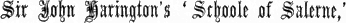
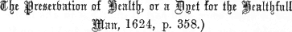

[Harl. MS. 4011, Fol. 171.]
I n nomine patris, god kepe me / et filij for charite,
Et spiritus sancti, where that y goo by lond or els by see!
I am an Usher to a Prince, andan vsshere y Am / ye may beholde / to a prynce of highe degre,
delight in teaching 4þat enioyethe to enforme & teche / alle þo thatt wille thrive & thee1,
Of suche thynges as here-aftur shalle be shewed by my diligence
the inexperienced.To them þat nought Can / with-owt gret exsperience;
Therfore yf any mañ þat y mete withe, þat2 for fawt of necligence,
8y wylle hym enforme & teche, for hurtynge of my Conscience.
It is charitable to teachTo teche vertew and connynge, me thynkethe hit charitable,
ignorant youths.for moche youthe in connynge / is bareñ & fulle vnable;
If any such won’t learn,þer-fore he þat no good cañ / ne to nooñ wille be agreable.
give them a toy. 12he shalle neuer y-thryve / þerfore take to hym a babulle.
2 IOHN RUSSELL MEETS WITH HIS PUPIL.One May I went to a forest,
As y rose owt of my bed, in a mery sesoun of may,
to sporte me in a forest / where sightes were fresche & gay,
and by the Forester’s leave walked in the woodland,y met with þe forster / y prayed hym to say me not nay,
16þat y mygh[t] walke in to his lawnde3 where þe deere lay.
as y wandered weldsomly4 / in-to þe lawnd þat was so grene,
where I saw three herds of deerþer lay iij. herdis of deere / a semely syght for to sene;
in the sunshine.y behild oñ my right hand / þe soñ þat shoñ so shene;
A young man with a bow was going to stalk them, 20y saw where walked / a semely yonge mañ, þat sklendur was & leene;
his bowe he toke in hand toward þe deere to stalke;
but I asked him to walk with me,y prayed hym his shote to leue / & softely with me to walke.
þis yonge mañ was glad / & louyd with me to talke,
24he prayed þat he myȝt withe me goo / in to som herne5 or halke6;
and inquired whom he served.þis yonge mañ frayned7 / with hoom þat he wonned þañ,
‘No one but myself,“So god me socoure,” he said / “Sir, y serue myself / & els nooñ oþer mañ.”
“is þy gouernaunce good?” y said, / “soñ, say me ȝiff þow cañ.”
and I wish I was out of this world.’ 28“y wold y were owt of þis world” / seid he / “y ne rouȝt how sone whañ.”
3 ‘Good son,“Sey nought so, good soñ, beware / me thynkethe þow menyst amysse;
despair is sin;for god forbedithe wanhope, for þat a horrible synne ys,
tell me what the matter is.þerfore Soñ, opeñ thyñ hert / for peraveñture y cowd the lis8;
When the pain is greatest the cure is nearest!’ 32“wheñ bale is hext / þañ bote is next” / good sone, lerne welle þis.”
‘Sir, I’ve tried everywhere for a“In certeyñ, sir / y haue y-sought / Ferre & nere many a wilsom way
master; but because I knowto gete mete9 a mastir; & for y cowd nouȝt / euery mañ seid me nay,
nothing, no one will take me.’y cowd no good, ne nooñ y shewde /where euer y ede day by day
36but wantouñ & nyce, recheles & lewde / as Iangelynge as a Iay.”
‘Will you learn if I’ll teach you? [Fol. 171 b.]
“Now, son, ȝiff y the teche, wiltow any thynge lere?
What do you want to be?’wiltow be a seruaunde, plowȝmañ, or a laborere,
Courtyour or a clark / Marchaund / or masoun, or an artificere,
40Chamburlayn, or buttillere / pantere or karvere?”
‘A Butler, Sir, Panter, Chamberlain, and Carver. Teach me the duties of these.’
“The office of buttiler, sir, trewly / pantere or chamburlayne,
The connynge of a kervere, specially / of þat y wold lerne fayne
alle þese connynges to haue / y say yow in certayñ,
44y shuld pray for youre sowle nevyr to come in payne.”
‘I will, if you’ll love God and be
“Son, y shalle teche þe withe ryght a good wille,
So þat þow loue god & drede / for þat is ryght and skylle,
4 true to your master.’and to þy mastir be trew / his goodes þat þow not spille,
48but hym loue & drede / and hys commaundementȝ dew / fulfylle.
THE DUTIES OF THE PANTER OR BUTLER. A Panter or Butler must haveThe furst yere, my soñ, þow shalle be pantere or buttilare,
three knives:þow must haue iij. knyffes kene / in pantry, y sey the, euermare:
1 to chop loaves, 1 to pare them,Oñ knyfe þe loves to choppe, anothere them for to pare,
1 to smooth the trenchers. 52the iij. sharpe & kene to smothe þe trenchurs and square.10
Give your Sovereign new bread,alwey thy soueraynes bred thow choppe, & þat it be newe & able;
others one-day-old bread;se alle oþer bred a day old or þou choppe to þe table;
for the house, three-day bread;alle howsold bred iij. dayes old / so it is profitable;
56 for trenchers four-day bread;and trencher bred iiij. dayes is convenyent & agreable.
Have your salt white,
loke þy salte be sutille, whyte, fayre and drye,
and your salt-planer of ivory,and þy planere for thy salte / shalle be made of yverye /
two inches broad, three long.þe brede þerof ynches two / þen þe length, ynche told thrye;
60and þy salt sellere lydde / towche not thy salt bye.
Have your table linen sweet and clean,Good soñ, loke þat þy napery be soote / & also feyre & clene,
bordclothe, towelle & napkyñ, foldyñ alle bydene.
your knives bright,bryght y-pullished youre table knyve, semely in syȝt to sene;
spoons well washed, 64and þy spones fayre y-wasche / ye wote welle what y meene.
5 two wine-augerslooke þow haue tarrers11 two / a more & lasse for wyne;
some box taps,wyne canels12 accordynge to þe tarrers, of box fetice & fyne;
a broaching gimlet,also a gymlet sharpe / to broche & perce / sone to turne & twyne,
a pipe and bung. 68with fawcet13 & tampyne14 redy / to stoppe when ye se tyme.
To broach a pipe,So wheñ þow settyst a pipe abroche / good [sone,] do aftur my lore:
pierce it with an auger or gimlet, four fingers-iiij fyngur ouer / þe nere chyne15 þow may percer or bore;
breadth over the lower rim,with tarrere or gymlet perce ye vpward þe pipe ashore16,
so that the dregs may not rise. 72and so shalle ye not cawse þe lies vp to ryse, y warne yow euer more.
Serve Fruit according to the season,
Good sone, alle maner frute / þat longethe for sesoñ of þe yere,
figs, dates,Fygges / reysons / almandes, dates / buttur, chese17 / nottus, apples, & pere,
quince-marmalade, ginger, &c.Compostes18 & confites, chare de quynces / white & grene gyngere;
6 OF FRUITS BEFORE DINNER AND AFTER SUPPER. 76and ffor aftur questyons, or þy lord sytte / of hym þow know & enquere.
[Fol. 172.] Before dinner, plums and grapes;Serve fastynge / plommys / damsons / cheries / and grapis to plese;
after, pears, nuts, and hard cheese.aftur mete / peeres, nottys / strawberies, wȳneberies,19 and hardchese,
also blawnderelles,20 pepyns / careawey in comfyte / Compostes21 ar like to þese.
After supper, roast apples, &c. 80aftur sopper, rosted apples, peres, blaunche powder,22 your stomak for to ese.
7 In the evening don’t take cream, at eve] ‘at eve’ has a red mark through as if to cut it out.Bewar at eve / of crayme of cowe & also of the goote, þauȝ it be late,
strawberries, or junket,of Strawberies & hurtilberyes / with the cold Ioncate,23
For þese may marre many a mañ changynge his astate,
unless you eat hard cheese with them. 84but ȝiff he haue aftur, hard chese / wafurs, with wyne ypocrate.24
Hard cheese keeps your bowels open.hard chese hathe þis condicioun in his operacioun:
Furst he wille a stomak kepe in the botom opeñ,25
the helthe of euery creature ys in his condicioun;
88yf he diete hym̅ thus dayly / he is a good conclusioun.
Butter is wholesome in youth and old age, anti-poisonous,buttir is an holsom mete / furst and eke last,26
For he wille a stomak kepe / & helpe poyson a-wey to cast,
and aperient.also he norishethe a mañ to be laske / and evy humerus to wast,
92and with white bred / he wille kepe þy mouthe in tast.
8 THE TREATMENT OF WINES WHEN FERMENTING. Milk, Junket,Milke, crayme, and cruddes, and eke the Ioncate,27
Posset, &c., are binding.þey close a mannes stomak / and so dothe þe possate;
Eat hard cheese after them.þerfore ete hard chese aftir, yef ye sowpe late,
96and drynk romney modoun,28 for feere of chekmate.29
Beware of green meat; it weakens your belly.beware of saladis, grene metis, & of frutes rawe
for þey make many a mañ haue a feble mawe.
Þerfore, of suche fresch lustes set not an hawe,
100For suche wantoun appetites ar not worth a strawe.
For food that sets your teeth on edge, eat almonds and cheese,alle maner metis þat þy tethe oñ egge doth sette,
take almondes þerfore; & hard chese loke þou not for-gette.
but not more than half an ounce.hit wille voide hit awey / but looke to moche þerof not þou ete;
104for þe wight of half an vnce with-owt rompney is gret.
If drinks have given you indigestion, eat a raw apple.Ȝiff dyuerse drynkes of theire fumosite haue þe dissesid,
Ete an appulle rawe, & his fumosite wille be cesed;
Moderation is best sometimes,mesure is a mery meene / whañ god is not displesed;
at others abstinence. 108abstynens is to prayse what body & sowle ar plesed.
Look every night that your wines
Take good hede to þe wynes / Red, white / & swete,
don’t ferment or leak; leak] the t of the MS. has a k over it.looke euery nyȝt with a Candelle þat þey not reboyle / nor lete;
and wash the heads of the pipes with cold water.euery nyȝt with cold watur washe þe pipes hede, & hit not forgete,
Always carry a gimlet, adze, and linen cloths. 112& alle-wey haue a gymlet, & a dise,30 with lynneñ clowtes smalle or grete.
9 If the wine boil over,
Ȝiff þe wyne reboyle / þow shalle know by hys syngynge;
put to it the lees of red wine,þerfore a pipe of coloure de rose31 / þou kepe þat was spend in drynkynge
[Fol. 172 b.] and that will cure it.the reboyle to Rakke to þe lies of þe rose / þat shalle be his amendynge.
Romney will bring round sick sweet wine. 116Ȝiff swete wyne be seeke or pallid / put in a Rompney for lesynge.32
Swete Wynes.33
The names of Sweet Wines.The namys of swete wynes y wold þat ye them knewe:
Vernage, vernagelle, wyne Cute, pyment, Raspise, Muscadelle of grew,
Rompney of modoñ, Bastard, Tyre, Oȝey, Torrentyne of Ebrew.
120Greke, Malevesyñ, Caprik, & Clarey whañ it is newe.
HOW TO MAKE YPOCRAS.Ypocras.
Recipe for making Ypocras.Good soñ, to make ypocras, hit were gret lernynge,
Take spices thus,and for to take þe spice þerto aftur þe proporcionynge,
Cinnamon, &c., for lordes34 [MS].Gynger, Synamome / Graynis, Sugur / Turnesole, þat is good colourynge;
long Pepper fo[r] commynte 124For commyñ peple / Gynger, Canelle / longe pepur / hony aftur claryfiynge.
10 Have three basinslook ye haue of pewtur basons ooñ, two, & thre,
For to kepe in youre powdurs / also þe licour þerin to renne wheñ þat nede be;
and three straining-bags to them;to iij. basouns ye must haue iij bagges renners / so clepe ham we,
hang ’em on a perch. 128& hange þem̅ oñ a perche, & looke þat Sure they be.
Let your ginger be well pared,Se þat youre gynger be welle y-pared / or hit to powder ye bete,
hard, not worm-eaten,and þat hit be hard / with-owt worme / bytynge, & good hete;
(Colombyne is betterFor good gynger colombyne / is best to drynke and ete;
than Valadyne or Maydelyne); 132Gynger valadyne & maydelyñ ar not so holsom in mete.
your sticks of Cinnamon thin,looke þat your stikkes of synamome be thyñ, bretille, & fayre in colewre,
hot and sweet;and in youre mowthe, Fresche, hoot, & swete / þat is best & sure,
Canel is not so good.For canelle is not so good in þis crafte & cure.
Cinnamon is hot and dry, 136Synamome is hoot & dry in his worchynge while he wille dure.
Cardamons are hot and moist.
Graynes of paradise,35 hoote & moyst þey be:
Take sugar orSugre of .iij. cute36 / white / hoot & moyst in his
propurte;
sugar candy,Sugre Candy is best of alle, as y telle the,
red wine, 140and red wyne is whote & drye to tast, fele, & see,
graines, ginger, pepper,Graynes35 / gynger, longe pepur, & sugre / hoot & moyst in worchynge;37
11 cinnamon, spice,Synamome / Canelle38 / red wyne / hoot & drye in þeire doynge;
and turnesole, andTurnesole39 is good & holsom for red wyne colowrynge:
144alle þese ingredyentes, þey ar for ypocras makynge.
put each powder in a bladder by itself.Good soñ, youre powdurs so made, vche by þam self in bleddur laid,
Hang your straining-bags so thathange sure youre perche & bagges þat þey from yow not brayd,
they mayn’t touch,—first bag a gallon, others a pottle.& þat no bagge touche oþer / do as y haue yow saide;
148þe furst bag a galoun / alle oþer of a potelle, vchoñ by oþer teied.
[Fol. 173.] Put the powders in two or three gallons of red wine;Furst put in a basoun a galoun ij. or iij. wyne so red;
þeñ put in youre powdurs, yf ye wille be sped,
then into the runner, the second bag,and aftyr in-to þe rennere so lett hym be fed,
152þañ in-to þe second bagge so wold it be ledde.
loke þou take a pece in þyne hand euermore amonge,
(tasting and trying it now and then),and assay it in þy mouthe if hit be any thynge stronge,
and if þow fele it welle boþe with mouthe & tonge,
and the third vessel. 156þañ put it in þe iij. vesselle / & tary not to longe.
If it’s not right,And þañ ȝiff þou feele it be not made parfete,
þat it cast to moche gynger, with synamome alay þat hete;
add cinnamon, ginger, or sugar, as wanted.and if hit haue synamome to moche, with gynger of iij. cute;
160þañ if to moche sigure þer be / by discressioun ye may wete.
If it’s not right, add cinnamon, ginger, or sugar, as wanted.Thus, son, shaltow make parfite ypocras, as y the say;
12 Mind you keep tasting it.but with þy mowthe to prove hit, / be þow tastynge alle-way;
Strain it through bags of fine cloth,let hit renne in iiij. or vj bagges40; gete þem, if þow may,
164of bultelle clothe41, if þy bagges be þe fynere with-owteñ nay.
hooped at the mouth,Good soñ loke þy bagges be hoopid at þe mothe a-bove,
þe surere mayst þow put in þy wyne vn-to þy behoue,
the first holding a gallon, the others a pottle,þe furst bag of a galoun / alle oþer of a potelle to prove;
168hange þy bagges sure by þe hoopis; do so for my loue;
and each with a basin under it.And vndur euery bagge, good soñ, a basoun clere & bryght;
The Ypocras is made.and now is þe ypocras made / for to plese many a wight.
Use the dregs in the kitchen.þe draff of þe spicery / is good for Sewes in kychyn diȝt;
172and ȝiff þow cast hit awey, þow dost þy mastir no riȝt.
Now, good son, þyne ypocras is made parfite & welle;
Put the Ypocras in a tight clean vessel,y wold þan ye put it in staunche & a clene vesselle,
and þe mouthe þer-off y-stopped euer more wisely & felle,
and serve it with wafers. 176and serue hit forth with wafurs boþe in chambur & Celle.
THE BOTERY.The Buttery.
The botery.
Keep all cups, &c., clean.Thy cuppes / þy pottes, þou se be clene boþe with-in & owt;
Don’t serve ale till it’s five days old.[T]hyne ale .v. dayes old er þow serue it abowt,
13for ale þat is newe is wastable with-owteñ dowt:
180And looke þat alle þynge be pure & clene þat ye go abowt.
Be civil and obliging,Be fayre of answere / redy to serue / and also gentelle of chere,
and þañ meñ wille sey ‘þere gothe a gentille officere.’
and give no one stale drink.be ware þat ye geue no persone palled42 drynke, for feere
184hit myȝt brynge many a man in dissese / durynge many a ȝere.
HOW TO LAY THE CLOTH AND WRAP UP BREAD. [Fol. 173 b.]To lay the cloth, &c.
Son, hit is tyme of þe day / þe table wold be layde.
Wipe the tableFurst wipe þe table with a clothe or þat hit be splayd,
Put a cloth on it (a cowche);þañ lay a clothe oñ þe table / a cowche43 it is called & said:
you take one end, your mate the other; 188take þy felow ooñ ende þerof / & þou þat othere that brayde,
lay the fold of the second cloth(?) on the outer edge of the table,Thañ draw streight þy clothe, & ley þe bouȝt44 oñ þe vttur egge of þe table,
take þe vpper part / & let hyt hange evyñ able:
that of the third cloth(?) on the inner.þanñ take þe .iij. clothe, & ley the bouȝt oñ þe Inner side plesable,
192and ley estate with the vpper part, þe brede of half fote is greable.
Cover your cupboard with a diaper towel,Cover þy cuppeborde of thy ewery with the towelle of diapery;
put one round your neck, one side on your left armtake a towelle abowt thy nekke / for þat is curtesy,
lay þat ooñ side of þe towaile oñ þy lift arme manerly,
14 with your sovereign’s napkin; 196an oñ þe same arme ley þy soueraignes napkyñ honestly;
on that, eight loaves to eat, and three or four trencher loaves: in your leftþañ lay oñ þat arme viij. louys bred / with iij. or iiij. trenchere lovis;
Take þat oo ende of þy towaile / in þy lift hand, as þe maner is,
the salt-cellar.and þe salt Sellere in þe same hand, looke þat ye do this;
In your right hand, spoons and knives. 200þat oþer ende of þe towaile / in riȝt hand with spones & knyffes y-wis;
Put the Salt on the right of your lord;
Set youre salt oñ þe right side / where sittes youre soverayne,
on its left, a trencher or two;oñ þe lyfft Side of youre salt / sett youre trencher oon & twayne,
on their left, a knife, . . . .] a space in the MS. then white rolls,oñ þe lifft side of your trenchoure lay youre knyffe synguler & playñ;
204and oñ þe . . . . side of youre knyffes / ooñ by oñ þe white payne;
and beside them a spoon folded in a napkin.
youre spone vppoñ a napkyñ fayre / ȝet foldeñ wold he be,
besides þe bred it wold be laid, soñ, y telle the:
Cover all up.Cover your spone / napkyñ, trencher, & knyff, þat no mañ hem se.
At the other end set a Salt and two trenchers. 208at þe oþer ende of þe table / a salt with ij. trenchers sett ye.
How to wrap up your lord’s bread in a stately way. Sir] ? MS.
Sir, ȝeff þow wilt wrappe þy soueraynes bred stately,
Thow must square & proporcioun þy bred clene & evenly,
Cut your loaves all equal.and þat no loof ne bunne be more þañ oþer proporcionly,
212and so shaltow make þy wrappe for þy master manerly;
Take a towel two and a half yardsþañ take a towaile of Raynes,45 of ij. yardes and half wold it be,
15 long by the ends,take þy towaile by the endes dowble / and faire oñ a table lay ye,
fold up a handful from each end,þañ take þe end of þat bought / an handfulle in hande, now here ye me:
216wrap ye hard þat handfulle or more it is þe styffer, y telle þe
and in the middle of the folds layÞañ ley betwene þe endes so wrapped, in myddes of þat towelle,
eight loaves or buns, bottom to bottom;viij loves or bonnes, botom to botom̅, forsothe it wille do welle,
put a wrapperand wheñ þe looffes ar betweñ, þañ wrappe hit wisely & felle;
220and for youre enformacioun more playnly y wille yow telle,
[Fol. 174.] on the top,ley it oñ þe vpper part of þe bred, y telle yow honestly;
twist the ends of the towel together,take boþe endis of þe towelle, & draw þem straytly,
and wrythe an handfulle of þe towelle next þe bred myghtily,
smooth your wrapper, 224and se þat thy wrappere be made strayt & evyñ styffely.
wheñ he is so y-graithed,46 as riȝt before y haue saide,
and quicklyþeñ shalle ye opeñ hym thus / & do hit at a brayd,
open the end of it before your lord.opeñ þe last end of þy wrappere before þi souerayne laid,
228and youre bred sett in maner & forme: þeñ it is honestly arayd.
After your lord’s
Soñ, wheñ þy souereignes table is drest in þus array,
lay the other tables.kouer alle oþer bordes with Saltes; trenchers & cuppes þeroñ ye lay;
Deck your cupboard with plate,þan emperialle þy Cuppeborde / with Siluer & gild fulle gay,
16 your washing-table with basins, &c. 232þy Ewry borde with basons & lauour, watur hoot & cold, eche oþer to alay.
Have plenty of napkins, &c.,loke pat ye haue napkyns, spones, & cuppis euer y-nowe
to your soueraynes table, youre honeste for to allowe,
and your pots clean.also þat pottes for wyne & ale be as clene as þey mowe;
236be euermore ware of flies & motes, y telle þe, for þy prowe.
HOW TO LAY THE SURNAPE AND TABLE.Make the Surnape with a cloth under a double napkin.
The surnape47 ye shulle make with lowly curtesye
with a clothe vndir a dowble of riȝt feire napry;
take thy towailes endes next yow with-out vilanye,
Fold the two ends of your towel, and one of the cloth, 240and þe ende of þe clothe oñ þe vttur side of þe towelle bye;
Thus alle iij. endes hold ye at onis, as ye welle may;
a foot over,now fold ye alle there at oonys þat a pliȝt passe not a fote brede alle way,
and lay it smooth foryour lord to wash with.þañ lay hyt fayre & evyñ þere as ye cañ hit lay;
244þus aftur mete, ȝiff yowre mastir wille wasche, þat he may.
at þe riȝt ende of þe table ye must it owt gyde,
The marshal must slip it along the table,þe marchalle must hit convey alonge þe table to glide;
So of alle iij clothes vppeward þe riȝt half þat tide,
and pull it smooth. 248and þat it be draw strayt & evyñ boþe in lengthe & side.
Then raise the upper part of the towel,Then must ye draw & reyse / þe vpper parte of þe towelle,
and lay it even,Ley it with-out ruffelynge streiȝt to þat oþer side, y þe telle;
þañ at euery end þerof convay half a yarde or an elle,
17 so that the Sewer (arranger of dishes) may make a state. make is repeated in the MS. 252þat þe sewere may make a state / & plese his mastir welle.
When your lord has washed,whan þe state hath wasche, þe surnap drawne playne,
take up the Surnape with yourþeñ must ye bere forþe þe surnape before youre souerayne,
two arms,and so must ye take it vppe withe youre armes twayne,
and carry it back to the Ewery. 256and to þe Ewery bere hit youre silf agayne.
Carry a towel round your neck.a-bowt youre nekke a towelle ye bere, so to serue youre lorde,
þañ to hym make curtesie, for so it wille accorde.
Uncover your bread;vnkeuer youre brede, & by þe salt sette hit euyñ oñ þe borde;
see that all diners have knife, spoon, and napkin. 260looke þere be knyfe & spone / & napkyñ with-outy[n] any worde.
[Fol. 174 b.] Bow when you leave your lord.Euer whañ ye departe from youre soueraigne, looke ye bowe your knees;
Take eight loaves from the bread-cloth,to þe port-payne48 forthe ye passe, & þere viij. loues ye leese:
and put four at each end.Set at eiþur end of þe table .iiij. loofes at a mese,
264þañ looke þat ye haue napkyñ & spone euery persone to plese.
Lay for as many persons as thewayte welle to þe Sewere how many potages keuered he;
Sewer has set potages for,keuer ye so many personis for youre honeste.
þañ serve forthe youre table / vche persone to his degre,
and have plenty of bread and drink. 268and þat þer lak no bred / trenchoure, ale, & wyne / euermore ye se.
18 SYMPLE CONDICIONS: HOW TO BEHAVE. Be lively and soft-spoken, clean and well dressed.be glad of chere / Curteise of kne / & soft of speche,
Fayre handes, clene nayles / honest arrayed, y the teche;
Don’t spit or put your fingers into cups. Coughe] Mark over h.Coughe not, ner spitte, nor to lowd ye reche,
272ne put youre fyngurs in the cuppe / mootes for to seche.
Stop all blamingyet to alle þe lordes haue ye a sight / for groggynge & atwytynge49
and backbiting,of fellows þat be at þe mete, for þeire bakbytynge;
and prevent complaints.Se þey be serued of bred, ale, & wyne, for complaynynge,
276and so shalle ye haue of alle meñ / good loue & praysynge.
General Directions for Behaviour.
Symple condicions.
Symple Condicyons of a persone þat is not taught,
y wille ye eschew, for euermore þey be nowght.
Don’t claw your back as if after a flea;youre hed ne bak ye claw / a fleigh as þaughe ye sought,
or your head, as if after a louse. 280ne youre heere ye stryke, ne pyke / to pralle50 for a flesche mought.51
See that your eyes are not blinkingGlowtynge52 ne twynkelynge with youre yȝe / ne to heuy of chere,
and watery.watery / wynkynge / ne droppynge / but of sight clere.
Don’t pick your nose, or let it drop,pike not youre nose / ne þat hit be droppynge with no peerlis clere,
or blow it too loud, 284Snyff nor snitynge53 hyt to lowd / lest youre souerayne hit here.
19 or twist your neck.wrye not youre nek a doyle54 as hit were a dawe;
Don’t claw your cods,put not youre handes in youre hoseñ youre codware55 fer to clawe,
nor pikynge, nor trifelynge / ne shrukkynge as þauȝ ye wold sawe;
rub your hands, 288your hondes frote ne rub / brydelynge with brest vppoñ your crawe;
pick your ears,with youre eris pike not / ner be ye slow of herynge;
retch, or spit too far.areche / ne spitt to ferre / ne haue lowd laughynge;
Speke not lowd / be war of mowynge56 & scornynge;
Don’t tell lies, 292be no lier with youre mouthe / ne lykorous, ne dryvelynge.
or squirt with your mouth,with youre mouthe ye vse nowþer to squyrt, nor spowt;
gape, pout, orbe not gapynge nor ganynge, ne with þy mouth to powt
put your tongue in a dish to pick dust out.lik not with þy tonge in a disch, a mote to haue owt.
296Be not rasche ne recheles, it is not worth a clowt.
[Fol. 175.] Don’t cough,with youre brest / sighe, nor cowghe / nor brethe, youre souerayne before;
hiccup, or belch,be yoxinge,57 ne bolkynge / ne gronynge, neuer þe more;
20 straddle your legs,with youre feet trampelynge, ne settynge youre leggis a shore58;
or scrub your body. 300with youre body be not shrubbynge59; Iettynge60 is no loore.
Don’t pick your teeth,Good soñ, þy tethe be not pikynge, grisynge,61 ne gnastynge62;
cast stinking breath on your lord,ne stynkynge of brethe oñ youre souerayne castynge;
with puffynge ne blowynge, nowþer fulle ne fastynge;
fire your stern guns, or expose 304and alle wey be ware of þy hyndur part from gunnes blastynge.
your codwareThese Cuttid63 galauntes with theire codware; þat is añ vngoodly gise;—
Other tacches64 as towchynge / y spare not to myspraue aftur myne avise,—
21 before your master.wheñ he shalle serue his mastir, before hym̅ oñ þe table hit lyes;
308Euery souereyne of sadnes65 alle suche sort shalle dispise.
Many other improprietiesMany moo condicions a mañ myght fynde / þañ now ar named here,
a good servant will avoid.’þerfore Euery honest seruand / avoyd alle thoo, & worshippe lat hym leere.
Panter, yomañ of þe Cellere, butlere, & Ewere,
312y wille þat ye obeye to þe marshalle, Sewere, & kervere.66’
HOW TO CARVE, AND TO LAY TRENCHERS.‘Sir, pray teach me how to carve, connynge] MS. comynge.
“Good syr, y yow pray þe connynge of kervynge ye wille me teche,
handle a knife, and cut up birds,and þe fayre handlynge of a knyfe, y yow beseche,
and alle wey where y shalle alle maner fowles / breke, vnlace, or seche,67
fish, and flesh.’ 316and with Fysche or flesche, how shalle y demene me with eche.”
“Soñ, thy knyfe must be bryght, fayre, & clene,
and þyne handes faire wasche, it wold þe welle be sene.
‘Hold your knife tight, with two fingers and a thumb,hold alwey thy knyfe sure, þy self not to tene,
320and passe not ij. fyngurs & a thombe oñ thy knyfe so kene;
in your midpalm.In mydde wey of thyne hande set the ende of þe haft Sure,
Do your carving, lay your bread, and take off trenchers,Vnlasynge & mynsynge .ij. fyngurs with þe thombe / þat may ye endure.
with two fingers and thumb.kervynge / of bred leiynge / voydynge / of cromes & trenchewre,
324with ij. fyngurs and a thombe / loke ye haue þe Cure.
22Sett neuer oñ fysche nor flesche / beest / nor fowle, trewly,
Moore þañ ij. fyngurs and a thombe, for þat is curtesie.
Never touch others’ food with your right hand,Touche neuer with youre right hande no maner mete surely,
but only with the left. 328but with your lyft hande / as y seid afore, for þat is goodlye.
[Fol. 175 b.]Alle-wey with youre lift hand hold your loof with myght,
and hold youre knyfe Sure, as y haue geue yow sight.
Don’t dirty your tableenbrewe68 not youre table / for þañ ye do not ryght,
or wipe your knives on it. 332ne þer-vppoñ ye wipe youre knyffes, but oñ youre napkyñ plight.
Take a loaf of trenchers, andFurst take a loofe of trenchurs in þy lifft hande,
þañ take þy table knyfe,69 as y haue seid afore hande;
with the edge of your knife raise a trencher, and lay it before your lord;with the egge of þe knyfe youre trenchere vp be ye reysande
336as nyghe þe poynt as ye may, to-fore youre lord hit leyande;
lay four trenchers four-square,right so .iiij. trenchers ooñ by a-nothur .iiij. square ye sett,
and another on the top.and vppoñ þo trenchurs .iiij. a trenchur sengle with-out lett;
Take a loaf of light bread,þañ take youre loof of light payne / as y haue said ȝett,
340and with the egge of þe knyfe nyghe your hand ye kett.
pare the edges,Furst pare þe quarters of the looff round alle a-bowt,
23 cut the upper crust for your lord,þañ kutt þe vpper crust / for youre souerayne, & to hym alowt.
Suffere youre parelle70 to stond stille to þe botom / & so nyȝe y-spend owt,
cromes] MS. may be coomes. 344so ley hym of þe cromes a quarter of þe looff Sauncȝ dowt;
and don’t touch it after it’s trimmed.Touche neuer þe loof aftur he is so tamed,
put it, [on] a platere or þe almes disch þer-fore named.
Keep your table clean.Make clene youre bord euer, þañ shalle ye not be blamed,
348þañ may þe sewere his lord serue / & neythur of yow be gramed71
FUMOSITEES.Indigestibilities.
Fumositees.
You must know what meat is indigestible,Of alle maner metes ye must thus know & fele
þe fumositees of fysch, flesche, & fowles dyuers & feele,
and what sauces are wholesome.And alle maner of Sawces for fische & flesche to preserue your lord in heele;
352to yow it behouyth to knew alle þese euery deele.”
“Syr, hertyly y pray yow for to telle me Certenle
of how many metes þat ar fumose in þeire degre.”
These things are indigestible:“In certeyñ, my soñ, þat sone shalle y shew the
356by letturs dyuers tolde by thries thre,
F, R, and S / in dyuerse tyme and tyde
Fat and Fried,F is þe furst / þat is, Fatt, Farsed, & Fried;
Raw and Resty,R, raw / resty, and rechy, ar comberous vndefied;
Salt and Sour, 360S / salt / sowre / and sowse72 / alle suche þow set a-side,
24 also sinews, skin, hair, feathers, crops,with other of the same sort, and lo thus ar thay,
Senowis, skynnes / heere / Cropyns73 / yonge fedurs for certeñ y say,
heads, pinions, &c.,heedis / pynnyns, boonis / alle þese pyke away,
364Suffir neuer þy souerayne / to fele þem, y the pray /
legs,Alle maner leggis also, bothe of fowle and beestis,
outsides of thighs,the vttur side of the thyghe or legge of alle fowlis in feestis,
skins;the fumosite of alle maner skynnes y promytt þee by heestis,
these destroy your lord’s rest.’ 368alle þese may benym74 þy souerayne / from many nyghtis restis.”
‘Thanks, father,
“Now fayre befalle yow fadur / & welle must ye cheve,75
I’ll put your teaching into practice,For these poyntes by practik y hope fulle welle to preve,
and pray for you.and yet shalle y pray for yow / dayly while þat y leue /
372bothe for body and sowle / þat god yow gyde from greve;
But pleasePraynge yow to take it, fadur / for no displesure,
yf y durst desire more / and þat y myghte be sure
tell me how to carve fish and flesh.’to know þe kervynge of fische & flesche / aftur cockes cure:
376y hed leuer þe sight of that / thañ A Scarlet hure.”76
KERUYNG OF FLESH.Carving of Meat.
Kervyng of flesh:
Cut brawn on the dish, and lift“Son, take þy knyfe as y taught þe while ere,
kut bravne in þe dische riȝt as hit liethe there,
25 slices off with your knife;and to þy souereynes trenchoure / with þe knyfe / ye hit bere:
380pare þe fatt þer-from / be ware of hide & heere.
Thañ whan ye haue it so y-leid / oñ þy lordes trenchoure,
serve it with mustard.looke ye haue good mustarde þer-to and good licoure;
Venison with furmity.Fatt venesoun with frumenty / hit is a gay plesewre
384youre souerayne to serue with in sesoun to his honowre:
Touch Venison only with your knife,Towche not þe venisoun with no bare hand
but withe þy knyfe; þis wise shalle ye be doande,
pare it,withe þe fore part of þe knyfe looke ye be hit parand,
cross it with 12 scores, 388xij. draughtes with þe egge of þe knyfe þe venison crossande.
[Fol. 176 b.]Thañ whañ ye þat venesoun so haue chekkid hit,
cut a piece out, and put it in the furmity soup.with þe fore parte of youre knyfe / þat ye hit owt kytt,
In þe frumenty potage honestly ye convey hit,
392in þe same forme with pesyñ & bakeñ whañ sesoun þer-to dothe sitt.
Touch with your left hand,Withe youre lift hand touche beeff / Chyne77 / motoun, as is a-fore said,
pare it clean,& pare hit clene or þat ye kerve / or hit to your lord be layd;
and as it is showed afore / beware of vpbrayde;
put away the sinews, &c. 396alle fumosite, salt / senow / Raw / a-side be hit convayde.
Partridges, &c.: take upIn sirippe / partriche / stokdove / & chekyns, in seruynge,
by the pinion,with your lifft hand take þem by þe pynoñ of þe whynge,
26 HOW TO CARVE LARGE ROAST BIRDS, SWAN, CAPON, &C.& þat same with þe fore parte of þe knyfe be ye vp rerynge,
and mince them small in the sirrup. 400Mynse hem smalle in þe siruppe: of fumosite algate be ye feerynge.
Larger roast birds, as the Osprey, &c.,Good soñ, of alle fowles rosted y telle yow as y Cañ,
Every goos / teele / Mallard / Ospray / & also swanne,
raise up [? cut off] the legs, then the wings,reyse vp þo leggis of alle þese furst, y sey the thañ,
404afftur þat, þe whynges large & rownd / þañ dare blame þe no man;
lay the body in the middle,Lay the body in myddes of þe dische / or in a-nodur chargere,
with the wings and legs round it,of vche of þese with whynges in myddes, þe legges so aftir there.
ye] MS. may be yo.of alle þese in .vj. lees78 / if þat ye wille, ye may vppe arere,
in the same dish. 408& ley þem̅ betwene þe legges, & þe whynges in þe same platere.
Capons:Capoñ, & hen of hawt grees79, þus wold þey be dight:—
take off the wings and legs;Furst, vn-lace þe whynges, þe legges þan in sight,
pour on ale or wine,Cast ale or wyne oñ þem̅, as þer-to belongeth of ryght,
mince them into the flavoured sauce. 412& mynse þem̅ þañ in to þe sawce with powdurs kene of myght.
Take capoun or heñ so enlased, & devide;
Give your lord the left wing,take þe lift whynge; in þe sawce mynce hit eueñ beside,
and if he want it,and yf youre souerayne ete sauerly / & haue þerto appetide,
the right one too. 416þañ mynce þat oþur whynge þer-to to satisfye hym̅ þat tyde.
27 Pheasants, &c.:Feysaunt, partriche, plouer, & lapewynk, y yow say,
take off the wings, put them in the dish, then the legs.areyse80 þe whynges furst / do as y yow pray;
In þe dische forthe-withe, boþe þat ye ham lay,
420þañ aftur þat / þe leggus / without lengur delay.
Woodcocks,wodcok / Betowre81 / Egret82 / Snyte83 / and Curlew,
Heronshaws, Brew, &c.heyrounsew84 / resteratiff þey ar / & so is the brewe;85
þese .vij. fowles / must be vnlaced, y telle yow trew,
break the pinions, neck, and beak. 424breke þe pynons / nek, & beek, þus ye must þem shew.
[Fol. 177.]Thus ye must þem vnlace / & in thus manere:
Cut off the legs,areyse þe leggis / suffire þeire feete stille to be oñ there,
then the wings,þañ þe whynges in þe dische / ye may not þem forbere,
28 lay the body between them. 428þe body þañ in þe middes laid / like as y yow leere.
HOW TO CARVE THE CRANE, FAWN, VENISON, &C.Crane: take off the wings, but not
The Crane is a fowle / þat stronge is with to fare;
þe whynges ye areyse / fulle large evyñ thare;
the trompe in his breast.of hyre trompe86 in þe brest / loke þat ye beware.
432towche not hir trompe / euermore þat ye spare.
Peacocks, &c.:Pecok / Stork / Bustarde / & Shovellewre,
carve like you do the Crane,ye must vnlace þem in þe plite87 / of þe crane prest & pure,
keeping their feet on.so þat vche of þem̅ haue þeyre feete aftur my cure,
436and euer of a sharpe knyff wayte þat ye be sure.
Quails, larks, pigeons:Of quayle / sparow / larke / & litelle / mertinet,
pygeoun / swalow / thrusche / osulle / ye not forgete,
give your lord the legs first.þe legges to ley to your souereyne ye ne lett,
440and afturward þe whyngus if his lust be to ete.
Fawn: serve the kidney first,Off Foweñ / kid / lambe, / þe kydney furst it lay,
Þañ lifft vp the shuldur, do as y yow say,
then a rib.Ȝiff he wille þerof ete / a rybbe to hym̅ convay;
444but in þe nek þe fyxfax88 þat þow do away.
Pick the fyxfax out of the neck.venesoun rost / in þe dische if youre souerayne hit chese,
Pig: 1. shoulder, 2. rib.þe shuldir of a pigge furst / þañ a rybbe, yf hit wille hym plese;
29 Rabbit: lay him on his back;þe cony, ley hym oñ þe bak in þe disch, if he haue grece,
pare off his skin; 448while ye par awey þe skyñ oñ vche side / & þañ breke hym̅ or y[e] sece
break his haunch bone, cut him down each side of the back, lay him on his belly,betwene þe hyndur leggis breke þe canelle booñ,89
þañ with youre knyfe areyse þe sides alonge þe chyne Alone;
so lay your cony wombelonge vche side to þe chyne / by craft as y conne,
452betwene þe bulke, chyne, þe sides to-gedure lat þem be dooñ;
separate the sides from the chine,The .ij. sides departe from þe chyne, þus is my loore,
put them together again,þen ley bulke, chyne, & sides, to-gedire / as þey were yore.
cutting out the nape of the neck;Furst kit owte þe nape in þe nek / þe shuldurs before;
give your lord the sides. 456with þe sides serve youre soueranyne / hit state to restore.
Sucking rabbits: cut in two, thenRabettes sowkers,90 þe furþer parte from þe hyndur, ye devide;
the hind part in two; pare the skin off,þañ þe hyndur part at tweyñ ye kut þat tyde,
pare þe skyñ away / & let it not þere abide,
serve the daintiest bit from the side. 460þañ serue youre souerayne of þe same / þe deynteist of þe side.
[Fol. 177 b.]Such is the way of carving gross meats.
The maner & forme of kervynge of metes þat byñ groos,
afftur my symplenes y haue shewed, as y suppose:
yet, good soñ, amonge oþer estates euer as þow goose,
30 HOW TO CARVE LARGE AND SMALL BIRDS. 464as ye se / and by vse of youre self / ye may gete yow loos.
But furþermore enforme yow y must in metis kervynge;
Cut each piece into four slices (?) for your master to dip in his sauce.Mynse ye must iiij lees91 / to ooñ morselle hangynge,
þat youre mastir may take with .ij. fyngurs in his sawce dippynge,
468and so no napkyñ / brest, ne borclothe92, in any wise enbrowynge.
Of large birds’ wings,Of gret fowle / in to þe sawce mynse þe whynge this wise;
put only three bits at once in the sauce.pas not .iij. morcelles in þe sawce at onis, as y yow avise;
To youre souerayne þe gret fowles legge ley, as is þe gise,
472and þus mowe ye neuer mysse of alle connynge seruise.
Of small birds’ wings,Of alle maner smale bryddis, þe whyngis oñ þe trencher leyinge,
scrape the flesh to the end of the bone,with þe poynt of youre knyfe / þe flesche to þe booñ end ye brynge,
and put it on your lord’s trencher.and so conveye hit oñ þe trenchere, þat wise your souerayne plesynge,
476and with faire salt & trenchoure / hym̅ also oft renewynge.
How to carve Baked Meats.
Bake metes.93
Almanere bakemetes þat byñ good and hoot,
Open hot ones at the top of the crust,Opeñ hem aboue þe brym of þe coffyñ94 cote,
31 cold onesand alle þat byñ cold / & lusteth youre souereyñ to note,
in the middle. 480alwey in þe mydway opeñ hem ye mote.
Take Teal, &c., out of their pie,Of capoñ, chikeñ, or teele, in coffyñ bake,
Owt of þe pye furst þat ye hem take,
and mince their wings,In a dische besyde / þat ye þe whyngus slake,
484thynk95 y-mynsed in to þe same with your knyfe ye slake,
stir the gravy in;And stere welle þe stuff þer-in with þe poynt of your knyfe;
Mynse ye thynne þe whyngis, be it in to veele or byffe;
your lord may eat it with a spoon.with a spone lightely to ete your souerayne may be leeff,
488So with suche diet as is holsom he may lengthe his life.
[Fol. 178.]Cut Venison, &c., in the pasty.
Venesoun bake, of boor or othur venure,
Kut it in þe pastey, & ley hit oñ his trenchure.
Pygeoñ bake, þe leggis leid to youre lord sure,
Custard: cut in squares with a knife. 492Custard,96 chekkid buche,97 square with þe knyfe; þus is þe cure
32 HOW TO CARVE DOWCETES AND PAYNE PUFF.Þañ þe souerayne, with his spone whañ he lustethe to ete.
Dowcets: pare away the sides;of dowcetes,98 pare awey the sides to þe botom̅, & þat ye lete,
serve in a sawcer.In a sawcere afore youre souerayne semely ye hit sett
496whañ hym̅ likethe to atast: looke ye not forgete.
Payne-puff: pare the bottom, cut off the top.Payne Puff,99 pare þe botom nyȝe þe stuff, take hede,
Kut of þe toppe of a payne puff, do thus as y rede;
perueys] ? parneysAlso pety perueys100 be fayre and clene / so god be youre spede.
Fried things are indigestible. 500off Fryed metes101 be ware, for þey ar Fumose in dede.
33Fried metes.
Poached-egg (?) fritters are best.O Fruture viant102 / Frutur sawge,102 byñ good / bettur is Frutur powche;102
Appulle fruture103 / is good hoot / but þe cold ye not towche.
Tansey is good hot.Tansey104 is good hoot / els cast it not in youre clowche.
Don’t eat Leessez. 504alle maner of leesseȝ105 / ye may forbere / herbere in yow none sowche.
|
L e n - v o y |
Cookes with þeire newe conceytes, choppynge / stampynge, & gryndynge, Many new curies / alle day þey ar contryvynge & Fyndynge þat provokethe þe peple to perelles of passage / þrouȝ peyne soore pyndynge, 508& þrouȝ nice excesse of suche receytes / of þe life to make a endynge. |
Cooks are always inventing new dishes that tempt people and endanger their lives: |
|
Some with Sireppis106 / Sawces / Sewes,107 and soppes,108 34Comedies / Cawdelles109 cast in Cawdrons / ponnes, or pottes, leesses / Ielies110 / Fruturs / fried mete þat stoppes 512and distemperethe alle þe body, bothe bak, bely, & roppes:111 |
Syrups Comedies, Jellies, that stop the bowels. |
|
|
Some maner cury of Cookes crafft Sotelly y haue espied, how þeire dischmetes ar dressid with hony not claryfied. Cow heelis / and Calves fete / ar dere y-bouȝt some tide 516To medille amonge leeches112 & Ielies / whañ suger shalle syt a-side. |
Some dishes are prepared with unclarified honey. Cow-heels and Calves’ feet are sometimes mixed with unsugared leches and Jellies. |
Potages.113
[Fol. 178 b.]Wortus with an henne / Cony / beef, or els añ haare,
Furmity with venison,Frumenty114 with venesoun / pesyñ with bakoñ, longe wortes not spare;
Growelle of force115 / Gravelle of beeff116 / or motoun, haue ye no care;
35 mortrewes, 520Gely, mortrows117 / creyme of almondes, þe mylke118 þer-of is good fare.
jussell, &c., are good. vennure]The long r and curl for e in the MS. look like f, as if for vennuf.Iusselle119, tartlett120, cabages121, & nombles122 of vennure,
alle þese potages ar good and sure
Other out-of-the-way soups set aside.of oþer sewes & potages þat ar not made by nature,
524alle Suche siropis sett a side youre heere to endure.
Such is a
Now, soñ, y haue yow shewid somewhat of myne avise,
flesh feast in the English way.þe service of a flesche feest folowynge englondis gise;
Forgete ye not my loore / but looke ye bere good yȝes
528vppoñ oþur connynge kervers: now haue y told yow twise.
THE SAUCES FOR DIFFERENT DISHES.Sauces.
Diuerce Sawces.123
Sauces provokeAlso to know youre sawces for flesche conveniently,
a fine appetite.hit provokithe a fyne apetide if sawce youre mete be bie;
Have readyto the lust of youre lord looke þat ye haue þer redy
36 532suche sawce as hym likethe / to make hym glad & mery.
Mustard for brawn, &c.,Mustard124 is meete for brawne / beef, or powdred125 motoun;
Verjuice for veal, &c.,verdius126 to boyled capoun / veel / chikeñ /or bakoñ;
Chawdon for cygnet and swan,And to signet / & swañ, convenyent is þe chawdoñ127;
Garlic, &c., for beef and goose, 536Roost beeff / & goos / with garlek, vinegre, or pepur127a, in conclusioun.
Ginger for fawn, &c.,Gynger sawce128 to lambe, to kyd / pigge, or fawñ / in fere;
Mustard and sugar for pheasant, &c.,to feysand, partriche, or cony / Mustard with þe sugure;
Gamelyn for heronsew, &c.,Sawce gamelyñ129 to heyroñ-sewe / egret / crane / & plovere;
Sugar and Salt for brew, &c., 540also / brewe130 / Curlew / sugre & salt / with watere of þe ryvere;
37 Gamelyn for bustard, &c.,Also for bustard / betowre / & shovelere,131 gamelyñ132 is in sesoun;
Salt and Cinnamon for woodcock, thrushes, &c.,Wodcok / lapewynk / Mertenet / larke, & venysoun,
Sparows / thrusches / alle þese .vij. with salt & synamome:
and quails, &c. 544Quayles, sparowes, & snytes, whañ þeire sesoun com,133
Thus to provoke an appetide þe Sawce hathe is operacioun.
How to carve Fish.
Kervyng of fische.134
Now, good soñ, of kervynge of fysche y wot y must þe leere:
With pea soup or furmity serve a Beaver’s tail,To pesoñ135 or frumeñty take þe tayle of þe bevere,136
38 salt Porpoise, &c. 548or ȝiff ye haue salt purpose137 / ȝele138 / torrentille139, deynteithus fulle dere,
ye must do afture þe forme of frumenty, as y said while ere.
HOW TO CARVE HERRINGS AND SALT FISH.Bakeñ herynge, dressid & diȝt with white sugure;
Split up Herrings,þe white herynge by þe bak a brode ye splat hym̅ sure,
take out the roe and bones, 552bothe roughe & boonus / voyded / þeñ may youre lorde endure
eat with mustard.to ete merily with mustard þat tyme to his plesure.
Take the skin off salt fish,Of alle maner salt fische, looke ye pare awey the felle,
Salmon, Ling, &c.,Salt samoun / Congur140, grone141 fische / boþe lynge142 & myllewelle143,
556& oñ youre soueraynes trencheur ley hit, as y yow telle.
and let the sauce be mustard,þe sawce þer-to, good mustard, alway accordethe welle.
39 but for Mackarel, &c.,Saltfysche, stokfische144 / merlynge145 / makerelle, buttur ye may
butter of Claynes or Hackney (?)with swete buttur of Claynos146 or els of hakenay,
560þe boonus, skynnes / & fynnes, furst y-fette a-way,
þeñ sett youre dische þere as youre souereyn may tast & assay.
Of Pike, the belly is best,Pike147, to youre souereyñ y wold þat it be layd,
þe wombe is best, as y haue herd it saide,
564Fysche & skyñ to-gedir be hit convaied
with plenty of sauce.with pike sawce y-noughe þer-to / & hit shalle not be denayd.
Salt Lampreys, cut in seven gobbets,The salt lamprey, gobeñ hit a slout148 .vij. pecis y assigne;
pick out the backbones,þañ pike owt þe boonus nyȝe þe bak spyne,
40 HOW TO CARVE PLAICE AND OTHER FISH. 568and ley hit oñ your lordes trenchere wheþer he sowpe or dyne,
serve with onions and galentine.& þat ye haue ssoddyñ ynons149 to meddille with galantyne.150
Plaice: cut off the fins,Off playce,151 looke ye put a-way þe watur clene,
afftur þat þe fynnes also, þat þey be not sene;
cross it with a knife, 572Crosse hym þeñ with your knyffe þat is so kene;
sauce with wine, &c.wyne or ale / powder þer-to, youre souerayñ welle to queme.
Gurnard, Chub,Gurnard / roche152 / breme / chevyñ / base / melet / in her kervynge,
Roach, Dace, Cod, &c., split up and spread on the dish.Perche / rooche153 / darce154 / Makerelle, & whitynge,
576Codde / haddok / by þe bak / splat þem̅ in þe dische liynge,
pike owt þe boonus, clense þe refett155 in þe bely bydynge;
[Fol. 179 b.] Soles, Carp, &c.,Soolus156 / Carpe / Breme de mere,157 & trowt,
41 take off as served.þey must be takyñ of as þey in þe dische lowt,
580bely & bak / by gobyñ158 þe booñ to pike owt,
so serve ye lordes trenchere, looke ye welle abowt.
Whale, porpoise,Whale / Swerdfysche / purpose / dorray159 / rosted wele,
congur, turbot,Bret160 / samoñ / Congur161 / sturgeoun / turbut, & ȝele,
Halybut, &c., 584þornebak / thurle polle / hound fysch162 / halybut, to hym þat hathe heele,
cut in the dish,alle þese / cut in þe dische as youre lord etethe at meele.
and also Tench in jelly.Tenche163 in Iely or in Sawce164 / loke þere ye kut hit so,
and oñ youre lordes trenchere se þat it be do.
On roast Lamprons 588Elis & lampurnes165 rosted / where þat euer ye go,
42 HOW TO CARVE CRABS AND CRAYFISH. cast vinegar, &c., and bone them.Cast vinegre & powder þeroñ / furst fette þe bonus þem̅ fro.
Crabs are hard to carve: break every claw,Crabbe is a slutt / to kerve / & a wrawd166 wight;
breke euery Clawe / a sondur / for þat is his ryght:
put all the meat in the body-shell, 592In þe brode shelle putt youre stuff / but furst haue a sight
þat it be clene from skyñ / & senow / or ye begyñ to dight.
And what167 ye haue piked / þe stuff owt of euery shelle
and then season it withwith þe poynt of youre knyff, loke ye temper hit welle,
vinegar or verjuice and powder. (?) 596put vinegre / þerto, verdjus, or ayselle,168
Cast þer-oñ powdur, the bettur it wille smelle.
Heat it, and give it to your lord.Send þe Crabbe to þe kychyñ / þere for to hete,
agayñ hit facche to þy souerayne sittynge at mete;
Put the claws, broken, in a dish. 600breke þe clawes of þe crabbe / þe smalle & þe grete,
In a disch þem̅ ye lay / if hit like your souerayne to ete.
The sea Crayfish: cut it asunder,
Crevise169 / þus wise ye must them dight:
Departe the crevise a-sondire euyñ to youre sight,
slit the belly of the back part, 604Slytt þe bely of the hyndur part / & so do ye right,
take out the fish,and alle hoole take owt þe fische, like as y yow behight.
43Pare awey þe red skyñ for dyuers cawse & dowt,
clean out the gowtand make clene þe place also / þat ye calle his gowt,170
in the middle of the sea Crayfish’s back; pick it out, 608hit lies in þe myddes of þe bak / looke ye pike it owt;
tear it off the fish,areise hit by þe þyknes of a grote / þe fische rownd abowt.
put it in a dische leese by lees171 / & þat ye not forgete
and put vinegar to it;to put vinegre to þe same / so it towche not þe mete;
break the claws 612breke þe gret clawes youre self / ye nede no cooke to trete,
and set them on the table.Set þem̅ oñ þe table / ye may / with-owt any maner heete.
Treat the back like the crab,The bak of þe Crevise, þus he must be sted:
array hym̅ as ye dothe / þe crabbe, if þat any be had,
stopping both ends with bread. 616and boþe endes of þe shelle / Stoppe them fast with bred,
& serue / youre souereyñ þer with / as he likethe to be fedd.
[Fol. 180.] The fresh-water Crayfish: serve with vinegar and powder.Of Crevis dewe douȝ172 Cut his bely a-way,
þe fische in A dische clenly þat ye lay
620with vineger & powdur þer vppoñ, þus is vsed ay,
þañ youre souerayne / whañ hym semethe, sadly he may assay.
44 HOW TO CARVE WHELKS AND LAMPREYS. Salt Sturgeon: slit its joll, or head, thin.The Iolle173 of þe salt sturgeoun / thyñ / take hede ye slytt,
& rownd about þe dische dresse ye musteñ hit.
Whelk: cut off its head and tail, 624Þe whelke174 / looke þat þe hed / and tayle awey be kytt,
throw away its operculum, mantle, &c.,his pyntill175 & gutt / almond & mantille,176 awey þer fro ye pitt;
cut it in two, and put it on the sturgeon,Theñ kut ye þe whelk asondur, eveñ pecis two,
and ley þe pecis þerof / vppoñ youre sturgeoun so,
628rownd all abowt þe disch / while þat hit wille go;
adding vinegar.put vinegre þer-vppoñ / þe bettur þañ wille hit do.
Carve Baked Lampreys thus: take off the piecrust, put thin slices of bread on a Dish,Fresche lamprey bake177 / þus it must be dight:
Opeñ þe pastey lid, þer-in to haue a sight,
632Take þeñ white bred þyñ y-kut & liȝt,
lay hit in a chargere / dische, or plater, ryght;
pour galentyne over the bread,with a spone þeñ take owt þe gentille galantyne,178
In þe dische, oñ þe bred / ley hit, lemmañ myne,
add cinnamon and red wine. 636þeñ take powdur of Synamome, & temper hit with red wyne:
45þe same wold plese a pore mañ / y suppose, welle & fyne.
Mince the lampreys,Mynse ye þe gobyns as thyñ as a grote,
lay them on the sauce, &c., on a hot plate,þañ lay þem̅ vppoñ youre galantyne stondynge oñ a chaffire hoote:
640þus must ye diȝt a lamprey owt of his coffyñ cote,
serve up to your lord.and so may youre souerayne ete merily be noote.
White herrings fresh;White herynge in a dische, if hit be seaward & fresshe,
your souereyñ to ete in seesoun of yere / þer-aftur he wille Asche.
the roe must be white and tender 644looke he be white by þe booñ / þe roughe white & nesche;
serve with salt and wine.with salt & wyne serue ye hym̅ þe same / boldly, & not to basshe.
Shrimps picked, lay them round a sawcer, and serve with vinegar.”Shrympes welle pyked / þe scales awey ye cast,
Round abowt a sawcer / ley ye þem in hast;
648þe vinegre in þe same sawcer, þat youre lord may attast,
þañ with þe said fische / he may fede hym̅ / & of þem make no wast.”
“Thanks, father,
“Now, fadir, feire falle ye / & crist yow haue in cure,
[Fol. 180 b.] I know about Carving now,For of þe nurture of kervynge y suppose þat y be sure,
652but yet a-nodur office þer is / saue y dar not endure
but I hardly dare ask you about a Sewer’s duties,to frayne yow any further / for feere of displesure:
For to be a sewere y wold y hed þe connynge,
þañ durst y do my devoire / with any worshipfulle to be wonnynge;
656señ þat y know þe course / & þe craft of kervynge,
how he is to serve.”y wold se þe siȝt of a Sewere179 / what wey he / shewethe in seruynge.”
46 THE SEWER’S OR ARRANGER’S DUTIES.The Duties of a Sewer.
Office of a sewer.180
“Son, since you wish to learn,“Now sen yt is so, my son / þat science ye wold fayñ lere,
þus] Inserted in a seemingly later hand.drede yow no þynge daungeresnes; þus y shalle do my devere
I will gladly teach you. 660to enforme yow feithfully with ryght gladsom chere,
& yf ye wolle lysteñ my lore / somewhat ye shalle here:
Let the Sewer, as soon as the MasterTake hede whañ þe worshipfulle hed / þat is of any place
begins to say grace,hath wasche afore mete / and bigynnethe to sey þe grace,
hie to the kitchen. 664Vn-to þe kechyñ þañ looke ye take youre trace,
Entendyng & at youre commaundynge þe seruaundes of þe place;
I. Ask the PanterFurst speke with þe pantere / or officere of þe spicery
for fruits (as butter, grapes, &c.),For frutes a-fore mete to ete þem fastyngely,
668as buttur / plommes / damesyns, grapes, and chery,
Suche in sesons of þe yere / ar served / to make meñ mery,
if they are to be served.Serche and enquere of þem̅ / yf suche seruyse shalle be þat day;
II. Ask the cookþan commyñ with þe cooke / and looke what he wille say;
and Surveyor 672þe surveyoure & he / þe certeynte telle yow wille þay,
47 what dishes are prepared.what metes // & how many disches / þey dyd fore puruay.
And whañ þe surveoure181 & þe Cooke / with yow done accorde,
III. Let the Cook serve up the dishes,þen shalle þe cook dresse alle þynge to þe surveynge borde,
the Surveyor 676þe surveoure sadly / & soburly / with-owteñ any discorde
deliver themDelyuer forthe his disches, ye to convey þem̅ to þe lorde;
[Fol. 181.] and you, the Sewer,And wheñ ye bithe at þe borde / of seruyce and surveynge,
have skilful officers to prevent any dish being stolen.se þat ye haue officers boþe courtly and connynge,
680For drede of a dische of youre course stelynge181,
whyche myght cawse a vileny ligtly in youre seruice sewynge.
IV. Have proper servants,And se þat ye haue seruytours semely / þe disches for to bere,
Marshals, &c.,Marchalles, Squyers / & sergeauntes of armes182, if þat þey be there,
to bring the dishes from the kitchen. 684þat youre lordes mete may be brought without dowt or dere;
V. You set them on the table yourself.to sett it surely oñ þe borde / youre self nede not feere.
48 FIRST COURSE OF A FLESH DINNER.A Meat Dinner.
A dynere of flesche.183
First Course.The Furst Course.
1. Mustard and brawn.Furst set forthe mustard / & brawne / of boore,184 þe wild swyne,
2. Potage.Suche potage / as þe cooke hathe made / of yerbis / spice / & wyne,
3. Stewed Pheasant and Swan, &c. 688Beeff, motoñ185 / Stewed feysaund / Swañ186 with the Chawdwyñ,187
4. Baked Venison.Capoun, pigge / vensoun bake, leche lombard188 / fruture viaunt189 fyne;
| A Sotelte |
And þan a Sotelte: Maydoñ mary þat holy virgyne, 692And Gabrielle gretynge hur / with an Ave. |
5. A Device of Gabriel greeting Mary. |
Second Course.
The Second Course.
1. Blanc Mange (of Meat).Two potages, blanger mangere,190 & Also Iely191:
2. Roast Venison, &c.For a standard / vensoun rost / kyd, favne, or cony,
3. Peacocks,bustard, stork / crane / pecok in hakille ryally,192
heronsew, 696heiron-sew or / betowre, with-serue with bred, yf þat drynk be by;
egrets, sucking rabbits,Partriche, wodcok / plovere / egret / Rabettes sowkere193;
larks, bream, &c.Gret briddes / larkes / gentille breme de mere,
4. Dowcets, amber Leche,dowcettes,194 payne puff, with leche / Ioly195 Ambere,
poached fritters. 700Fretoure powche / a sotelte folowynge in fere,
þe course for to fullfylle,
5. A Device of an Angel appearingAn angelle goodly kañ appere,
and syngynge with a mery chere,
to three Shepherds on a hill. 704Vn-to .iij. sheperdes vppoñ añ hille.
3RD COURSE OF A FLESH DINNER. Third Course.The iijd Course.
1. Almond cream.“Creme of almondes, & mameny, þe iij. course in coost,
2. Curlews, Snipes, &c.Curlew / brew / snytes / quayles / sparows / mertenettes rost,
50 3. Fresh-water crayfish, &c.Perche in gely / Crevise dewe douȝ / pety perueis196 with þe moost,
4. Baked Quinces, Sage fritters, &c. 708Quynces bake / leche dugard / Fruture sage / y speke of cost,
5. Devices:and soteltees fulle soleyñ:
The Mother of Christ,þat lady þat conseuyd by the holygost
hym̅ þat distroyed þe fendes boost,
presented by the Kings of Cologne. 712presentid plesauntly by þe kynges of coleyñ.
Dessert.Afftur þis, delicatis mo.
White apples, caraways, wafers and Ypocras.Blaunderelle, or pepyns, with carawey in confite,
Waffurs to ete / ypocras to drynk with delite.
Clear the Table. 716now þis fest is fynysched / voyd þe table quyte
Go we to þe fysche fest while we haue respite,
& þañ with goddes grace þe fest wille be do.
1ST COURSE OF A FISH DINNERA Fish Dinner.
A Dinere of Fische.197
First Course.The Furst Course.
1. Minnows, &c.“Musclade or198 menows // with þe Samoun bellows199// eles, lampurns in fere;
2. Porpoise and peas. 720Pesoñ with þe purpose // ar good potage, as y suppose //
as fallethe for tyme of þe yere:
[Fol. 182.]Bakeñ herynge // Sugre þeroñ strewynge //
3. Fresh Millwell.grene myllewelle, deyntethe & not dere;
4. Roast Pike. 724pike200 / lamprey / or Soolis // purpose rosted oñ coles201 //
51gurnard / lampurnes bake / a leche, & a friture;
5. A Divice:a semely sotelte folowynge evyñ þere.
A young manA galaunt yonge mañ, a wanton wight,
piping 728pypynge & syngynge / lovynge & lyght,
on a cloud, and called Sanguineus, or Spring.Standynge oñ a clowd, Sanguineus he hight,
þe begynnynge of þe sesoñ þat cleped is ver.”
Second Course.The second course.
1. Dates and Jelly,“Dates in confyte // Iely red and white //
732þis is good dewynge202;
2. Doree in Syrup,Congur, somoñ, dorray // In sirippe if þey lay //
with oþer disches in sewynge.
3. Turbot, &c.Brett / turbut203 / or halybut // Carpe, base / mylet, or trowt //
736Cheveñ,204 breme / renewynge;
4. Eels, Fritters,Ȝole / Eles, lampurnes / rost// a leche, a fryture, y make now bost //
5. A Device:þe second / sotelte sewynge.
A Man of War,A mañ of warre semynge he was,
red and angry 740A roughe, a red, angry syre,
An hasty mañ standynge in fyre,
As hoot as somer by his attyre;
called Estas, or Summer.his name was þeroñ, & cleped Estas.
52 3RD AND 4TH COURSES OF A FISH DINNER. Third Course.The thrid course.
1. Almond Cream, &c., 744Creme of almond205 Iardyne // & mameny206 // good & fyne //
Potage for þe .iijd seruyse.
2. Sturgeon,Fresch sturgeñ / breme de mere // Perche in Iely / oryent & clere //
Whelks, Minnows,whelkes, menuse; þus we devise:
3. Shrimps, &c., 748Shrympis / Fresch herynge bryled // pety perueis may not be exiled,
4. Fritters.leche fryture,207 a tansey gyse //
5. A Device: A Man with a Sickle,The sotelte / a mañ with sikelle in his hande, In a ryvere of watur stande /
wrapped in wedes in a werysom wyse,
tired, 752hauynge no deynteithe to daunce:
þe thrid age of mañ by liklynes;
called Harvest.hervist we clepe hym̅, fulle of werynes
ȝet þer folowythe mo þat we must dres,
756regardes riche þat ar fulle of plesaunce.
Fourth Course.The .iiij. course of frute.
[Fol. 182 b.] Hot apples,Whot appuls & peres with sugre Candy,
Ginger,Withe Gyngre columbyne, mynsed manerly,
Wafers, Ypocras.Wafurs with ypocras.
760Now þis fest is fynysched / for to make glad chere:
and þaughe so be þat þe vse & manere
not afore tyme be seyñ has,
Neuerthelese aftur my symple affeccioñ
The last Device, 764y must conclude with þe fourth compleccioñ,
Yemps or‘yemps’ þe cold terme of þe yere,
Winter, with grey locks, sitting on a stone.Wyntur / with his lokkys grey / febille & old,
Syttynge vppoñ þe stone / bothe hard & cold,
768Nigard in hert & hevy of chere.
53 These Devices represent the Ages of Man: Sanguineus, the 1st age, of pleasure.The furst Sotelte, as y said, ‘Sanguineus’ hight
[T]he furst age of mañ / Iocond & light,
þe springynge tyme clepe ‘ver.’
Colericus, the 2nd, of quarrelling. 772¶ The second course / ‘colericus’ by callynge,
Fulle of Fyghtynge / blasfemynge, & brallynge,
Fallynge at veryaunce with felow & fere.
Autumpnus the 3rd,¶ The thrid sotelte, y declare as y kan,
776‘Autumpnus,’ þat is þe .iijd age of mañ,
of melancholy.With a flewische208 countenaunce.
Winter, the 4th, of aches and troubles.¶ The iiijth countenaunce209, as y seid before,
is wyntur with his lokkes hoore,
780þe last age of mañ fulle of grevaunce.
These Devices give great pleasure, when shown in a house.These iiij. soteltees devised in towse,210
wher þey byñ shewed in an howse,
hithe dothe gret plesaunce
784with oþer sightes of gret Nowelte
þañ hañ be shewed in Rialle feestes of solempnyte,
A notable cost þe ordynaunce.
Inscriptions for the Devices.
The superscripcioun of þe sutiltees aboue specified, here folowethe Versus
| Spring. | ||
| Sanguineus. |
Largus, amans, hillaris, ridens, rubei que coloris, 788Cantans, carnosus, satis audax, atque benignus. |
Loving, laughing, singing, benign. |
| 54 ¶ Estas | Summer. | |
| Colericus. |
[Fol. 183.]
Hirsutus, Fallax / irascens / prodigus, satis audax, Astutus, gracilis / Siccus / crocei que coloris. |
Prickly, angry, crafty, lean. |
| ¶ Autumpnus | Autumn. | |
| Fleumaticus. |
Hic sompnolentus / piger, in sputamine multus, 792Ebes hinc sensus / pinguis, facie color albus. |
Sleepy, dull, sluggish, fat, white-faced. |
| ¶ yemps | Winter. | |
| Malencolicus. |
Invidus et tristis / Cupidus / dextre que tenacis, Non expers fraudis, timidus, lutei que coloris. |
Envious, sad, timid, yellow-coloured. |
A Franklin’s Feast.
A fest for a franklen.
“A Frankleñ may make a feste Improberabille,
Brawn, bacon and pease, 796brawne with mustard is concordable,
bakoñ serued with pesoñ,
beef and boiled chickens,beef or motoñ stewed seruysable,
Boyled Chykoñ or capoñ agreable,
800convenyent for þe sesoñ;
roast goose, capon, and custade.Rosted goose & pygge fulle profitable,
Capoñ / Bakemete, or Custade Costable,
wheñ eggis & crayme be gesoñ.
804Þerfore stuffe of household is behoveable,
Second Course.Mortrowes or Iusselle211 ar delectable
Mortrewes,for þe second course by resoñ.
veal, rabbit,Thañ veel, lambe, kyd, or cony,
chicken, dowcettes, 808Chykoñ or pigeoñ rosted tendurly,
bakemetes or dowcettes212 with alle.
fritters, or leche,þeñ followynge, frytowrs & a leche lovely;
Suche seruyse in sesoun is fulle semely
812To serue with bothe chambur & halle.
55 spiced pears,Theñ appuls & peris with spices delicately
Aftur þe terme of þe yere fulle deynteithly,
bread and cheese,with bred and chese to calle.
spiced cakes, 816Spised cakes and wafurs worthily
bragot and mead.withe bragot213 & methe,214 þus meñ may meryly
plese welle bothe gret & smalle.”
[Fol. 183 b.] Dinners on Fish-days.
Sewes on fishe dayes.
Gudgeons, minnows,“Flowndurs / gogeons, muskels,215 menuce in sewe,
venprides (?) 820Eles, lampurnes, venprides / quyk & newe,
musclade (?) of almonds,Musclade in wortes / musclade216 of almondes for states fulle dewe,
oysters dressed,Oysturs in Ceuy217 / oysturs in grauey,218 your helthe to renewe,
porpoise or seal,The baly of þe fresche samoñ / els purpose, or seele219,
56 pike cullis, 824Colice220 of pike, shrympus221 / or perche, ye know fulle wele;
jelly, dates,Partye gely / Creme of almondes222 / dates in confite / to rekeuer heele,
quinces, pears,Quinces & peris / Ciryppe with parcely rotes / riȝt so bygyñ your mele.
houndfish, rice,Mortrowis of houndfische223 / & Rice standynge224 white,
mameny. 828Mameny,225 mylke of almondes, Rice rennynge liquyte,—
If you don’t like these potages, taste them only.þese potages ar holsom for þem þat hañ delite
þerof to ete / & if not so / þeñ taste he but a lite.”
SAUCE FOR FISH.Fish Sauces.
Sawce for fishe.226
“Yowre sawces to make y shalle geue yow lerynge:
57 Mustard for salt herring, is / is] ? is repeated by mistake. 832Mustard is / is metest with alle maner salt herynge,
conger,Salt fysche, salt Congur, samoun, with sparlynge,227
mackerel, &c.Salt ele, salt makerelle, & also withe merlynge.228
Vinegar for salt porpoise,
Vynegur is good to salt purpose & torrentyne,229
swordfish, &c. 836Salt sturgeoñ, salt swyrd-fysche savery & fyne.
Sour wine for whale,Salt Thurlepolle, salt whale,230 is good with egre wyne,
with powder.withe powdur put þer-oñ shalle cawse ooñ welle to dyne.
Wine for plaice.Playce with wyne; & pike withe his reffett;
58 Galantine for lamprey. 840þe galantyne231 for þe lamprey / where þey may be gete;
Verjuice for mullet.verdius232 to roche / darce / breme / soles / & molett;
Cinnamon for base, carp, and chub.Baase, flow[n]durs / Carpe / Cheveñ / Synamome ye þer-to sett.
Garlic, verjuice, and pepper,Garlek / or mustard, vergeus þerto, pepur þe powderynge—
for houndfish, 844For þornebak / houndfysche / & also fresche herynge,
stockfish, &c.hake233, stokfyshe234, haddok235 / cod236 / & whytynge—
ar moost metist for thes metes, as techithe vs þe wrytynge.
[Fol. 184.] Vinegar, cinnamon, and ginger, for fresh-water crayfish,Vinegre / powdur withe synamome / and gyngere,
848to rost Eles / lampurnes / Creveȝ dew douȝ, and breme de mere,
fresh porpoise,For Gurnard / for roche / & fresche purpose, if hit appere,
sturgeon, &c.Fresche sturgeoñ / shrympes / perche / molett / y wold it were here.
Green Sauce for green fish (fresh ling):
Grene sawce237 is good with grene fisch238, y here say;
59 852botte lynge / brett239 & fresche turbut / gete it who so may.
Mustard is best for every dish.yet make moche of mustard, & put it not away,
For with euery dische he is dewest / who so lust to assay.
Other sauces are served at grand feasts, but the above will please familiar guests.”Other sawces to sovereyns ar serued in som solempne festis,
856but these will plese them fulle welle / þat ar but hoomly gestis.
Now have y shewyd yow, my soñ, somewhat of dyuerse Iestis
þat ar remembred in lordes courte / þere as all rialte restis.”
“Fair fall you, father!
“Now fayre falle yow fadir / in faythe y am full fayñ,
You have taught me lovesomely; 860For louesomly ye han lered me þe nurtur þat ye han sayñ;
but please tell me,plesethe it you to certifye me with ooñ worde or twayñ
too, the duties of a Chamberlain.”þe Curtesy to conceue conveniently for euery chamburlayñ.”
THE OFFICE OFF A CHAMBURLAYNE.The Chamberlain’s Duties.
The office off a chamburlayne.240
He must be diligent,“The Curtesy of a chamburlayñ is in office to be diligent,
60 neatly dressed, clean-washed, 864Clenli clad, his cloþis not all to-rent;
handis & face wascheñ fayre, his hed well kempt;
careful of fire and candle,& war euer of fyre and candille þat he be not neccligent.
attentive to his master,
To youre mastir looke ye geue diligent attendaunce;
light of ear, 868be curteyse, glad of chere, & light of ere in euery semblaunce,
looking out for things that will please.euer waytynge to þat thynge þat may do hym plesaunce:
The Chamberlain must prepare for his lordto these propurtees if ye will apply, it may yow welle avaunce.
a clean shirt,
Se that youre souerayne haue clene shurt & breche,
under and upper coat and doublet, 872a petycote,241 a dublett, a longe coote, if he were suche,
breeches, socks,his hosyñ well brusshed, his sokkes not to seche,
and slippers as brown as a water-leech.his shoñ or slyppers as browne as is þe waturleche.
In the morning,
In þe morow tyde, agaynst youre souerayne doth ryse,
must have clean linen ready, warmed 876wayte hys lynnyñ þat hit be clene; þeñ warme hit in þis wise,
by a clear fire.by a clere fyre withowt smoke / if it be cold or frese,
and so may ye youre souerayñ plese at þe best asise.
61 When his lord rises, he gets ready the foot-sheet;Agayne he riseth vp, make redy youre fote shete
880in þis maner made greithe / & þat ye not forgete
puts a cushioned chair before the fire,furst a chayere a-fore þe fyre / or som oþer honest sete
[Fol. 184 b.] a cushion for the feet,Withe a cosshyñ þer vppoñ / & a noþur for the feete
and over all spreads the foot-sheet:aboue þe coschyñ & chayere þe said shete ouer sprad
884So þat it keuer þe fote coschyñ and chayere, riȝt as y bad;
has a comb and kerchief ready,Also combe & kercheff / looke þere bothe be had
youre souereyñ hed to kymbe or he be graytly clad:
and then asks his lordThan pray youre souereyñ with wordus mansuetely
to come to the fire and dress while he waits by. 888to com to a good fyre and aray hym ther by,
and there to sytt or stand / to his persone plesauntly,
and ye euer redy to awayte with maners metely.
1. Give your master his under coat,Furst hold to hym a petycote aboue youre brest and barme,
2. His doublet, 892his dublet þañ aftur to put in boþe hys arme,
3. Stomacher well warmed,his stomachere welle y-chaffed to kepe hym fro harme,
4. Vampeys and socks,his vampeys242 and sokkes, þañ all day he may go warme;
625. Draw on his socks, breeches, and shoes,
Theñ drawe oñ his sokkis / & hosyñ by the fure,
896his shoñ laced or bokelid, draw them̅ oñ sure;
6. Pull up his breeches,Strike his hosyñ vppewarde his legge ye endure,
7. Tie ’em up,þeñ trusse ye them vp strayte / to his plesure,
8. Lace his doublet,
Then lace his dublett euery hoole so by & bye;
9. Put a kerchief round his neck, 900oñ his shuldur about his nek a kercheff þere must lye,
10. Comb his head with an ivory comb,and curteisly þañ ye kymbe his hed with combe of yvery,
11. Give him warm water to wash with,and watur warme his handes to wasche, & face also clenly.
12. Kneel down and ask him
Than knele a dowñ oñ youre kne / & þus to youre souerayñ ye say
what gown he’ll wear: 904“Syr, what Robe or govñ pleseth it yow to were to day?”
13. Get the gown,Suche as he axeth fore / loke ye plese hym to pay,
14. Hold it out to him;þañ hold it to hym̅ a brode, his body þer-in to array;
15. Get his girdle,his gurdelle, if he were, be it strayt or lewse;
16. His Robe (see l. 957). 908Set his garment goodly / aftur as ye know þe vse;
17. His hood or hat.take hym̅ hode or hatt / for his hed242a cloke or cappe de huse;
So shalle ye plese hym̅ prestly, no nede to make excuse
Wheþur hit be feyre or foule, or mysty alle withe reyñ.
18. Before he goes 912Or youre mastir depart his place, afore þat þis be seyñ,
brush him carefully.to brusche besily about hym̅; loke all be pur and playñ
wheþur he were sateñ / sendell, vellewet, scarlet, or greyñ.
Before your lord goes to church,Prynce or prelate if hit be, or any oþer potestate,
916or he entur in to þe churche, be it erly or late,
63 see that his pew is made ready,perceue all þynge for his pewe þat it be made preparate,
cushion, curtain, &c.boþe cosshyñ / carpet / & curteyñ / bedes & boke, forgete not that.
Return to his bedroom,
Thañ to youre souereynes chambur walke ye in hast;
throw off the clothes, 920all þe cloþes of þe bed, them aside ye cast;
beat the featherbed,þe Fethurbed ye bete / without hurt, so no feddurs ye wast,
see that the fustian and sheets are clean.Fustiañ243 and shetis clene by sight and sans ye tast.
Cover the bed with a coverlet,
Kover with a keuerlyte clenly / þat bed so manerly made;
spread out the bench covers and cushions, 924þe bankers & quosshyns, in þe chambur se þem̅ feire y-sprad,
set up the headsheet and pillow,boþe hedshete & pillow also, þat þe[y] be saaff vp stad,
remove the urinal and basin,the vrnelle & basoñ also that they awey be had.
[Fol. 185.] lay carpets round the bed,
Se the carpettis about þe bed be forth spred & laid,
and with others dress the windows and cupboard, 928wyndowes & cuppeborde with carpettis & cosshyns splayd;
have a fire laid.Se þer be a good fyre in þe chambur conveyed,
with wood & fuelle redy þe fuyre to bete & aide.
Keep the Privy sweet and clean,
Se þe privehouse for esement244 be fayre, soote, & clene,
cover the boards with green cloth, 932& þat þe bordes þer vppoñ / be keuered withe clothe feyre & grene,
64 so that no wood shows at the hole;& þe hoole / hym self, looke þer no borde be sene,
put a cushion there,þeroñ a feire quoschyñ / þe ordoure no mañ to tene
and have some blanket, cotton, or linen to wipe on;looke þer be blanket / cotyñ / or lynyñ to wipe þe neþur ende245;
have a basin, jug, and towel, ready 936and euer wheñ he clepithe, wayte redy & entende,
basoun and ewere, & oñ your shuldur a towelle, my frende246;
for your lord to wash when he leaves the privy.In þis wise worship shalle ye wyñ / where þat euer ye wende
THE CHAMBERLAIN IN THE WARDEROBES.The warderober.247
In the Wardrobe take care to keep the clothes well, and brush ’emIN þe warderobe ye must muche entende besily
940the robes to kepe well / & also to brusche þem̅ clenly;
with a soft brushwith the ende of a soft brusche ye brusche þem clenly,
and yet ouer moche bruschynge werethe cloth lyghtly.
at least once a week,lett neuer wollyñ cloth ne furre passe a seuenyght
944to be vnbrossheñ & shakyñ / tend þerto aright,
for fear of moths.for moughtes be redy euer in þem to gendur & aliȝt;
Look after your Drapery and Skinnery.þerfore to drapery / & skynnery euer haue ye a sight.
65 If your lord will take a nap after his meal,youre souerayñ aftir mete / his stomak to digest
948yef he wille take a slepe / hym self þere for to rest,
have ready kerchief, comb,looke bothe kercheff & combe / þat ye haue þere prest,
pillow and headsheetbothe pillow & hedshete / for hym̅ þe[y] must be drest;
yet be ye nott ferre hym fro, take tent what y say,
(don’t let him sleep too long), 952For moche slepe is not medcynable in myddis of þe day.
water and towel.wayte þat ye haue watur to wasche / & towelle alle way
aftur slepe and sege / honeste will not hit denay.
TO PUT A LORD TO BED.When he goes to bed,
Whañ youre souerayne hathe supped / & to chambur takithe his gate,
1. Spread out the footsheet, 956þañ sprede forthe youre fote shete / like as y lered yow late;
2. Take off your lord’s Robethañ his gowne ye gadir of, or garment of his estate,
and put it away.by his licence / & ley hit vpp in suche place as ye best wate.
3. Put a cloak on his back,vppoñ his bak a mantell ye ley / his body to kepe from cold,
4. Set him on his footsheet, 960Set hym̅ oñ his fote shete248 / made redy as y yow told;
5. Pull off his shoes, socks, and breeches,his shoñ, sokkis, & hosyñ / to draw of be ye bolde;
[Fol. 185 b.] 6. Throw the breeches over your arm,þe hosyñ oñ youre shuldyr cast / oñ vppoñ your arme ye hold;
7. Comb his head,youre souereynes hed ye kembe / but furst ye knele to ground;
8. Put on his kerchief and nightcap, 964þe kercheff and cappe oñ his hed / hit wolde be warmely wounde;
66 9. Have the bed, and headsheet, &c., ready,his bed / y-spred / þe shete for þe hed / þe pelow prest þat stounde,
þat wheñ youre souereyñ to bed shall go / to slepe þere saaf & sounde,
10. Draw the curtains,The curteyns let draw þem̅ þe bed round about;
11. Set the night-light, 968se his morter249 with wax or perchere250 þat it go not owt;
12. Drive out dogs and cats,dryve out dogge250a and catte, or els geue þem̅ a clovt;
13. Bow to your lord,Of youre souerayne take no leue251; / but low to hym̅ alowt.
14. Keep the night-stool and urinal ready for whenever he calls,looke þat ye haue þe basoñ for chambur & also þe vrnalle
972redy at alle howres wheñ he wille clepe or calle:
and take it back when done with.his nede performed, þe same receue agayñ ye shalle,
& þus may ye haue a thank / & reward wheñ þat euer hit falle.
TO MAKE A BATH.How to prepare a Bath.
A bathe or stewe so called.
Hang round the roof, sheetsȜeff youre souerayne wille to þe bathe, his body to wasche clene,
full of sweet herbs, 976hang shetis round about þe rooff; do thus as y meene;
have five or six sponges to sit or lean on,euery shete full of flowres & herbis soote & grene,
and looke ye haue sponges .v. or vj. peroñ to sytte or lene:
67 and one great sponge to sit onlooke þer be a gret sponge, þer-oñ youre souerayne to sytt;
with a sheet over 980þeroñ a shete, & so he may bathe hym̅ þere a fytte;
and a sponge under his feet.vndir his feete also a sponge, ȝiff þer be any to putt;
Mind the door’s shut.and alwey be sure of þe dur, & se þat he be shutt.
With a basinful of hot herbs,
A basyñ full in youre hand of herbis hote & fresche,
wash him with a soft sponge, 984& with a soft sponge in hand, his body þat ye wasche;
throw rose-water on him;Rynse hym̅ with rose watur warme & feire vppoñ hym flasche,
let him go to bed.þeñ lett hym̅ go to bed / but looke it be soote & nesche;
Put his socks and slippers on,but furst sett oñ his sokkis, his slyppers oñ his feete,
stand him on his footsheet, 988þat he may go feyre to þe fyre, þere to take his fote shete,
wipe him dry,þañ withe a clene clothe / to wype awey all wete;
take him to bed to cure his troubles.thañ brynge hym̅ to his bed, his bales there to bete.”
To make a Medicinal Bath.
The makyng of a bathe medicinable.252
[Fol. 186.] Boil together hollyhock“Holy hokke / & yardehok253 / peritory254 / and þe brown fenelle,255
68 THE MAKYNG OF A BATHE MEDICINABLE. centaury, 992walle wort256 / herbe Iohñ257 / Sentory258 / rybbewort259 / & camamelle,
herb-benet,hey hove260 / heyriff261 / herbe benet262 / bresewort263 / & smallache,264
69 scabious,broke lempk265 / Scabiose266 / Bilgres267 / wildflax / is good for ache;
withy leaves;wethy leves / grene otes / boyled in fere fulle soft,
throw them hot into a vessel, set your lord on it; 996Cast þem̅ hote in to a vesselle / & sett youre soverayñ alloft,
let him bear it as hot as he can,and suffire þat hete a while as hoot as he may a-bide;
se þat place be couered welle ouer / & close oñ euery side;
and whatever disease he hasand what dissese ye be vexed with, grevaunce ouþer peyñ,
will certainly be cured, as men say. 1000þis medicyne shalle make yow hoole surely, as meñ seyñ.”
USHER AND MARSHAL: THE ORDER OF PRECEDENCE OF PERSONS. The Duties of an Usher and Marshal.The office of ussher & marshalle.268
This line is in a later hand.my lorde, my master, of lilleshulle abbot
“The office of a connynge vschere or marshalle with-owt fable
70 He must know the rank and precedence of all people.must know alle estates of the church goodly & greable,
1004and þe excellent estate of a kynge with his blode honorable:
hit is a notable nurture / connynge, curyouse, and commendable.
I. 1. The Pope.|
T h e s t a t e o f f a |
Emperowre is nex hym euery where; Kynge corespondent; þus nurture shalle yow lere. 1008highe Cardynelle, þe dignyte dothe requere; |
2. Emperor. 3. King. 4. Cardinal. |
Kyngis soñe, prynce ye hym Calle; Archebischoppe is to hym peregalle. Duke of þe blode royalle, 1012bishoppe / Marques / & erle / coequalle. |
5. Prince. 6. Archbishop. 7. Royal Duke. II. Bishop, &c. |
|
Vycount / legate / baroune / suffrigañ / abbot with mytur feyre, barovñ of þeschekere / iij. þe cheff Iusticeȝ / of londoñ þe meyre; Pryoure Cathedralle, mytur abbot without / a knyght bachillere 1016Prioure / deane / archedekoñ / a knyght / þe body Esquyere, |
III. 1. Viscount. 2. Mitred abbot. 3. Three Chief Justices. 4. Mayor of London. IV. (The Knight’s rank.) 1. Cathedral Prior, Knight Bachelor. 2. Dean, Archdeacon. |
|
|
T h e s t a t e o f f a |
Mastir of the rolles / riȝt þus rykeñ y, Vndir Iustice may sitte hym by: Clerke of the crowne / & theschekere Convenyently 1020Meyre of Calice ye may preferre plesauntly. |
3. Master of the Rolls. 4. Puisné Judge. 5. Clerk of the Crown. 6. Mayor of Calais. |
| [Fol. 186 b.]
Provyncialle, & doctur diuyne, Prothonotur, apertli to-gedur þey may dyne. Þe popes legate or collectoure, to-gedur ye assigne, 71 1024Doctur of bothe lawes, beynge in science digne. |
7. Doctor of Divinity. 8. Prothonotary. 9. Pope’s Legate. V. (The Squire’s rank.) 1. Doctor of Laws. |
|
|
Hym þat hath byñ meyre / & a londynere, Sargeaunt of lawe / he may with hym compere; The mastirs of the Chauncery with comford & chere, 1028Þe worshipfulle prechoure of pardoun in þat place to appere. |
2. Ex-Mayor of London. 3. Serjeant of Law. 4. Masters of Chancery. 5. Preacher. |
The clerkes of connynge that hañ takeñ degre,
7. Other Religious.And alle othur ordurs of chastite chosyñ, & also of pouerte,
8. Parsons and Vicars.alle parsons & vicaries þat ar of dignyte,
9. Parish Priests. 1032parische prestes kepynge cure, vn-to þem loke ye se.
10. City Bailiffs.For þe baliffes of a Cite purvey ye must a space,
11. Serjeant at Arms.A yemañ of þe crowne / Sargeaunt of armes with mace,
12. Heralds (the chief Herald has first place),A herrowd of Armes as gret a dygnyte has,
1036Specially kynge harrawd / must haue þe principalle place;
13. Merchants,Worshipfulle merchaundes and riche artyficeris,
14. Gentlemen,Gentilmeñ welle nurtured & of good maneris,
15. GentlewomenWith gentilwommen / and namely lordes nurrieris,
may all eat with squires. 1040alle these may sit at a table of good squyeris.
USHER & MARSHAL: WHAT PEOPLE RANK AND DINE TOGETHER.I have now told you
Lo, soñ, y haue shewid the aftur my symple wytte
the rank of every class,euery state aftir þeire degre, to þy knowleche y shalle commytte,
and now I’ll tell youand how þey shalle be serued, y shalle shew the ȝett,
how they may be grouped at table. 1044in what place aftur þeire dignyte how þey owght to sytte:
72
|
Thestate of a |
Pope, Emperowre / kynge or cardynalle, Prynce with goldyñ rodde Royalle, Archebischoppe / vsyñg to were þe palle, 1048Duke / alle þese of dygnyte owȝt not kepe þe halle. |
I. Pope, King, Prince, Archbishop and Duke. |
Bisshoppes, Merques, vicount, Erle goodly,
May sytte at .ij. messeȝ yf þey be lovyngely.
III. The Mayor of London, Baron, Mitred Abbot, three Chief Justices, Speaker,þe meyre of londoñ, & a baroñ, an abbot myterly,
1052the iij. chef Iusticeȝ, þe spekere of þe parlement, propurly
alle these Estates ar gret and honorable,
may sit together, two or three at a mess.þey may sitte in Chambur or halle at a table,
.ij. or els iij. at a messe / ȝeff þey be greable:
1056þus may ye in youre office to euery mañ be plesable.
IV. The other ranks (three or four to a mess)Of alle oþer estates to a messe / iij. or iiij. þus may ye sure,
equal to a Knight,And of alle estatis þat ar egalle with a knyght / digne & demure,
unmitred Abbot,Off abbot & prioure sauncȝ mytur, of convent þey hañ cure;
Dean, Master of the Rolls, 1060Deane / Archedecoñ, mastur of þe rolles, aftur youre plesure,
[Fol. 187.] under Judges,Alle the vndirIusticeȝ and barounes of þe kynges Eschekiere,
Doctor of Divinity,a provincialle / a doctoure devine / or boþe lawes, þus yow lere,
Prothonotary,A prothonotur apertli, or þe popis collectoure, if he be there,
Mayor of Calais. 1064Also þe meyre of þe stapulle / In like purpose þer may appere.
V. Other ranks equal to a Squire, four to a mess.Of alle oþur estates to a messe ye may sette foure / & foure,
as suche persones as ar peregalle to a squyere of honoure:
73 Serjeants of Law, ex-Mayor of London,Sargeaundes of lawe / & hym̅ þat hath byñ meyre of londoñ aforne,
Masters of Chancery, 1068and þe mastyrs of þe chauncery, þey may not be forborne.
Preachers and Parsons,Alle prechers / residencers / and persones þat ar greable,
Apprentices of Law,Apprentise of lawe In courtis pletable,
Merchants and Franklins.Marchaundes & Frankloñȝ, worshipfulle & honorable,
1072þey may be set semely at a squyers table.
worthy] royalle is written over worthy.These worthy Estates a-foreseid / high of renowne,
Each estate or rank shall sit at meat by itself, not seeing another.Vche Estate syngulerly in halle shalle sit a-downe,
that none of hem se othure / at mete tyme in feld nor in towne,
1076but vche of þem̅ self in Chambur or in pavilowne.
The Bishop of Canterbury shall be served apart from the Archbishop of York,
Yeff þe bischoppe of þe provynce of Caunturbury
be in þe presence of the archebischoppe of yorke reuerently,
þeire seruice shalle be kouered / vche bisshoppe syngulerly,
and the Metropolitan alone. 1080and in þe presence of þe metropolytane none oþer sicurly.
The Bishop of Yorkyeff bischopps of yorke provynce be fortune be syttynge
must not eat before the Primate of England.In þe presence of þe primate of Englond þañ beynge,
þey must be couered in alle þeyre seruynge,
1084and not in presence of þe bischoppe of yorke þere apperynge.
USHER AND MARSHAL: OF BLOOD ROYAL AND PROPERTY.Sometimes
Now, soñ, y perceue þat for dyuerse cawses / as welle as for ignoraunce,
a Marshal is puzzled bya merchalle is put oft tymes in gret comberaunce
74 Lords of royal blood being poor,For som lordes þat ar of blod royalle / & litelle of lyvelode per chaunce,
and others not royal being rich; 1088and some of gret lyvelode / & no blode royalle to avaunce;
also by a Lady of royal blood marrying a knight,And som knyght is weddid / to a lady of royalle blode,
and vice versâ.and a poore lady to blod ryalle, manfulle & myghty of mode:
The Lady of royal blood shall keep her rank;þe lady of blod royalle shalle kepe þe state / þat she afore in stode,
the Lady of low blood shall take her husband’s rank. 1092the lady of low blode & degre / kepe her lordis estate, y make hit good.
Property is not so worthy as royal blood,
The substaunce of lyvelode is not so digne / as is blode royalle,
so the latter prevails over the former,Þerfore blode royalle opteyneth þe souereynte in chambur & in halle,
for royal blood may become King.For blode royalle somtyme tiȝt to be kynge in palle;
1096of þe whiche matere y meve no more: let god gouerne alle!
The parents of a Pope or Cardinal
There as pope or cardynalle in þeire estate beynge,
þat hañ fadur & modur by theire dayes lyvynge,
must not presumeþeire fadur or modir ne may in any wise be presumynge
to equality with their son, 1100to be egalle with theire soñ standynge ne sittynge:
and must not want to sit by him,Therfore fadir ne moder / þey owe not to desire
to sytte or stond by þeyre son / his state wille hit not require,
but in a separate room.but by þem self / a chambur assigned for them sure,
1104[Fol. 187 b.]
Vn-to whom vche office ought gladly to do plesure.
A Marshal must look to the rank of every estate,To the birthe of vche estate a mershalle must se,
and þeñ next of his lyne / for þeyre dignyte;
75þen folowynge, to officers afftere þeire degre,
1108As chauncelere, Steward / Chamburleyñ / tresorere if he be:
and do honour to foreign visitorsMore ouer take hede he must / to aliene / commers straungeres,
and residents.and to straungers of þis land, resi[d]ent dwelleres,
and exalte þem to honoure / if þe be of honest maneres;
1112þeñ alle oþer aftur þeire degre / like as cace requeres.
A well-trained MarshalIn a manerable mershalle þe connynge is moost commendable
should think beforehand where to place strangers at the table.to haue a fore sight to straungers, to sett þem at þe table;
For if þey haue gentille chere / & gydynge manerable,
1116þe mershalle doth his souereyñ honoure / & he þe more lawdable.
If the King sends any messenger to your Lord¶ Ȝeff þow be a mershalle to any lord of þis land,
yff þe kynge send to þy souereyñ eny his seruand by sand,
|
Yeff he be a |
knyght Squyere yomañ of þe crowñ gromepage Childe |
receve hym as a |
barouñ honorand knyght with hand Squyereyemañ in manere grome goodly in fere grome gentille lernere. |
receive him one degree higher than his rank. |
The King’s groom may dine with a Knight or Marshal, 1125
¶ hit rebuketh not a knyght / þe knyges grome to sytte at his table,
no more hit dothe a mershalle of maners plesable;
and so from̅ þe hiest degre / to be lowest honorable,
1128if þe mershalle haue a sight þerto, he is commendable.
76 THE DIFFERENCES OF MEN EQUAL IN RANK. A Marshal must also understand the rank of County and Borough officers,¶ Wisdom wolle a mershalle manerabely þat he vndirstand
alle þe worshipfulle officers of the comunialte of þis land,
of Shires / Citees / borowes; like as þey ar ruland,
1132þey must be sett aftur þeire astate dewe in degre as þey stand.
¶ hit belongethe to a mershalle to haue a fore sight
of alle estatis of þis land in euery place pight,
[Fol. 188.] and that a Knight of blood and propertyFor þestate of a knyght of blode, lyvelode, & myght,
is above a poor Knight, 1136is not peregalle to a symple & a poouere knyght.
the Mayor of London¶ Also þe meyre of londoñ, notable of dignyte,
above the Mayor of Queenborough,and of queneborow269 þe meire, no þynge like in degre,
at one messe þey owght in no wise to sitt ne be;
1140hit no þynge besemethe / þerfore to suche semble ye se /
the Abbot of Westminster¶ Also þe abbote of Westmynstere, þe hiest of þis lande /
[Fol. 188 a.] above the poor Abbot of Tintern,The abbot of tynterne270 þe poorest, y vndirstande,
þey ar boþe abbotes of name, & not lyke of fame to fande;
77 1144ȝet Tynterne with Westmynster shalle nowþer sitte ne stande.
the Prior of Canterbury¶ Also þe Pryoure of Caunturbury,271 a cheff churche of dignyte,
above the Prior of Dudley,And þe prioure of Dudley,272 no þynge so digne as he:—
ȝet may not þe prioure of dudley, symple of degre,
1148Sitte with þe prioure of Caunturbury: þer is why, a dyuersite.
¶ And remembre euermore / añ rule þer is generalle:
the Prior who is Prelate of a Cathedral ChurchA prioure þat is a prelate of any churche Cathedralle,
above any Abbot or Prior of his diocese,above abbot or prioure with-in the diocise sitte he shalle,
1152In churche / in chapelle / in chambur / & in halle.
a Doctor of 12 years’ standing¶ Right so reuerend docturs, degre of xij. yere, þem ye must assigne
above one of 9 (though the latter be the richer),to sitte aboue hym / þat commensed hath but .ix.
and þaughe þe yonger may larger spend gold red & fyne,
1156ȝet shalle þe eldur sitte aboue / wheþur he drynke or dyne.
the old Aldermen¶ like wise the aldremen, ȝef þey be eny where,
78 above the young ones, andþe yongere shalle sitte or stande benethe þe elder riȝt þere;
1. the Master of a craft,and of euery crafft þe mastir aftur rule & manere,
2. the ex-warden. 1160and þeñ þe eldest of þem, þat wardeñ was þe fore yere.
THE DUTIES OF THE USHER AND MARSHAL.¶ Soche poyntes, with many oþer, belongethe to a mershall;
Before every feast, then, think what people are coming, and settle what their order of precedence is to be.þerfore whensoeuer youre sovereyñ a feest make shall,
demeene what estates shalle sitte in the hall,
1164þañ resoñ with youre self lest youre lord yow calle;
¶ Thus may ye devise youre marshallynge, like as y yow lere,
þe honoure and worshippe of youre souereyñ euery where;
If in doubt, askAnd ȝeff ye haue eny dowt / euer looke þat ye enquere,
your lord or the chief officer, 1168Resorte euer to youre souereyne / or to þe cheff officere;
and then you’ll do wrong to no one,¶ Thus shalle ye to any state / do wronge ne preiudice,
but set allto sette euery persone accordynge with-owteñ mys,
according to their birth and dignity.as aftur þe birthe / livelode / dignite / a-fore y taught yow this,
1172alle degrees of highe officere, & worthy as he is.
Now I have told you of¶ Now good soñ, y haue shewed the / & brought þe in vre,
Court Manners, how to manageto know þe Curtesie of court / & these þow may take in cure,
in Pantry, Buttery, Carving,In pantry / botery / or cellere / & in kervynge a-fore a sovereyne demewre,
and as Sewer, and Marshal, 1176A sewer / or a mershalle: in þes science / y suppose ye byñ sewre,
79 as I learnt with a Royal Prince¶ Which in my dayes y lernyd withe a prynce fulle royalle,
whose Usher and Marshal I was.with whom̅ vschere in chambur was y, & mershalle also in halle,
All other officersvnto whom̅ alle þese officeres foreseid / þey euer entende shalle,
have to obey me. 1180Evir to fulfille my commaundement wheñ þat y to þem calle:
THE USHER AND MARSHAL IS THE CHIEF OFFICER. Our office is the chief,For we may allow & dissalow / oure office is þe cheeff
whether the Cook likes it or not.In cellere & spicery / & the Cooke, be he loothe or leeff.273
All these offices may be filled by one man, [Fol. 188 b.]
¶ Thus þe diligences of dyuerse officeȝ y haue shewed to þe allone,
1184the which science may be shewed & dooñ by a syngeler274 persone;
but a Prince’s dignity requires each office to have its officer, and a servant under him,but þe dignyte of a prince requirethe vche office must haue ooñ
to be rewlere in his rome / a seruand hym̅ waytynge oñ.
(all knowing their duties perfectly)¶ Moore-ouer hit requirethe euerich of þem in office to haue perfite science,
1188For dowt and drede doynge his souereyñ displicence,
to wait on their Lord and please his guests.hym to attende, and his gestis to plese in place where þey ar presence,
that his souereyñ þroughe his seruice may make grete congaudence.
Don’t fear to serve a prince;¶ For a prynce to serue, ne dowt he not / and god be his spede!
80 take good heed to your duties, 1192Furþer þañ his office / & þer-to let hym̅ take good hede,
watch,and his warde wayte wisely // & euermore þer-in haue drede;
and you need not fear.Þus doynge his dewte dewly, to dowte he shalle not nede.
Tasting is done only for those of royal blood,¶ Tastynge and credence275 longethe to blode & birth royalle,276
as a Pope, 1196As pope / emperoure / Emperatrice, and Cardynalle,
King,kynge / queene / prynce / Archebischoppe in palle,
Duke, and Earl: not below.Duke / Erle and no mo / þat y to remembraunce / calle.
Tasting is done for fear of poison;¶ Credence is vsed, & tastynge, for drede of poysenynge,
1200To alle officers y-sworne / and grete othe by chargynge;
therefore keep your room secure, and close your safe, for fear of tricks.þerfore vche mañ in office kepe his rome sewre, closynge
Cloos howse / chest / & gardevyañ277, for drede of congettynge.
A Prince’s Steward and Chamberlain¶ Steward and Chamburlayñ of a prince of royalte,
1204þey haue / knowleche of homages, seruice, and fewte;
have the oversight of all officesso þey haue ouersight of euery office / aftur þeire degre,
81 and of tasting,by wrytynge þe knowleche / & þe Credence to ouerse;
and they must¶ Therfore in makynge of his credence, it is to drede, y sey,
tell the Marshal, Sewer, and Carver 1208To mershalle / sewere278 and kervere þey must allowte allwey,
how to do it.to teche hym̅ of his office / þe credence hym to prey:
þus shalle he not stond in makynge of his credence in no fray.
I don’t propose to write more on this matter.¶ Moore of þis connynge y Cast not me to contreve:
1212my tyme is not to tary, hit drawest fast to eve.
I tried this treatise myself, in my youth,þis tretyse þat y haue entitled, if it ye entende to preve,
y assayed me self in youthe with-outeñ any greve.
while y was yonge y-noughe & lusty in dede,
and enjoyed these matters, 1216y enioyed þese maters foreseid / & to lerne y toke good hede;
but now age compels me to leave the court;but croked age hathe compelled me / & leue court y must nede.
so try yourself.”þerfore, sone, assay thy self / & god shalle be þy spede.”
“Blessing on you, Father,
“Now feire falle yow, fadur / & blessid mote ye be,
for this your teaching of me! 1220For þis comenynge / & þe connynge / þat y[e] haue here shewed me!
Now I shall dare to servenow dar y do seruice diligent / to dyuers of dignyte,
where before I was afraid.where for scantnes of connynge y durst no mañ y-se.
82 [Fol. 189.] I will try, and shall learn by practice.So perfitely sethe y hit perceue / my parte y wolle preue and assay; /
1224boþe by practike and exercise / yet som good lerne y may:
May God reward you for teaching me!”and for youre gentille lernynge / y am bound euer to pray
that oure lorde rewarde you in blis that lasteth aye.”
“Good son, and all
“Now good soñ, thy self with other þat shalle þe succede,
readers of this Boke of Nurture, 1228whiche þus boke of nurture shalle note / lerne, & ouer rede,
pray for the soul of me, John Russell,pray for the sowle of Iohñ Russelle, þat god do hym mede,
(servant of Humphrey, Duke of Gloucester;) The duc has a red stroke through it, probably to cut it out.Som tyme seruaunde with duke vmfrey, duc of Glowcetur in dede.
also for the Duke,For þat prynce pereles prayethe / & for suche other mo,
my wife, father, and mother, 1232þe sowle of my wife / my fadur and modir also,
vn-to Mary modyr and mayd / she fende us from owre foe,
that we may all go to bliss when we die.”and brynge vs alle to blis wheñ we shalle hens goo.
AMEN.”
IOHN RUSSELLS REQUEST TO THE READER.Little book, commend me
Go forthe lytelle boke, and lowly þow me commende
to all learners, 1236vnto alle yonge gentilmeñ / þat lust to lerne or entende,
and to the experienced, whom I pray to correctand specially to þem þat han exsperience, praynge þe[m] to amende
its faults.and correcte þat is amysse, þere as y fawte or offende.
Any such,¶ And if so þat any be founde / as þrouȝ myñ necligence,
83 put to my copying, 1240Cast þe cawse oñ my copy / rude / & bare of eloquence,
which I have done as I best could.whiche to drawe out [I] haue do my besy diligence,
redily to reforme hit / by resoñ and bettur sentence.
The transcriber is not to blame;¶ As for ryme or resoñ, þe forewryter was not to blame,
he copied what was before him, 1244For as he founde hit aforne hym̅, so wrote he þe same,
and þaughe he or y in oure matere digres or degrade,
and neither of us wrote it,blame neithur of vs / For we neuyre hit made;
I only corrected the rhyme.¶ Symple as y had insight / somwhat þe ryme y correcte;
1248blame y cowde no mañ / y haue no persone suspecte.
God! grant us graceNow, good god, graunt vs grace / oure sowles neuer to Infecte!
to rule in Heaven with Thine elect!þañ may we regne in þi regioun / eternally with thyne electe.
[Some word or words in large black letter have been cut off at the bottom of the page.]
NOTES.
Numbering of linenotes does not always correspond exactly to a word’s place in the main text. References that are off by only a line or two have not been corrected.
l. 11-12. John Russell lets off his won’t-learns very easily. Willyam Bulleyn had a different treatment for them. See the extract from him on “Boxyng & Neckweede” after these Notes.
l. 49. See the interesting “Lord Fairfax’s Orders for the Servants of his Houshold” [after the Civil Wars], in Bishop Percy’s notes to the Northumberland Household Book, p. 421-4, ed. 1827.
l. 51. Chip. ‘other .ij. pages ... them oweth to chippe bredde, but not too nye the crumme.’ H. Ord. p. 71-2. The “Chippings of Trencher-Brede” in Lord Percy’s household were used “for the fedyinge of my lords houndis.” Percy H. Book, p. 353.
“Non comedas crustam, colorem quia gignit adustam ... the Authour in this Text warneth vs, to beware of crusts eating, because they ingender a-dust cholor, or melancholly humours, by reason that they bee burned and dry. And therefore great estates the which be [orig. the] chollerick of nature, cause the crustes aboue and beneath to be chipped away; wherfore the pith or crumme should be chosen, the which is of a greater nourishment then the crust.” Regimen Sanitatis Salerni, ed. 1634, p. 71. Fr. chapplis, bread-chippings. Cotgrave. Corrigenda
l. 52. Trencher. The College servant ‘Scrape Trencher,’ R. Holme, Bk. III., Chap. iv., p. 099 [199], notes the change of material from bread to wood. Corrigenda
l. 56. Trencher bread. Item that the Trencher Brede be maid of the Meale as it cummyth frome the Milne. Percy Household Book, p. 58.
l. 66. Cannell, a Spout, a tap, a cocke in a conduit. Epistomium. Vne canelle, vn robinet. Baret.
l. 68. Faucet. Also he [the yeoman of the Butler of Ale] asketh allowaunce for tubbys, treyes, and faucettes, occupied all the yeare before. H. Ord. p. 77.
l. 74. Figs. A. Borde, Introduction, assigns the gathering of figs to “the Mores whych do dwel in Barbary,” ... “and christen men do by them, & they wil be diligent and wyl do al maner of seruice, but they be set most comonli to vile things; they be called slaues, thei do gader grapes and fygges, and with some of the fygges they wyl wip ther tayle, & put them in the frayle.” Figs he mentions under Judæa. “Iury is called ye lande of Iude, it is a noble countre of ryches, plenty of wine & corne ... Figges and Raysions, & all other frutes.” In his Regyment, fol. M. iii., Borde says of ‘Fygges ... They doth stere a man to veneryous actes, for they doth auge and increase the seede of generacion. And also they doth prouoke a man to sweate: wherfore they doth ingendre lyce.’
ll. 74-95. Chese. ‘there is iiij. sortes of Chese, which is to say, grene Chese, softe chese, harde chese, or spermyse. Grene chese is not called grene by ye reason of colour, but for ye newnes of it, for the whay is not half pressed out of it, and in operacion it is colde and moyste. Softe chese not to new nor to olde, is best, for in operacion it is hote and moyste. 85 Harde chese is hote and drye, and euyll to dygest. Spermyse is a Chese the whiche is made with curdes and with the Iuce of herbes.... Yet besydes these .iiij natures of chese, there is a chese called a Irweue [rewene, ed. 1567] chese, the whiche, if it be well ordered, doth passe all other cheses, none excesse taken.’ A. Borde, Reg. fol. I. i. See note on l. 85.
l. 77. In his chapter Of Prunes and Damysens, Andrew Borde says, Syxe or seuen Damysens eaten before dyner, be good to prouoke a mannes appetyde; they doth mollyfie the bely, and be abstersyue, the skynne and the stones must be ablated and cast away, and not vsed. Regyment, N. i. b. Corrigenda
l. 78, 83. The Bill-berry or Windberry, R. Holme, Bk. II., p. 52, col. 1; p. 79, col. 1; three Wharl Berries or Bill-Berries ... They are termed Whortle Berries or Wind Berries, p. 81, col. 2. § xxviii. See the prose Burlesques, Reliq. Antiq., v. 1, p. 82. Why hopes thu nott for sothe that ther stode wonus a coke on Seynt Pale stepull toppe, and drewe up the strapuls of his brech. How preves thu that? Be all the .iiij. doctors of Wynbere hylles, that is to saye, Vertas, Gadatryme, Trumpas, and Dadyltrymsert.
l. 79. Fruits. These officers make provysyons in seasons of the yere accordynge for fruytes to be had of the Kinges gardynes withoute prises; as cherryes, peares, apples, nuttes greete and smalle, for somer season; and lenten, wardens, quinces and other; and also of presentes gevyn to the Kinge; they be pourveyours of blaundrelles, pepyns, and of all other fruytes. H. Ord. p. 82.
l. 80. Mr Dawson Turner’s argument that the “ad album pulverem” of the Leicester Roll, A.D. 1265, was white sugar pounded (Pref. to Household Expenses, ed. 1841, p. li., proves only that the xiiij lib. Zucari there mentioned, were not bought for making White powder only.
ll. 81-93. Crayme. ‘Rawe crayme undecocted, eaten with strawberyes, or hurttes, is a rurall mannes banket. I haue knowen such bankettes hath put men in ieobardy of theyr lyues.’ A. Borde, Regyment, fol. I. ij.
l. 82, l. 93. Junket. The auncient manner of grateful suitors, who, hauing prevailed, were woont to present the Judges, or the Reporters, of their causes, with Comfets or other Jonkets. Cotgrave, w. espice.
l. 85. Cheese. Whan stone pottes be broken, what is better to glew them againe or make them fast, nothing like the Symunt made of Cheese; know therfore it will quickly build a stone in a drie body, which is ful of choler adust. And here in Englande be diuers kindes of Cheeses, as Suff. Essex, Banburie .&c. according to their places & feeding of their cattel, time of ye yere, layre of their Kine, clenlinesse of their Dayres, quantitie of their Butter; for the more Butter, the worse Cheese. Bullein, fol. lxxxv.
l. 89. Butter. A. Borde, Introduction, makes the Flemynge say,
Buttermouth Flemyng, men doth me call.
Butter is good meate, it doth relent the gall.
l. 94. Posset is hot Milk poured on Ale or Sack, having Sugar, grated Bisket, Eggs, with other ingredients boiled in it, which goes all to a Curd. R. Holme.
l. 94. Poset ale is made with hote mylke and colde ale; it is a temperate drynke. A. Borde, Reg. G. iij.
Note on line 52 was originally printed here, labeled “l. 98”.
86l. 105. Hot wines & sweet or confectioned with spices, or very strong Ale or Beere, is not good at meales, for thereby the meat is rather corrupted then digested, and they make hot and stinking vapours to ascend vp to the braines. Sir Jn. Harrington. Pres. of Health, 1624, p. 23.
l. 109. Reboyle. ‘If any wynes be corrupted, reboyled, or unwholsome for mannys body, then by the comtroller it to be shewed at the counting bourde, so that by assent all suche pypes or vesselles defectife be dampned and cast uppon the losses of the seyd chiefe Butler.’ H. Ord. p. 73.
l. 109. Lete, leek. ‘Purveyours of Wyne ... to ride and oversee the places there as the Kinges wynes be lodged, that it be saufely kept from peril of leeking and breaking of vessels, or lacke of hoopinge or other couperage, and all other crafte for the rackinge, coynynge, rebatinge, and other salvations of wynes, &c.’ H. Ord. p. 74.
SWETE WYNES, p. 8, l. 118-20.*
Halliwell gives under Piment the following list of wines from MS. Rawlinson. C. 86.
Malmasyes, Tires, and Rumneys,
With Caperikis, Campletes†, and Osueys,
Vernuge, Cute, and Raspays also,
Whippet and Pyngmedo, that that ben lawyers therto;
And I will have also wyne de Ryne,
With new maid Clarye, that is good and fyne,
Muscadell, Terantyne, and Bastard,
With Ypocras and Pyment comyng afterwarde.
MS. Rawl. C. 86.
And under Malvesyne this:
Ye shall have Spayneche wyne and Gascoyne,
Rose coloure, whyt, claret, rampyon,
Tyre, capryck, and malvesyne,
Sak, raspyce, alycaunt, rumney,
Greke, ipocrase, new made clary,
Suche as ye never had.
Interlude of the Four Elements (no date).
* See Maison Rustique or The Country Farme, p. 630-1, as to the qualities of Sweet Wines.
† See Campolet in “The Boke of Keruyng.”
Of the wine drunk in England in Elizabeth’s time, Harrison (Holinshed’s Chron. v. 1, p. 167, col. 2, ed. 1586) says, “As all estates doo exceed herin, I meane for strangenesse and number of costlie dishes, so these forget not to vse the like excesse in wine, in so much as there is no kind to be had (neither anie where more store of all sorts than in England, although we have none growing with us, but yearlie to the proportion of 20,000 or 30,000 tun and vpwards, notwithstanding the dailie restreincts of the same brought over vnto vs) wherof at great meetings there is not some store to be had. Neither do I meane this of small wines onlie, as Claret, White, Red, French, 87 &c., which amount to about fiftie-six sorts, according to the number of regions from whence they come: but also of the thirtie kinds of Italian, Grecian, Spanish, Canarian, &c., whereof Vernage, Cate, pument, Raspis, Muscadell, Romnie, Bastard, Tire, Oseie, Caprike, Clareie, and Malmesie, are not least of all accompted of, bicause of their strength and valure. For as I haue said in meat, so the stronger the wine is, the more it is desired, by means wherof in old time, the best was called Theologicum, because it was had from the cleargie and religious men, vnto whose houses manie of the laitie would often send for bottels filled with the same, being sure that they would neither drinke nor be serued of the worst, or such as was anie waies mingled or brued by the vintener: naie the merchant would haue thought that his soule should haue gone streight-waie to the diuell, if he should haue serued them with other than the best.”
On Wine, see also Royal Rolls, B.M. 14 B. xix.
β. Specially: The following extracts are from Henderson’s History of Ancient and Modern Wines, 1824, except where otherwise stated:—
1. Vernage was a red wine, of a bright colour, and a sweetish and somewhat rough flavour, which was grown in Tuscany and other parts of Italy, and derived its name from the thick-skinned grape, vernaccia (corresponding with the vinaciola of the ancients), that was used in the preparation of it (See Bacci. Nat. Vinor. Hist., p. 20, 62). It is highly praised by Redi.*
* Vernage was made in the Genoese territory. The best was grown at San Gemignano, and in Bacci’s time was in great request at Rome. The wine known as Vernaccia in Tuscany was always of a white or golden colour. Henderson, p. 396.
2. Vernagelle is not mentioned by Henderson. The name shows it to have been a variety of Vernage.
3. l. 118. Cute. “As for the cuit named in Latin Sapa, it commeth neere to the nature of wine, and in truth nothing els it is, but Must or new wine boiled til one third part and no more do remain; & this cuit, if it be made of white Must is counted the better.” Holland’s Plinies Nat. Hist., p. 157. “(of the dried grape or raisin which they call Astaphis).... The sweet cuit which is made thereof hath a speciall power and virtue against the Hæmorrhois alone, of all other serpents,” p. 148. “Of new pressed wine is made the wine called Cute, in Latin, Sapa; and it is by boiling the new pressed wine so long, as till that there remaine but one of three parts. Of new pressed wine is also made another Cute, called of the Latines Defrutum, and this is by boiling of the new wine onely so long, as till the halfe part be consumed, and the rest become of the thicknesse of honey.” Maison Rustique, p. 622. ‘Cute. A.S. Cæren, L. carenum, wine boiled down one-third, and sweetened.’ Cockayne, Gloss. to Leechdoms.
4. Pyment. In order to cover the harshness and acidity common to the greater part of the wines of this period, and to give them an agreeable flavour, it was not unusual to mix honey and spices with them. Thus compounded they passed under the generic name of piments,† probably because they were 88 originally prepared by the pigmentarii or apothecaries; and they were used much in the same manner as the liqueurs of modern times. Hend. p. 283.
† See the recipe for making Piment in Halliwell’s Dictionary, s.v.
The varieties of Piment most frequently mentioned are the
Hippocras & Clarry. The former was made with either white or red wine, in which different aromatic ingredients were infused; and took its name from the particular sort of bag, termed Hippocrates’s Sleeve, through which it was strained.... Clarry, on the other hand, which (with wine of Osey) we have seen noticed in the Act 5 Richard II. (St. 1, c. 4, vin doulce, ou clarre), was a claret or mixed wine, mingled with honey, and seasoned in much the same way, as may be inferred from an order of the 36th of Henry III. respecting the delivery of two casks of white wine and one of red, to make Clarry and other liquors for the king’s table at York (duo dolia albi vini et garhiofilacum et unum dolium rubri vini ad claretum faciendum). Henderson, p. 284. Hippocras, vinum Aromaticum. Withals. “Artificiall stuffe, as ypocras & wormewood wine.” Harrison, Descr. Brit., p. 167, col. 2, ed. 1586.
5. Raspice. “Vin Rapé,” says Henderson, p. 286, note y, “a rough sweetish red wine, so called from its being made with unbruised grapes, which, having been freed from the stalks, are afterwards fermented along with them and a portion of other wine.”* Ducange has Raspice. Raspaticium, Ex racemis vinum, cujus præparationem tradit J. Wecker. Antidot. special. lib. 2, § 6, page 518 et 519. Paratur autem illud ex raspatiis et vinaceis, una cum uvis musto immissis. Raspatia itaque sunt, quæ Varroni et Columellæ scopi, scopiones, si bene legitur; unde nostrum Raste. Ducange, ed. 1845. Raspecia ...Sed ex relato longiori contextu palam est, Raspeciam nihil aliud esse quam vinum mixtis acinis aliisve modis renovatum, nostris vulgo Râpé; hujuscemodi enim vinum alterationi minus obnoxium est, ut hic dicitur de Raspecia. Vide mox Raspetum, Vinum recentatum, Gallis Raspé. Charta Henrici Ducis Brabantiæ pro Communia Bruxellensi ann. 1229: Qui vinum supra uvas habuerit, quod Raspetum vocatur, in tavernis ipsum vendere non potest. Vide Recentatum. Ducange, ed. 1845.
* Besides this meaning of rapé (same as raspé), Cotgrave gives first “A verie small wine comming of water cast uppon the mother of grapes which have been pressed!”
The highly-praised Raspatum of Baccius, p. 30-2, of which, after quoting what Pliny says of secondary wines, he declares, “id primùm animaduerti volumus à nostra posteritate, quod Lora Latinorum, quam deuterium cum Græcis, et secundarium Vinum dixit Plinius, δευτερία, seu ποτιμὸν Dioscorides, quodque τρυγὸν vocauit Galenus, cum Aquatis quibus hodie vtimur in tota Italia, & cum nouo genere, quod à delectabili in gustu asperitate, Rasputum vocat; similem omnes hæ Voces habent significantiam factitii .s. ex aqua Vini. p. 30. Quod uini genus in Italia, ubi alterius uini copia non sit, parari simpliciter consuevit colore splendido rubentis purpuræ, sapore austero, ac dulcacido primis mensibus mox tamen exolescente, p. 31-2, &c.” Raspice was also a name for Raspberries. Item, geuene to my lady Kingstone seruaunte bringing Strawberes and Respeces to my ladys grace xij d. Privy Purse Expenses of the Princess Mary, p. 31; and in his Glossary to this 89 book Sir F. Madden says, ‘In a closet for Ladies 12mo. London, 1654, is a receipt “To preserve Raspices,” and they are elsewhere called “Raspisberries.” See “Delights for Ladies,” 12mo. 1654.’
6. Muscadelle of Grew: Bastard: Greke: Malvesyn. “The wines which Greece, Languedoc, and Sapine doe send vs, or rather, which the delicacie and voluptuousnesse of our French throats cause to be fetched from beyond the Sea, such as are Sacks, Muscadels of Frontignan, Malmesies, Bastards (which seeme to me to be so called, because they are oftentimes adulterated and falsified with honey, as we see wine Hydromell to be prepared) and Corsick wines, so much vsed of the Romanes, are very pernicious unto vs, if we vse them as our common drinke. Notwithstanding, we proue them very singular good in cold diseases ... but chiefly and principally Malmesey.” Stevens and Liebault’s Maison Rustique, or The Countrey Farme, by R. Surflet, reviewed by Gerv. Markham, 1616. Muscadell, vinum apianum. Withals. Mulsum, wine and honie sodden together, swiete wine, basterde or Muscadell. Withals. William Vaughan says, “Of Muscadell, Malmesie, and browne Bastard. These kindes of wines are onely for maried folkes, because they strengthen the back.” Naturall and Artificial Directions for Health, 1602, p. 9.
Andrewe Borde, of Physicke, Doctor, in his Regyment or Dyetary of helth made in Mountpylior, says, “Also these hote wynes, as Malmesey, wyne corse, wyne greke, Romanyke, Romney, Secke, Alygaune, Basterde, Tyre, Osaye, Muscadell, Caprycke, Tynt, Roberdany, with other hote wynes, be not good to drynke with meate, but after mete and with Oysters, with Saledes, with fruyte, a draughte or two may be suffered ... Olde men may drynke, as I sayde, hygh wynes at theyr pleasure. Furthermore all swete wynes, and grose wynes, doth make a man fatte.”
7. Rompney. Henderson, p. 288, says, “Another of the above-mentioned wines (in the Squire of Low Degree) designated by the name of the grape, was the Romenay, otherwise Romenay, Rumney, Romaine, or Romagnia. That it could not be the produce of the Ecclesiastical State, as the two last corruptions of the word would seem to imply, may be safely averred; for at no period, since the decline of the empire, has the Roman soil furnished any wines for exportation; and even Bacci, with all his partiality, is obliged to found his eulogy of them on their ancient fame, and to confess that, in his time, they had fallen into disrepute.” He argues also against the notion that this wine came from Romana in Aragon, and concludes that it was probably a Greek wine, as Bacci (Nat. Vin. Hist. p. 333) tells us that the wine from the Ioinan Islands and adjoining continent was called in Italian Romania,—from the Saracen Rum-ili. Now this is all very well, but how about the name of Rompney of Modene or Modena, just outside the Western boundary of the Romagna,—not Meudon, in France, “amongst all the wines which we use at Paris, as concerning the red, the best are those of Coussy, Seure, Vaunes, and Meudon.” Maison Rustique, p. 642.—Who will hold to John Russell, and still consider Romney an Italian wine? Rumney, vinum resinatum. Withals.
908. Bastard. Henderson argues against the above-quoted (No. 6) supposition of Charles Etienne’s (which is supported by Cotgrave’s Vin miellé, honied wine, bastard, Metheglin, sweet wine), and adopts Venner’s account (Via Recta ad Vitam Longam), that “Bastard is in virtue somewhat like to muskadell, and may also in stead thereof be used; it is in goodness so much inferiour to muskadell, as the same is to malmsey.” It took its name, Henderson thinks, from the grape of which it was made, probably a bastard species of muscadine. “One of the varieties of vines now cultivated in the Alto Douro, and also in Madeira, is called bastardo, and the must which it yields is of a sweetish quality.” Of the Bastard wine there were two sorts,—white and brown (brown and white bastard, Measure for Measure, Act iii. sc. 2), both of them, according to Markham’s report, “fat and strong; the tawny or brown kind being the sweetest.” In The Libelle of Englysch Polycye, A.D. 1436 (Wright’s Political Songs, v. 2, p. 160), ‘wyne bastarde’ is put among the commodyetees of Spayne.
9. Tire, if not of Syrian growth, was probably a Calabrian or Sicilian wine, manufactured from the species of grape called tirio. Tyre, vinum Tyrense, ex Tyro insula. Withals.
10. Ozey. Though this is placed among the “commodities of Portugal” in some verses inserted in the first volume of Hackluyt’s Voyages, p. 188—Her land hath wine, osey, waxe, and grain,—yet, says Henderson, “a passage in Valois’ Description of France, p. 12, seems to prove, beyond dispute, that oseye was an Alsatian wine; Auxois or Osay being, in old times, the name constantly used for Alsace. If this conjecture is well-founded, we may presume that oseye was a luscious-sweet, or straw-wine, similar to that which is still made in that province. That it was a rich, high-flavoured liquor is sufficiently shown by a receipt for imitating it, which may be seen in Markham (English Housewife, 1683, p, 115), and we learn from Bacci p. 350) that the wines which Alsace then furnished in great profusion to England as well as different parts of the continent, were of that description. In the ‘Bataille des Vins’ we find the ‘Vin d’Aussai’ associated with the growths of the Moselle.” Osey is one ‘Of the commoditees of Portingalle,’ Libelle, p. 163.
11. Torrentyne of Ebrew. Is this from Tarentum, Tarragon, or Toledo? Whence in Ebrew land did our forefathers import wine? Mr G. Grove says, “I should at first say that Torrentyne referred to the wine from some wady (Vulgate, torrens) in which peculiarly rich grapes grew, like the wady of Eschcol or of Sorek; but I don’t remember any special valley being thus distinguished as ‘The Torrent’ above all others, and the vineyards are usually on hill-sides, not in vallies.”
12. Greke Malevesyñ. “The best dessert wines were made from the Malvasia grape; and Candia, where it was chiefly cultivated, for a long time retained the monopoly,” says Henderson. He quotes Martin Leake to explain the name. Monemvasia is a small fortified town in the bay of Epidaurus Limera. “It was anciently a promontory called Minoa, but is now an island connected with the coast of Laconia by a bridge. The name of 91 Monemvasia, derived from the circumstances of its position (μόνη ἐμβασία, single entrance), was corrupted by the Italians to Malvasia; and the place being celebrated for the fine wines produced in the neighbourhood, Malvasia changed to Malvoisie in French, and Malmsey in English came to be applied to many of the rich wines of the Archipelago, Greece, and other countries.” (Researches in Greece, p. 197.) Maulmsey, vinum creticum, vel creteum. Withals.
13. Caprik may have been a wine from the island of Capri, or Cyprus.
14. Clarey. See above under Pyment, and the elaborate recipe for making it, in Household Ordinances, p. 473, under the heading “Medicina optima et experta pro Stomacho et pro Capite in Antiquo hominem.” Claret Wine, vinum sanguineum subrubrum, vel rubellum. Withals. “The seconde wine is pure Claret, of a cleare Iacent, or Yelow choler; this wine doth greatly norish and warme the body, and it is an holsome wine with meate.” Bullein, fol. xj.
l. 122. Spice; l. 171. Spicery. Of “The commoditees and nyoetees of Venicyans and Florentynes,” the author of the Libelle says, p. 171,
The grete galees of Venees and Florence
Be wel ladene wyth thynges of complacence,
Alle spicerye and of grocers ware,
Wyth swete wynes, alle maners of cheffare,
Apes, and japes, and marmusettes taylede,
Nifles, trifles, that litelle have availede,
And thynges wyth which they fetely blere oure eye,
Wyth thynges not enduryng that we bye.
l. 123. Turnsole. Newton’s Herbal, plate 49, gives Yellow Turnsole G(erarde), the Colouring Turnsole P(arkinson).
l. 123. Tornesole. Achillea tormentosa, A.S. Solwherf. ‘This wort hath with it some wonderful divine qualities, that is, that its blossoms turn themselves according to the course of the sun, so that the blossoms when the sun is setting close themselves, and again when he upgoeth, they open and spread themselves.’ Leechdoms, ed. Cockayne, v. 1, p. 155.
l. 123, 141. Granes are probably what are now called “Granes of Paradise,” small pungent seeds brought from the East Indies, much resembling Cardamum seeds in appearance, but in properties approaching nearer to Pepper. See Lewis’s Materia Medica, p. 298; in North. H. Book.
l. 131-2. I cannot identify these three sorts of Ginger, though Gerarde says: “Ginger groweth in Spaine, Barbary, in the Canary Islands, and the Azores,” p. 6. Only two sorts of Ginger are mentioned in Parkinson’s Herbal, p. 1613. ‘Ginger grows in China, and is cultivated there.’ Strother’s Harman, 1727, v. 1, p. 101.
l. 141. Peper. “Pepir blake” is one of the commoditees of the Januays (or Genoese). Libelle, p. 172.
Note on line 77 was originally printed here, labeled “l. 177”.
92l. 178. Ale. See the praise of the unparalleled liquor called Ale, Metheglin, &c., in Iohn Taylor’s Drink and Welcome, 1637. In his Regiment, A. Borde says, “Ale is made of malte and water; and they the whiche do put any other thynge to ale than is rehersed, except yest, barme, or goddes good,*† doth sophysticall there ale. Ale for an Englysshe man is a naturall drynke. Ale muste haue these properties, it must be fresshe and cleare, it muste not be ropy, nor smoky, nor it muste haue no werte nor tayle. Ale shulde not be dronke under .v. dayes olde. Newe Ale is vnholsome for all men. And sowre ale, and dead ale, and ale the whiche doth stande a tylte, is good for no man. Barly malte maketh better Ale than Oten malte or any other corne doth: it doth ingendre grose humours: but it maketh a man stronge.
Beere is made of malte, of hoppes, and water. It is a naturall drynke for a doche man. And nowe of late dayes [1557 ?] it is moche vsed in England to the detryment of many Englysshe men; specyally it kylleth them the whiche be troubled with the Colycke and the stone, and the strayne coylyon; for the drynke is a cold drynke. Yet it doth make a man fatte, and doth inflate the belly, as it doth appere by the doche mennes faces and belyes.” A. Borde, Regyment, fol. G. ii.
* Halliwell says it means yeast. It cannot do so here.
† This, and barme, and bargood (= beer-good) are only equivalents for ‘yeast.’ Goddes-good was so called ‘because it cometh of the grete grace of God’: see the following extract, sent me by Mr Gillett, from the Book of the Corporate Assembly of Norwich, 8 Edw. IV.:
“The Maior of this Cite commaundeth on the Kynges bihalve, yt alle maner of Brewers yt shall brewe to sale wtynne this Cite, kepe ye assise accordyn to ye Statute, & upon peyne ordeyned. And wheras berme, otherwise clepid goddis good, wtoute tyme of mynde hath frely be goven or delyvered for brede, whete, malte, egges, or other honest rewarde, to ye valewe only of a ferthyng at ye uttermost, & noon warned, bicause it cometh of ye grete grace of God, Certeyn persons of this Cite, callyng themselves common Brewers, for their singler lucre & avayll have nowe newely bigonne to take money for their seid goddis good, for ye leest parte thereof, be it never so litle and insufficient to serve the payer therefore, an halfpeny or a peny, & ferthermore exaltyng ye price of ye seid Goddis good at their proper will, ageyns the olde & laudable custome of alle Englande, & specially of this Cite, to grete hurte & slaunder of ye same Cite. Wherefore it is ordeyned & provided, That no maner of brewer of this Cite shall from this time foorth take of eny person for lyvering, gevyng, or grauntyng of ye sd goddis good, in money nor other rewarde, above ye valewe of a ferthyng. He shall, for no malice feyned ne sought, colour, warne, ne restregne ye sd goddis good to eny persone yt will honestly & lefully aske it, & paye therefore ye valewe of a ferthyng, &c.” Corrigenda
l. 194. Neck-towel. The neck-towelles of the pantrey, ewerye, confectionarye, comters, hangers, liggers, and all that is the Kinges stuffe. H. Ord. p. 85.
l. 201. Salts. Other two groomes in this office [of Panetry] to help serve the hall, or other lordes, in absence of the yoman, and to cutte trenchours, to make saltes, &c. H. Ord., p. 71.
l. 213. Raynes. Towelles of raygnes, towelles of worke, and of playne clothe. H. Ord., pp. 72, 84.
l. 237. The Surnape. In the Articles ordained by King Henry VII. for the Regulation of his Household, 31 Dec., 1494, are the following directions, p. 119.
As for the Sewer and Usher, and laying of the Surnape.
The sewer shall lay the surnape on the board-end whereas the bread and salte standeth, and lay forth the end of the same surnape and towell; then the usher should fasten his rodd in the foresaid surnape and towell, and soe drawing it downe the board, doeing his reverence afore the Kinge till it passe the board-end a good way, and there the sewer kneeling at the end of the board, and the usher at the other, stretching the said surnape and towell, and soe the usher to laie upp the end of the towell well on the boarde, and rise goeing before the Kinge, doeing his reverence to the King on the same side the surnape bee gone uppon, and on that side make an estate with his rodd; and then goeing before the Kinge doeing his reverence, and soe make another estate on the other side of the King, and soe goeing to the boards end againe, kneele downe to amend the towell, that there bee noe wrinkles 93 save the estates; and then the usher doeing his due reverence to the King; goeing right before the Kinge with his rodd, the side of the same towell there as the bason shall stand; and doeing his reverence to the Kinge, to goe to the boards end againe; and when the King hath washed, to bee ready with his rodd to putt upp the surnape and meete the sewer against the Kinge, and then the sewer to take it upp. (The French name was Serre-nape.)
l. 253. State. Divers Lords and Astates, p. 155; divers astates and gentils, p. 160. Wardrobe Accounts of King Edward IV.
l. 262. The Pauntry Towells, Purpaynes, Coverpaynes, Chipping-knyffs. Percy or Northumberland Hd. Book, p. 387.
l. 277. Symple Condicions. Compare these modern directions to a serving man: “While waiting at dinner, never be picking your nose, or scratching your head, or any other part of your body; neither blow your nose in the room; if you have a cold, and cannot help doing it, do it on the outside of the door; but do not sound your nose like a trumpet, that all the house may hear when you blow it; still it is better to blow your nose when it requires, than to be picking it and snuffing up the mucus, which is a filthy trick. Do not yawn or gape, or even sneeze, if you can avoid it; and as to hawking and spitting, the name of such a thing is enough to forbid it, without a command. When you are standing behind a person, to be ready to change the plates, &c., do not put your hands on the back of the chair, as it is very improper; though I have seen some not only do so, but even beat a kind of tune upon it with their fingers. Instead of this, stand upright with your hands hanging down or before you, but not folded. Let your demeanour be such as becomes the situation which you are in. Be well dressed, and have light shoes that make no noise, your face and hands well washed, your finger-nails cut short and kept quite clean underneath; have a nail-brush for that purpose, as it is a disgusting thing to see black dirt under the nails. Let the lapels of your coat be buttoned, as they will only be flying in your way.” 1825. T. Cosnett. Footman’s Directory, p. 97-8. Lord A. Percy’s Waiters were changed every quarter. See the lists of them in the Percy Household Book, p. 53-4.
l. 280. Lice. See Thomas Phaire’s Regiment of Life, The boke of Chyldren, H. h. 5; and A. Borde’s Introduction, of the Irishe man,
Pediculus other whyle do byte me by the backe,
Wherfore dyvers times I make theyr bones cracke.
And of the people of Lytle Briten,
Although I iag my hosen & my garment round abowt,
Yet it is a vantage to pick pendiculus owt.
Line note “67/991”, originally printed here, has been renamed “l. 991” and moved to the appropriate location.
94l. 300. Jet.
Rogue why Winkest thou,
Jenny why Jettest thou.
are among R. Holme’s Names of Slates, Bk. III. ch. v. p. 265, col. 1.
l. 328. Forks were not introduced into England till Coryat’s time. See his Crudities p. 90-1, 4to. London, 1611, on the strange use of the Fork in Italy. “I observ’d a custom in all those Italian Cities and Townes through the which I passed, that is not used in any other country that I saw in my travels, neither do I thinke that any other nation of Christendome doth use it, but only Italy. The Italian and also most Strangers that are comorant in Italy, doe always at their meals use a Little Forke when they cut their meat.” Percy’s notes, p. 417-18, North. H. Book.
l. 348-9. Fumositees. But to wash the feete in a decoction of Baye leaues, Rosemary, & Fenel, I greatly disalow not: for it turneth away from the head vapours & fumes dimming and ouercasting the mynde. Now the better to represse fumes and propulse vapours from the Brain, it shalbe excellent good after Supper to chaw with the teeth (the mouth being shut) a few graynes of Coriander first stieped in veneiger wherin Maioram hath bin decocted, & then thinly crusted or couered ouer with Sugar. It is scarrce credible what a special commoditye this bringeth to ye memory. No lesse vertuous & soueraign is the confection of Conserue of Quinces. Quinces called Diacidonion, if a prety quantity thereof be likewise taken after meate. For it disperseth fumes, & suffreth not vapours to strike vpwarde, T. Newton, Lemnie’s Touchstone, ed. 1581, fol. 126. See note on l. 105 here.
l. 358. Forced or Farced, a Forced Leg of Mutton, is to stuff or fill it (or any Fowl) with a minced Meat of Beef, Veal, &c., with Herbs and Spices. Farcing is stuffing of any kind of Meats with Herbs or the like; some write it Forsing and Farsing. To Farce is to stuff anything. R. Holme.
l. 378. Brawn. In his chapter on Pygge, Brawne, Bacon, Andrew Borde says of bacon as follows: “Bacon is good for Carters, and plowe men, the which be euer labouryng in the earth or dunge; but & yf they haue the stone, and vse to eate it, they shall synge ‘wo be to the pye!’ Wherefore I do say that coloppes and egges is as holsome for them as a talowe candell is good for a horse mouth, or a peece of powdred Beefe is good for a blere eyed mare. Yet sensuall appetyde must haue a swynge at all these thynges, notwithstandynge.” Regyment, fol. K. iii. b.
l. 382 & l. 515.Venison. I extract part of Andrewe Borde’s chapter on this in his Regyment, fol. K. 4, b.
¶ Of wylde Beastes fleshe.
¶ I haue gone rounde about Chrystendome, and ouerthwarte Chrystendome, and a thousande or two and moore myles out of Chrystendome, Yet there is not so moche pleasure for Harte and Hynde, Bucke and Doe, and for Roo-Bucke and Doe, as is in Englande lande: and although the flesshe be dispraysed in physicke, I praye God to sende me parte of flesshe to eate, physicke notwithstanding . . all physicions (phyon suchons, orig.) sayth 95 that Venson . . doth ingendre colorycke humours; and of trueth it doth so: Wherefore let them take the skynne, and let me haue the flesshe. I am sure it is a Lordes dysshe, and I am sure it is good for an Englysheman, for it doth anymate hym to be as he is: whiche is stronge and hardy. But I do aduertyse euery man, for all my wordes, not to kyll and so to eate of it, excepte it be lawfully, for it is a meate for great men. And great men do not set so moche by the meate, as they doth by the pastyme of kyllynge of it.
l. 393. Chine, the Back-bone of any Beast or Fish. R. Holme.
l. 397. Stock Dove, Columba œnas, Yarrell ii. 293.
Doues haue this propertie by themselues, to bill one another and kisse before they tread. Holland’s Plinie, v. 1, p. 300.
l. 401. Osprey or Fishing Hawk (the Mullet Hawk of Christchurch Bay), Pandion Haliæëtus, Y. i. 30.
l. 401, 482. Teal, Anas crecca, Y. iii. 282.
l. 402. Mallard or Wild Duck, Anas boschas, Y. iii. 265.
l. 421, 542. Betowre. Bittern, the Common, Botaurus stellaris, Y. ii. 571. In the spring, and during the breeding season, the Bittern makes a loud booming or bellowing noise, whence, probably, the generic term Botaurus was selected for it; but when roused at other times, the bird makes a sharp, harsh cry on rising, not unlike that of a Wild Goose. Yarrell, ii. 573. The Bittern was formerly in some estimation as an article of food for the table; the flesh is said to resemble that of the Leveret in colour and taste, with some of the flavour of wild fowl. Sir Thomas Browne says that young Bitterns were considered a better dish than young Herons ... ii. 574. ‘Hearon, Byttour, Shouelar. Being yong and fat, be lightlier digested then the Crane, & ye Bittour sooner then the Hearon.’ Sir T. Eliot, Castell of Health, fol. 31.
l. 422. Heron. Holland (Plinie, p. 301) gives—1. A Criell or dwarfe Heron; 2. Bittern; 3. Carion Heron, for Pliny’s—1. Leucon; 2. Asterias; 3. Pellon.
l. 437. Martins are given in the Bill of Fare of Archbp. Nevill’s Feast, A.D. 1466, 3rd Course. R. Holme, p. 78.
l. 449. Cannell Bone. ‘Susclavier. Vpon the kannell bone; whence Veine susclaviere. The second maine ascendant branch of the hollow veine.’ Cot.
l. 457. Compare Rabbet Ronners 1 doz., 2 s., temp. Hen. VIII., ao 33. H. Ord. p. 223.
l. 492. Custard, open Pies, or without lids, filled with Eggs and Milk; called also Egg-Pie. R. Holme.
See the Recipes for ‘Crustade Ryal,’ ‘Crustade’ (with Chikonys y-smete or smal birdys), and ‘Crustade gentyle’ (with ground pork or veal), fol. 43, Harl. MS. 279. The Recipe for Crustade Ryal is, “Take and pike out þe marow of bonys as hool as þou may. þen take þe bonys an seþe hem in Watere or þat þe broþe be fat y-now. þen take Almaundys & wayssche hem clene & bray hem, & temper hem vppe with þe fat broþe; þan wyl þe mylke be broun. þen take pouder Canelle, Gyngere, & Suger, & caste þer-on. þen take Roysonys of coraunce & lay in þe cofynne, & taylid Datys 96 & kyt a-long. þen take Eyroun a fewe y-straynid, & swenge among þe Milke þe ȝolke. þen take the botmon of þe cofynne þer þe Marow schal stonde, & steke þer gret an long gobettys þeron vppe ryȝt. & lat bake a whyle. þen pore in comade þer-on halful, & lat bake, & whan yt a-rysith, it is ynow, þen serue forth.”
Sir F. Madden in his note on Frees pasties, in his Privy Purse Expenses of the Princess Mary, p. 131, col. 1, says, “The different species of Confectionary then in vogue are enumerated by Taylor the Water Poet, in his Tract intitled ‘The Great Eater, or part of the admirable teeth and stomack’s exploits of Nicholas Wood,’ &c., published about 1610. ‘Let any thing come in the shape of fodder or eating-stuffe, it is wellcome, whether it be Sawsedge, or Custard, or Eg-pye, or Cheese-cake, or Flawne, or Foole, or Froyze,* or Tanzy, or Pancake, or Fritter, or Flap iacke,† or Posset, or Galleymawfrey, Mackeroone, Kickshaw, or Tantablin!’”
* Froize, or pancake, Fritilla, Frittur, rigulet. Baret. Omlet of Eggs is Eggs beaten together with Minced suet, and so fried in a Pan, about the quantity of an Egg together, on one side, not to be turned, and served with a sauce of Vinegar and Sugar. An Omlet or Froise. R. Holme.
† Flapjack is “a fried cake made of butter, apples, &c.” Jennings. It is not a pancake here, evidently. “Untill at last by the skill of the cooke, it is transform’d into the forme of a flapjack, which in our translation is cald a pancake.” Taylor’s Jack-a-lent, i. p. 115, in Nares.
l. 500, 706, 730. Pety Perueis. Perueis should be Perneis, as the Sloane MS. 1985 shows. Alter text accordingly. Under the head of bake Metis or Vyaunde Furneȝ, in Harl. MS. 279, fol. 40 b, we have No. xiiij Pety Pernollys. Take fayre Floure Cofyns. þen take ȝolkys of Eyroun & trye hem fro þe whyte. & lat þe ȝolkys be al hole & noȝt to-broke. & ley .iij. or .iiij. ȝolkys in a cofyn. and þan take marow of bonys, to or .iij. gobettys, & cowche in þe cofynn. þen take pouder Gyngere, Sugre, Roysonys of coraunce, & caste a-boue, & þan kyuere þin cofyn with þe same past. & bake hem & frye hem in fayre grece & serve forth.
xx Pety Peruaaunt. Take fayre Flowre, Sugre, Safroun, an Salt. & make þeroffe fayre past & fayre cofyngis. þan take fayre y-tryid ȝolkys Raw & Sugre an pouder Gyngere, & Raysonys of Coraunce, & myncyd Datys, but not to small. þan caste al þis on a fayre bolle, & melle al to-gederys, & put in þin cofyn, & lat bake oþer Frye in Freyssche grece. Harl. MS. 279.
l. 501, 701. Powche. I suppose this to be poached-egg fritters; but it may be the other powche; ‘Take the Powche and the Lynour [? liver] of haddok, codlyng, and hake.’ Forme of Cury, p. 47. Recipe 94.
l. 501. Fritters are small Pancakes, having slices of Apples in the Batter. R. Holme. Frutters, Fruter Napkin, and Fruter Crispin, were dishes at Archbp. Nevill’s Feast, 7 Edw. IV. 1467-8 A.D.
l. 503. Tansy Cake is made of grated Bread, Eggs, Cream, Nutmeg, Ginger, mixt together and Fried in a Pan with Butter, with green Wheat and Tansy stamped. R. Holme. ‘To prevent being Bug-bitten. Put a sprig or two of tansey at the bed head, or as near the pillow as the smell may be agreeable.’ T. Cosnett’s Footman’s Directory, p. 292.
97l. 504, 511, &c. Leach, a kind of Jelly made of Cream, Ising-glass, Sugar, and Almonds, with other compounds (the later meaning, 1787). R. Holme.
l. 517-18. Potages. All maner of liquyde thynges, as Potage, sewe and all other brothes doth replete a man that eteth them with ventosyte. Potage is not so moche vsed in all Chrystendome as it is vsed in Englande. Potage is made of the licour in the whiche flesshe is sod in, with puttynge to, chopped herbes, and Otmell and salte. A. Borde, Reg. fol. H. ii.
l. 517, 731. Jelly, a kind of oily or fat liquor drawn from Calves or Neats feet boiled. R. Holme.
l. 519. Grewel is a kind of Broth made only of Water, Grotes brused and Currans; some add Mace, sweet Herbs, Butter and Eggs and Sugar: some call it Pottage Gruel. R. Holme.
l. 521. Cabages. ’Tis scarce a hundred years since we first had cabbages out of Holland; Sir Anthony Ashley, of Wiburg St Giles, in Dorsetshire, being, as I am told, the first who planted them in England. Jn. Evelyn, Acetaria, § 11. They were introduced into Scotland by the soldiers of Cromwell’s army. 1854. Notes and Queries, May 6, p. 424, col. 1.
l. 533. Powdered is contrasted with fresh in Household Ordinances: ‘In beef daily or moton, fresh, or elles all poudred is more availe, 5d.’ H. Ord. p. 46. In Muffett (p. 173) it means pickled, ‘As Porpesses must be baked while they are new, so Tunny is never good till it have been long pouldred with salt, vinegar, coriander, and hot spices.’ In p. 154 it may be either salt or pickled; ‘Horne-beaks are ever lean (as some think) because they are ever fighting; yet are they good and tender, whether they be eaten fresh or poudred.’ Powdered, says Nicolas, meant sprinkled over, and “powdered beef” i.e. beef sprinkled with salt, is still in use. Privy Purse expenses of Elizabeth of Yorke, &c., p. 254, col. 1. See note to l. 378, 689, here.
l. 535-688. Chaudoun. MS. Harl. 1735, fol. 18, gives this Recipe. ‘¶ Chaudon sauz of swannes. ¶ Tak ye issu of ye swannes, & wasche hem wel, skoure ye guttys with salt, sethz al to-gidre. Tak of ye fleysche; hewe it smal, & ye guttys with alle. Tak bred, gyngere & galingale, Canel, grynd it & tempre it vp with bred; colour it with blood ore with brent bred, seson it vp with a lytyl vinegre; welle it al to-gydere.’ And see the Chaudoun potage of Pygys, fol. 19, or p. 37.
l. 540. Crane, the Common, Crus cinerea, Y. ii. 530.
l. 540. Egret, or Great White Heron, Ardea alba Y. ii. 549. (Buff-coloured, Buff-backed, and Little Egret, are the varieties.)
l. 540. Hernshaw or Common Heron, Ardea cinerea. Y. ii. 537 (nine other varieties).
l. 541. Plover, the Great (Norfolk Plover and Stone Curlew), Ædicnemus crepitans, Y. ii. 465 (10 other varieties).
l. 541. Curlew the Common, Numenius arquata, Y. ii. 610 (there are other varieties).
l. 542. Bustard, the Great, Otis tarda, Y. ii. 428; the Little (rare here) ii. 452.
98l. 542. Shoveler (blue-winged, or Broad-Bill), Anas clypeata, Y. iii. 247. Snipe, the Common, Scolopax gallinago, Y. iii. 38 (11 other sorts).
l. 543. Woodcock, Scolopax rusticola, Y. iii. 1.
l. 543. Lapwing or Peewit, Vanellus cristatus, ii. 515.
l. 543. The Martin, or House Martin, Hirundo urbica, Y. ii. 255; the Sand or Bank Martin, Hirundo riparia, ii. 261.
l. 544. Quail, the Common, Coturnix vulgaris, Y. ii. 413.
l. 546. On Fish wholesome or not, see Bullein, fol. lxxxiij., and on Meats, fol. 82.
l. 548. Torrentille: Mr Skeat suggests ‘? Torrent-eel.’ Though the spelling of Randle Holme’s A Sandile or a Sandeele (Bk. II., p. 333), and Aldrovandi’s (p. 252 h.) “De Sandilz Anglorum” may help this, yet, as Dr Günther says, eels have nothing to do with torrents. Torrentille may be the Italian Tarentella: see note on Torrentyne, l. 835 below.
l. 555. Ling. There shall be stryken of every Saltfische called a Lyng Fische vj Stroks after iij Strooks in a Side. Percy Household Book, p. 135.
l. 558. Stockfish. Vocatur autem ‘Stockfisch’ à trunco, cui hic piscis aridus tundendus imponitur. ariditate enim ita riget, ut nisi præmaceratus aqua, aut prætunsus, coqui non possit. Gesner, p. 219. ‘Ie te frotteray à double carillon. I will beat thee like a stockfish, I will swinge thee while I may stand ouer thee.’ Cotgrave. ‘The tenne chapitule’ of ‘The Libelle of Englysch Polycye’ is headed ‘Of the coundius stokfysshe of Yselonde,’ &c., &c., and begins
Of Yseland to wryte is lytille nede,
Save of stockfische.
A. Borde, in his Introduction to Knowledge, under Islond, says,
And I was borne in Islond, as brute as a beest;
Whan I ete candels ends I am at a feest;
Talow and raw stockefysh I do loue to ete,
In my countrey it is right good meate.
... In stede of bread they do eate stocfyshe, and they wyll eate rawe fyshe & fleshe; they be beastly creatures, vnmannered and vntaughte. The people be good fyshers; muche of theyr fishe they do barter with English men for mele, lases, and shoes & other pelfery. (See also under Denmarke.)
l. 559. Mackerel. See Muffett’s comment on them, and the English and French ways of cooking them, p. 157.
l. 569. Onions. Walnuts be hurtfull to the Memory, and so are Onyons, because they annoy the Eyes with dazeling dimnesse through a hoate vapour. T. Newton, Touchstone, ed. 1581, fol. 125 b.
l. 572. A Rochet or Rotbart is a red kind of Gurnard, and is so called in the South parts of England; and in the East parts it is called a Curre, and a Golden polle. R. Holme.
l. 575. A Dace or a Blawling, or a Gresling, or a Zienfische, or Weyfisch; by all which the Germans call it, which in Latin is named Leucorinus. And the French Vengeron, which is English’d to me a Dace, or Dace-fish. R. Holme.
99l. 577. Refett. “I thought it clear that refett was roe, and I do not yet give it up. But see P. P., Refeccyon, where the editor gives ‘refet of fisshe K., refet or fishe H., reuet P.,’ from other manuscripts, and cites in a note Roquefort from Fr. reffait (refait) as meaning a fish, the rouget, &c., &c. The authority of Roquefort is not much, and he gives no citation. If, however, in K. H. and P. these forms are used instead of the spelling refeccyon, and defined refectio, refectura, it rather embarrasses the matter. Halliwell cites no authority for rivet, roe.” G. P. Marsh. See note to l. 839 here, p. 108.
l. 580. Gobbin, or Gobbet, or Gubbins: Meat cut in large peeces, as large as an Egg. R. Holme.
l. 584. A Thornbacke, soe called from the Sharp Crooked Pricks set on Studs, all down the middle of the Back. R. Holme.
l. 584. Hound Fysch. A Sow-Hound-Fish ... So it is called from its resemblance of a Dog, and its fatness like to a Swine: though most term it a Dog-Fish. It hath a small Head, great Eyes; wide Mouth, rough, sharp and thick skinned. R. Holme.
l. 584, l. 830.Thorlepolle. Aldrovandi, describing the Balæna vera Rondel[etii] says: Hec belua Anglis, (vt dixi) Hore vocatur, & alio nomine Horlepoole & VVirlepoole etiam, ni fallor, earum nimirum omnium significatione, quòd impetuo suo & flatu vorticosas in mari tanquam palude procellas excitet. Oleum ex ea colligi aiunt. p. 677. See Holland’s Plinie on the Whales and Whirlepooles called Balænæ, which take up in length as much as foure acres or arpens of land, v. 1, p. 235, &c.
Thornback, Raja. Thornback, which Charles Chester merily and not unfitly calleth Neptune’s beard, was extolled by Antiphanes in Athenæus history for a dainty fish; indeed it is of a pleasant taste, but of a stronger smell than Skate, over-moist to nourish much, but not so much as to hinder lust, which it mightily encreaseth. Muffett, p. 172.
l. 596. Verjuice is the juice of Crabs or sour Apples. R. Holme.
l. 622. Jole of Sturgion or Salmon is the two quarters of them, the head parts being at them. R. Holme.
l. 630. Lamprey pie. In the Hengrave Household Accounts is this entry “for presenting a lamprey pye vj d.” “Item. the xiiij day of January [1503] to a servant of the Pryour of Lanthony in reward for brynging of two bakyn laumpreys to the Quene v s. Nicolas’s Elizabeth of York, p. 89, and Glossary.”
Under ‘How several sorts of Fish are named, according to their Age or Growth,’ p. 324-5, R. Holme gives
An Eel, first a Fauser, then a Grigg, or Snigg, then a Scaffling, then a little Eel; when it is large, then an Eel, and when very large, a Conger.
A Pike, first a Hurling pick, then a Pickerel, then a Pike, then a Luce or Lucie.
A Smelt or Sparling, first a Sprat, then a small Sparling, then a Sparling.
A Codd, first a Whiting, then a Codling, then a Codd.
A Lamprey, first a Lampron Grigg, then a Lampret, then a Lamprell, then a Lamprey.
100A Lampron, first a Barle, than a Barling, then a Lamprell, and then a Lamprey or Lampron.
A Crevice, first a Spron Frey, then a Shrimp, then a Sprawn, and when it is large, then called a Crevice.
The curious Burlesques, pp. 81-2, 85-6, vol. 1 of Reliquiæ Antiquæ, contain a great many names of fish.
l. 631. Pasty is paste rouled broad, and the Meat being laid in Order on it, it is turned over, and made up on three sides, with garnishes about. R. Holme.
l. 634, note. Galingale. Harman (ed. Strother, 1727) notices three varieties, Cyperus rotundus, round Galingal; Galanga major, Galingal; Galanga minor, lesser Galingal.
Gallinga, Lat. Galanga, says Bp Percy, is the root of a grassy-leaved plant brought from the East Indies, of an aromatic smell and hot biting bitterish Taste, anciently used among other Spices, but now almost laid aside. Lewis, Mat. Med. p. 286. See Mr Way’s note 4 in Pr. Parv. p. 185.
‘Galendyne is a sauce for any kind of roast Fowl, made of Grated Bread, beaten Cinnamon and Ginger, Sugar, Claret-wine, and Vinegar, made as thick as Grewell.’ Randle Holme, Bk. III., chap. III., p. 82, col. 2. See also Recipes in Markham’s Houswife, the second p. 70, and the first p. 77.
l. 657. A sewer, appositor ciborum. Appono, to sette vpon the table. Withals.
l. 686. See Randle Holme’s ‘relation of the Feast made by George Nevill, Arch-Bishop of York, at the time of his Consecration, or Installation, 7. Edw. IV. 1467-8,’ and his other Bills of Fare, p. 77-81, Book III. Chap. III.
l. 686. Mustard is a kind of sharp biting sauce, made of a small seed bruised and mixed with Vinegar. R. Holme.
l. 686. Dynere. Compare the King’s dinner in The Squyr of Lowe Degree.
The Squyer
He toke a white yeard in his hande,
Before the kynge than gane he stande,
And sone he sat hym on his knee,
And serued the kynge ryght royally
With deynty meates that were dere,
With Partryche, Pecocke, and Plouere,
With byrdes in bread ybake,
The Tele, the Ducke, and the Drake,
The Cocke, the Corlewe, and the Crane,
With Fesauntes fayre, theyr ware no wane,
Both Storkes and Snytes ther were also,
And venyson freshe of Bucke and Do,
And other deyntés many one,
For to set afore the kynge anone.
Several of the names of the dishes in Russell are used burlesquely in the 101 Feest of the Turnament of Tottenham, E. Pop. P., v. 3, pp. 94-6, “saduls sewys, mashefatts in mortrewys, mylstones in mawmary, iordans in iussall, chese-crustis in charlett,” &c.
l. 688, Swan. “Cap. xxviij. The Swanne is veri a fayr birde, with whyte feders / & it hath a blacke skinne & flesshe / the mariner seeth hym gladly / for whan he is mery, the mariner is without sorowe or daunger; & all his strengthe is in his wynges / and he is coleryke of complexion / & whan they will engender, than they stryke wyth theyr nebbys togeder, and cast theyr neckes ouer eche other as yf thei wolden brace eche other; so come they togeder, but the male doth hurt the female; & as sone as he beknoweth that he hathe hurte her, than he departeth frome her compani in all the haste possible / and she pursueth after for to reuenge it / but the anger is sone past, & she wassheth her with her bylle in the water / and clenseth herselfe agayne.” —L. Andrewe, Noble Lyfe. Pt. II. sign. m. 1.
l. 688, Feysaund. “Cap. xlvi. Fascianus is a wyld cocke or a fesant cocke that byde in the forestes, & it is a fayre byrde with goodly feders. but he hath no commbe as other cockes haue / and they be alway alone except whane they wylle be by the henne. and they that will take this bird / and in many places the byrders doth thus, they paynte the figure of this fayre byrde in a cloth, & holdeth it before hym / & whan this birde seeth so fayr a figure of hym selfe / he goeth nother forward nor bacwarde / but he standeth still, staringe vpon his figure / & sodenly commeth another, and casteth a nette ouer his hede, and taketh hym. Thys byrde morneth sore in fowle weder, & hideth hym from the rayne vnder the busshes. Towarde the morninge and towardes night, than commeth he out of the busshe, and is oftentimes so taken, & he putteth his hede in the ground, & he weneth that all his boddy is hyden / and his flessh is very light and good to disiest.” —L. Andrewe, Noble Lyfe. Pt. II. (m. 4.)
l. 689. Vensoun bake, or Venison Pasty. Of the Hart and Hinde, Topsel says, “The flesh is tender, especially if the beast were libbed before his horns grew: yet is not the juice of that flesh very wholesome, and therefore Galen adviseth men to abstain as much from Harts flesh as from Asses, for it engendereth melancholy; yet it is better in Summer then in Winter. Simeon Sethi, speaking of the hot Countries, forbiddeth to eat them in Summer, because then they eat Serpents, and so are venemous; which falleth not out in colder Nations, and therefore assigneth them rather to be eaten in Winter time, because the concoctive powers are more stronger through plenty of inward heat; but withal admonisheth, that no man use to eat much of them, for it will breed Palsies and trembling in mans body, begetting grosse humors, which stop the Milt and Liver: and Auicen proveth, that by eating thereof men incur the quartane Ague; wherefore it is good to powder them with salt before the dressing, and then seasoned with Peper and other things, known to every ordinary Cook and woman, they make of them Pasties in most Nations,” p. 103, ed. 1658.
l. 694. Blanchmanger, a made dish of Cream, Eggs, and Sugar, put into an open puff paste bottom, with a loose cover. Blamanger, is a Capon roast 102 or boile, minced small, planched (sic) Almonds beaten to paste, Cream, Eggs, Grated Bread, Sugar and Spices boiled to a pap. R. Holme.
l. 694. Po = tage is strong Broth of Meat, with Herbs and Spices Boiled. Pottage is the Broth of Flesh or Fowl, with Herbs and Oatmeal boiled therein. R. Holme.
l. 694, Vensoun; and l. 696, Heironsew.
But many men byn nowe so lekerous
That they can not leve by store of howse,
As brawne, bakyn, or powderd beef;
Such lyvelod now ys no man leef,
But venyson, wyldfowle or heronsewes,
So newfanggell be these men of her thewes;
Moche medlyd wyne all day men drynke;
j haue wyste wyldfowle sum tyme stynke.
Piers of Fullham, ll. 171-8, p. 8, v. 2, of Early Popular Poetry, ed. Hazlitt, 1866.
l. 695, Bustard. “Cap. xv. The Bistarda is a birde as great as an egle, of the maner of an egle, and of suche colour, saue in the winges & in the tayle it hath some white feders; he hath a crooked byll, & longe talants. and it is slowe of flight / & whan he is on the grownde, than must he ryse .iij. or iiij. tymes or he can come to any fulle flight. he taketh his mete on the erth; for .v. or .vi. of them togeder be so bold that they festen on a shepe & tere hym a-sonder / & so ete the flesshe of him / & this birde dothe ete also of dede bestes & stinkyn caryon, and it eteth also grasse & grene erbes / & it layth his eggis vpon the grounde, & bredeth them out the while that the corne groweth on the felde.” —L. Andrewe, Noble Lyfe, L ij back.
l. 695, Crane. “Cap. lix. The Crane is a great byrde / and whan they flye, they be a greate many of them to-gyder in ordre, and a-monge them they chose a kynge the whiche they obey / whan the crane sleepth, than standeth he vpon one fote with his hede vnder his winges / & ther is one that kepeth the wache with his hede vpryght to-wardes the ayre / & whan they ete, than the kynge kepeth the wache fore them, and than the cranes ete without sorowe. Aristotiles sayth that aboue Egipt in farre londes come the cranes in the winter / and there the fight with the pygmeis as before is shewed in the .c. & .xvi. chapter.*
The Operacion.
Rasi. The flesshe of him is grosse, & not good to disiest / & it maketh melancolious blode. ¶ The crane that is kille in somer shalbe hanged vp one 103 daye / and in winter season .ij. dayes or it be eten, and than it is the more disiestious.” —L. Andrewe, Noble Lyfe. Pt. II. (n. iij.)
* Pigmeis be men & women, & but one cubite longe, dwellinge in the mountaynes of ynde | they be full growen at their third yere, & at their seuen yere they be olde | & they gader them in may a grete company togeder, & arme them in theyr best maner | and than go they to the water syde, & where-so-euer they fynde any cranes nestis they breake all the egges, & kyll all the yonges that they fynde | and this they do because the cranes do them many displeasures, & fight with them oftentymes, & do them great scathe | but these folke couer their houses with the cranes feders & egshels. fol. h. ij. back.
l. 695, peacock. “Paon revestu. A Peacocke flayed, parboyled, larded, and stucke thicke with Cloues; then roasted, with his feet wrapped vp to keepe them from scorching; then couered againe with his owne skinne as soone as he is cold, and so vnderpropped that, as aliue, hee seemes to stand on his legs: In this equipage a gallant, and daintie seruice.” —1611, Cotgrave.
l. 695, Peacock. “Pauo / the pecocke is a very fayre byrde / and it hath a longe necke, and hath on his hede feders lyke a lytell crowne / he hathe a longe tayle the whyche he setteth on hye very rycheli, but whan he loketh on hys lothly fete, he lateth his tayle sinke. Be nyght, whan the Pecocke can nat see hymselfe, than he cryeth ernefully, and thynketh that he hath lost hys beautye / and with his crye he feareth all serpentes / in suche maners that they dare nat abyde in those places whereas they here hym crye / and whan the pecocke clymmeth hye, that is a token of rayne ... also the pecocke is envious & wylle nat knowe his yonges tyll that they haue the crowne of feders vpon theyr hede, and that they begynne to lyken hym.... The flesshe of hym will nat lightely rote nor stynke / and it is euyll flesshe to disiest, for it can nat lightely be rosted or soden ynough.” —L. Andrewe, Noble Lyfe (o. iv.), Cap. xci.
l. 696, Heironsew. Ardea is a byrde that fetcheth his mete in ye water, & yet he byldeth vpon the hyest trees that he can. This birde defendeth his yonges from ye goshawke, castinge his dounge vpon him / & than the fedders of the goshawke rote of ye dounge of ardea as far as it touchet[h]. Nob. Lyfe, L. ij.
l. 696, Partrich. “Cap. xcvi. Perdix is a byrde very wylye, & the cockes feght oftentymes for the hennes. and these byrdes flye of no heght / and they put theyr hedes in the erthe, & they thinke that they than be well hyden, for whan she seeth nobody she thinketh that nobody seeth here. & she bredeth out other partriches egges / for whan she hath lost her eges, than she steleth other egges & bredeth them / & whan they be hatched that they can go on the grounde / than this damme setteth them out of the nest / but whan they be a-brode, & here the wyse of theyr owne dammes, incontinent they leue theyr damme that brought them up, & go to their owne natural damme / & than she that brought them vp hath lost her labour. The Operacion. The flesshe of a partriche is most holsomest of all wylde fowles, the brest & vppermoste parte of the bodie is the swetest, & hathe the best sauoure / but the hinder parte is nat so swete.” L. Andrewe, Noble Lyfe, sign. p. i. & back.
l. 698, Lark. Alauda: the larke is a lytel birde, & with euery man well beknowen through his songe / in the somer thei begynneth to singe in the dawning of the day, geuynge knowlege to the people of the cominge of the daye; and in fayre weder he reioyseth sore / but whan it is rayne weder, than it singeth selden / he singeth nat sittinge on the grownde nouther / but whan he assendith vpwarde, he syngeth mereli / & in the descending it falleth to the grownde lyke a stone. The Operacion. The larkes flesshe hardeneth the beli, and the brothe of hym that he was soden in, slaketh the beli. L. Andrewe, Noble Lyfe, sign. L. iv. back, and L. i.
104l. 706, Snyte or Snipe. “Cap. lxxxiiij. Nepa is a byrde with a longe byll / & he putteth his byll in the erthe for to seke the worms in the grounde / and they put their bylles in the erthe sometyme so depe that they can nat gete it vp agayne / & than they scratche theyr billes out agayn with theyr fete. This birde resteth betimes at nyght / and they be erly abrode on the morninge / & they haue swete flesshe to be eaten.” L. Andrewe, Noble Lyfe.
l. 706, Sparow. “Passer / The Sparowe is a lytell byrde / and whan the cucko fyndeth the sparowes nest / than he suppeth vp the egges, & layeth newe egges hym self therin agayne / & the sparowe bredeth vp these yonge cuckoes tyl they can flee; than a great many of olde sparowes geder to-geder to thentent that thei sholde holde vp the yonge sparowes that can nat flee / & theyr mete is wormes of the erthe.... All sparowes flesshe is euyl / and their egges also. The flessh is very hote, and moueth to the operacion of lechery.” L. Andrewe, Noble Lyfe (o. iv.), Cap. xci.
l. 713. Comfits are round, long or square pellets of Sugar made by the Art of a Confectioner. R. Holme.
l. 737, Eles. Trevisa in his Higden says of Britain ‘þe lond ys noble, copious, & ryche of noble welles, & of noble ryvers wiþ plente of fysch. þar ys gret plente of smal fysch & of eeles, so þat cherles in som place feedeþ sowes wiþ fysch.’ Morris’s Specimens, p. 334.
Comyth ther not al day owt of hollond and flaundre
Off fatte eles full many a showte,
And good chepe, who that wayteth the tyddys abowte?
Piers of Fullham, ll. 71-3, Early Pop. Poetry, v. 2, p. 4 (and see ll. 7-10).
l. 747, 812. Minoes, so called either for their littleness, or (as Dr. Cajus imagined) because their fins be of so lively a red, as if they were died with the true Cinnabre-lake called Minium: They are less than Loches, feeding upon nothing, but licking one another . . they are a most delicate and light meat . . either fried or sodden. Muffett, p. 183.
l. 758. Towse. Can this be a form of dough? G. P. Marsh.
l. 782. Sotiltees were made of sugar and wax. Lel. Coll. VI. p. 31. Pegge.
l. 788-795, Sanguineus, Colericus, Fleumaticus, Malencolicus. Men were divided into these four classes, according to their humours. Laurens Andrewe says, in his Noble Lyfe, “And the bodij of man is made of many diuers sortes of lymmes / as senewes / vaynes / fatte / flesshe & skynne. And also of the foure moistours / as sanguyne / flematyke / coleryke & melancoly.” (fol. a iv. back) col. 2. In his Chapter “Howe that man commeth into the house of dethe,” he has drawings of these four types of man, on either side of King Death & the skeleton under him. Men die, he says in thre ways. 1. by one of the four elements of which they are made, overcoming the others; 2. by humidum radicale or ‘naturall moystour’ forsaking them; 3. by wounds; “& these thre maners of dethes be contained in the four complexcions of man / as in the sanguyne / colerike / flematike / & melancoly. The sanguyne wareth oftentymes so olde through gode gouernaunce / that he must occopy 105 spectacles, & liue longe or hummidum radicale departe frome him / but than he dyeth. The colerike commeth oftentymes to* dethe be accidentall maner through his hastines, for he is of nature hote & drye. The flematike commeth often to dethe thorough great excesse of mete & drinke, or other great labours doinge / for his nature is colde and moyste, & can not well disiest. And melancoly is heuy / full of care & heuynes / whereof he engendereth moche euyll blode that causeth great sekenes, which bringeth him vnto dethe. Thus go we al vnto the howse of dethe / the one thrugh ensuynge of his complexion / the other through the ordenances of almyghty god. The thirde through the planetis & signes of the firmament.” fol. a vi.
* orig. do.
l. 799, Beef. Laurens Andrewe, Noble Lyfe, sign. C. i., Pt. i. says, “Of the oxce, ca. xiiij. The oxce is a companable beste, & amonge his compani he is very meke / & alwaye he seketh his felowe that was wont to go in the plowghe wyth hym / and whan he fyndeth nat his felow, than cryeth he wyth a lowde voyce, makyng gret mone / as it were one that wolde make a mourninge complaynt. A bull lyueth .xv. yere, and a oxce .xx. yere. ¶ Isaac sayth that an oxce flessh is the dryest flesshe amonge all other / & his blode is nat holsome to be eten, for it wyll nat lightly disieste. & therfore it fedeth sore, & it maketh euyll humoures, & bredeth melancoly / & they melancolicus that eat moche suche metes be like to suffer many diseases, as to gete an harde mylte / the febris quartayn / the dropcy / mangnies, lepry, &c.”
l. 799, Mutton. Wether mutton was rightly held the best. See “The operacion” below. “¶ Of the Ramme or weddr. Ca. iij. Ysydorus sayth that the ramme or wedder is the lodysman of other shepe / and he is the male or man of the oye, and is stronger than the other shepe / & he is also called a wedder because of a worme that he hath in his hede / & whan that beginneth for to stirre, than wyll he tucke and feght / and he fereth naturally the thonder, as other shepe dothe. For whan a shepe is with frute, hering the thonder, she casteth her frute, and bryngeth it dede to the worlde. and the wedder in the tyme that he bespryngeth the oye, than is it in the tyme of loue amonge the shepe / and the Ramme or wedder wyl feght boldly for theyr wyues one with another....
The Operacion.
¶ The flesshe of a yonge wether that is gelded is moch better than any other motton / for it is nat so moyste as other motton, and it is hoter, and whan it disgesteth well it maketh gode blode / but the flessh of an oled ramme wyll nat lightely disgest, & that is very euyll.” L. Andrewe, Noble Lyfe, Pt. I. sign. b. i. back.
l. 800, Chykon. On the cocke & hen L. Andrewe discourses as follows: “the Cocke is a noble byrde with a combe on his hed & vnder his iawes / he croweth in the night heuely & light in the morninge / & is fare herd with the winde. The lyon is afrayd of the cocke / & specially of the whyte / the crowyng of the cocke is swete & profitable; he wakeneth the sleper / he conforteth the sorowful / & reioyseth the wakers in tokenynge that the night is passed.... The flesshe of the coscke is groser than the flesshe of the 106 henne or capon. Nota / the olde cockes flesshe is tenderer than the yonge. The capons flesshe is mightiest of all fowles & maketh gode blode. Auiceanna. The cokerels flesshe that neuer crewe is better than the olde cockes flesshe: the stones be gode for them that haue to light a disiestyon / the brothe of hym is gode for the payn in the mawe that commeth of wynde.” Noble Lyfe, n. i. back. Of the hen, L. Andrewe says: “the henne is the wyfe of the cocke / & ye shall lay odde egges vnder her for to hatche / ... The flesshe of the yonge henne or she haue layde / is better than of the olde henne / also the grese of the cheken is moche hoter than of the henne.” Noble Lyfe, n. i. back.
l. 802, Goose. “The tame gese ... be heuy in fleinge, gredi at their mete, & diligent to theyr rest / & they crye the houres of ye night, & therwith they fere ye theues. In the hillis of alpis be gese as great, nere hande, as an ostriche: they be so heuy of body that they cannat flee, & so me take them with the hande.... The gose flessh is very grose of nature in disiestion.” Noble Lyfe, L. i. back. Part ii. cap. 10.
l. 803, Capon. “Gallinacius / the capon is a gelded cocke / & because that he is gelded he waxeth the soner fatte / & though he go with the hennes, he dothe nat defende them / nor he croweth nat.” L. Andrewe, Noble Lyfe, fol. n. ij.
l. 804, Eggis. “the new lyde egges be better than the olde / the henne egges be better than ani other egges, whan thei be fresshe, & specialli whan thei be rere, than they make gode blode / but the egges that be harde rosted be of the grose metis.
The Operacion.
All maners of egges waken a man to the worke of lecherie, & specialli sparowes egges. Auicenna: The ducke egges & suche like make grose humoures. The best of the egges is the yolke, & that causeth sperma / the white of the egge enclineth to be cole. whan an henne shall brede, take hede of those egges that be blont on bothe endes, & thei shal be henne chekens / & those that be longe & sharpe on bothe endes shall be cocke chekens.” L. Andrewe. Noble Lyfe (o iij. back).
l. 808, Lamb. Laurens Andrewe, Pt. i. says. ¶ Of the Lamme. Cap. primo. In the beginnynge we haue the Lamme, because he is the moste mekest beste leuinge, for it offendeth nobody / and all that he hathe on him is gode / ye flesshe for to eate, the skynne to make parchement or ledder / the donge for to donge the felde / the clawes & hornes be medicinable / he dredeth the wolfe sore / & he knoweth his damme best be her bleting, though she be amonge many shepe.
The Operacion.
The Lamme that soucketh his damme hath his flesshe very slymie, & nat lowable / and it will nat be disgested, principally of them that haue cold stomakes. lammes of a yere olde be better & lighter to disgest / & they make gode blode / and specyally they be gode for theym that be hote & drye of complexcyon & dwell in a hote & drye lande / lammes flesshe is very gode for one that is hole & lusti, but for theim that be seke it is very euyll: though 107 it lightely disgest and descende out of the man / yet it is euyll for other partes of the body, for it maketh slimy humours. sign. b. i.
l. 808, Cony. “The coney is a lytel beste dwellynge in an hole of the erthe / & thore as he vseth he encreaseth very moche, and therfore he is profitable for man, for he casteth oftentymes in the yere ... Ysaac sayth. That conys flesshe hath properli the vertue to strengen the mawe and to dissolue the bely / and it casseth moche vryne.” The Noble Lyfe, sign. e. i.
l. 811. Mead or Meath, a drink made of Ginger, Sugar, Honey and Spring water boiled together. R. Holme.
Metheglin, a drink made of all sorts of wholesome Herbs boiled and strained with Honey and Water, and set to work with Bearm, as Ale or Beer. R. Holme. Dan. miod.
l. 811. Braggot. This drinke is of a most hot nature, as being compos’d of Spices, and if it once scale the sconce, and enter within the circumclusion of the Perricranion, it doth much accelerate nature, by whose forcible atraction and operation, the drinker (by way of distribution) is easily enabled to afford blowcs to his brother. In Taylor. Drink & Welcome, 1637, A 3, back.
l. 812. Mussels (Mityli, Chamæ) were never in credit, but amongst the poorer sort, till lately the lilly-white Mussel was found out about Romers-wall, as we sail betwixt Flushing and Bergen-up-Zon, where indeed in the heat of Sommer they are commonly and much eaten without any offence to the head, liver, or stomach: yea my self (whom once twenty Mussels had almost poisoned at Cambridg, and who have seen sharp, filthy, and cruel diseases follow the eating of English Mussels) did fill my self with those Mussels of the Low Country, being never a whit distempered with my bold adventure. Muffett, p. 159.
l. 824, Samon.
Also sumtyme where samons vsen for to haunte,
Lampreys, luces, or pykkes plesaunte,
wenyth the fyscher suche fysche to fynde.
l. 835, 229 Torrentyne. The passage before that quoted from Aldrovandi, de Piscibus, p. 585, in the note, is, “Trutta, siue ut Platina scribit Truta, siue Trotta Italicum nomen est, à Gallis, quibus Troutte vel potius Truette, vel ab Anglis quibus à Trute, vel Trovvt appellant, acceptum. Rhæti qui Italica lingua corrupta vtuntur, Criues vocant, teste Gesnero.” The special fish from the Tarentine gulf is the “Tarentella, Piscis genus. Tract. MS. de Pisc. cap. 26 ex Cod. reg. 6838. C.: Magnus thunnus, is scilicet qui a nostris Ton vocatur . . dicitur Italis Tarentella, a Tarentino, unde advehitur, sinu.” Ducange, ed. 1846.
l. 845. Hake. Merlucius (or Gadus) vulgaris Y. ii. 258, ‘the Seapike . . It is a coarse fish, not admitted to the tables of the wealthy; but large quantities are anuually preserved both by salting and drying, part of which is exported to Spain.’ ‘Fish, samon, hake, herynge’ are some of the commoditees of Irelonde mentioned in the Libelle (A.D. 1436), p. 186.
108l. 839, reffett. In the following extract refete has the Promptorium meaning:
eteth of the [full grown] fysche, and be not so lykerous,
Let the yong leve that woll be so plenteous;
ffor though the bottomles belyes be not ffyllyd with such refete,
Yet the saver of sauze may make yt good mete.
l. 842. breme.
... y schall none pondes with pykes store,
Breme, perche, ne with tenche none the more.—Ibid. ll. 51-2.
l. 843, flowndurs.
But now men on deyntees so hem delyte,
To fede hem vpon the fysches lyte,
As flowndres, perches, and such pykyng ware;
Thes can no man gladly now-a-day spare
To suffyr them wex vnto resonable age.—Ibid. ll. 74-8.
l. 867. Hose. For eight pair of hosen of cloth of divers colours, at xiij s. iiij d. the pair; and for four pair “of sokks of fustian” at iij d. the pair (p. 118) ... for making and lyning of vj pair of hosen of puke lyned with cloth of the goodes of the saide Richard, for lynyng of every pair iij s. iiij d. xx s. Wardrobe Accounts of Edw. IV. (ed. Nicolas) p. 120.
l. 879. Combing the head was specially enjoined by the doctors. See A. Borde, Vaughan, &c., below.
l. 915. Fustian. March, 1503, ‘for v yerdes fustyan for a cote at vij d. the yerd ij s. xj d.’ Nicolas’s Elizabeth of York, p. 105. See A. Borde, below. ‘Coleyne threde, fustiane, and canvase’ are among the ‘commodites ... fro Pruse ibroughte into Flaundres,’ according to the Libelle, p. 171,
But tha Flemmyngis amonge these thinges dere
In comen lowen beste bacon and bere:
Thus arn thy hogges, and drynkye wele staunt;
Fare wele Flemynge, hay, horys, hay, avaunt. (See n. p. 131, below.)
A. Borde, in his Introduction, makes one of the Januayes (Genoese) say,
I make good treacle, and also fustian,
With such thynges I crauft with many a pore man.
l. 941-5. See the extracts from Andrew Borde, W. Vaughan, &c., below.
l. 945. The Motte bredethe amonge clothes tyll that they have byten it a sonder / & it is a maniable worm, and yet it hydeth him in ye clothe that it can scantly be sene / & it bredethe gladly in clothes that haue ben in an euyll ayre, or in a rayn or myst, and so layde vp without hanging in the sonne or other swete ayre after.
The Operacyon.
The erbes that be bitter & well smellinge is good to be layde amonge suche clothes / as the baye leuis, cypres wode. The Noble Lyfe (i. 3.) Pt. i. Cap. c.xlij. sign. i. 3.
l. 969. Catte. The mouse hounter or catte is an onclene beste, & a 109 poyson ennemy to all myse / and whan she hath goten [one], she playeth therwith / but yet she eteth it / & ye catte hath longe here on her mouthe / and whan her heres be gone, than hathe she no boldnes / and she is gladli in a warme place / and she licketh her forefete & wassheth therwith her face. Laurens Andrewe, The Noble Lyfe (g. iv.), Part I. cap. c.i.
l. 970, dogge. Here is the first part of Laurens Andrewe’s Chapter.
Of the dogge. ca. xxiiij.
The dogge is an onclenly beste / that eteth so moche that he vomyteth it out & eteth vp agayne / it is lightly angry, and byteth gladly straunge dogges / he barketh moche / he kn[oweth] his name well / he is hered [all over his b]ody, he loueth his mast[er, and is eselye] lerned to many games / & be night he kepeth the house. There be many houndes that for the loue of theyr maister they wyll ronne in their owne dethe / & whan the dogge is seke / he seketh grasse or other erbes / & that he eteth, and heleth himselfe so / and there be many maner of dogges or houndes to hawke & hunt, as grayhoundes / braches / spanyellis, or suche other, to hunt hert and hynde / & other bestes of chace & venery, &c. and suche be named gentyll houndes. The bitche hath mylke .v. or vij. dayes or she litter her whelpes / and that milke is thicker than any other mylke excepte swynes mylke or hares mylke. fol. c. iv.
l. 970, Catte. L. Andrewe says
“Of the Catte. ca. xxv.
The catte is a beste that seeth sharpe, and she byteth sore / and scratcheth right perylously / & is principall ennemye to rattis & myce / & her colour is of nature graye / and the cause that they be other wyse colowred, that commethe through chaunge of mete, as it is well marked by the house catte, for they be selden colored lyke the wylde catte. & their flesshe is bothe nesshe & soffte.” Noble Lyfe, Part II. c. iv.
l. 983. Bathe. ‘Bathing is harmful to them [who are splenitie] chiefly after meat, and copulation (following) on surfeit ... Let him also bathe himself in sweet water. Without, he is to be leeched and smeared with oil of roses, and with onlayings (or poultices made of) wine and grapes, and often must an onlay be wrought of butter, and of new wax, and of hyssop and of oil; mingle with goose grease or lard of swine, and with frankincense and mint; and when he bathes let him smear himself with oil; mingle (it) with saffron.’ Leechdoms, v. 2, p. 245.
l. 987. Scabiosa, so named of old tyme, because it is giuen in drinke inwardly, or ointmentes outwardly, to heale scabbes, sores, corrupcion in the stomacke, yea, and is most frend emong all other herbes in the tyme of the Pestilence, to drinke the water with Mithridatum a mornynges ... the flowers is like a Blewe or white thrummed hatte, the stalk rough, the vpper leaues ragged, and the leaues next the grose rootes be plainer. Under whom often tymes, Frogges will shadowe theim selues, from the heate of the daie: hoppyng and plaiyng vnder these leaues, whiche to them is a pleasaunt Tente or pauillion, saieth Aristophanes, whiche maie a plade 110 (= made a play), wherein Frogges made pastime. Bullein’s Bulwarke, 1562, or, The booke of Simples, fol. xvj. b.
The following note was originally labeled “67/991” (page 67, line 991) and was printed between the notes for l. 280 and l. 300.
l. 991. Rosemary is not mentioned among the herbs for the bath; though a poem in praise of the herb says:
Moche of this herbe to seeth thu take
In water, and a bathe thow make;
Hyt schal the make lyȝt and joly,
And also lykyng and ȝowuly.
l. 995. Bilgres. Can this be bugloss? I find this, as here, in juxtaposition with scabiose, in Bullein’s Bulwarke of Defence, Book of Simples, fol xvj. b. G. P. Marsh.
l. 1004. For Selden’s Chapter on Precedence, see his Titles of Honour, ch. xi. Rouge Dragon (Mr G. Adams) tells me that the order of precedence has varied from time to time, and that the one now in force differs in many points from Russell’s.
l. 1040. Nurrieris. I find no such name in Selden’s chap. ix., Of Women. Does the word mean ‘foster-mothers or fathers,’ from the Latin “Nutricarii, Matricularii, quibus enutriendi ac educandi infantes projectos cura incumbebat: Nourissiers. Vita S. Goaris cap. 10: Hæcque consuetudo erat, ut quando aliquis homo de ipsis infantibus projectis misericordia vellet curam habere, ab illis, quos Nutricarios vocant, matriculariis S. Petri compararet, et illi Episcopo ipsum infantem præsentare deberent, et postea Episcopi auctoritas eumdem hominem de illo Nutricario confirmabat. Id clarius explicatur a Wandelberto in Vita ejusdem Sancti, cap. 20.” Ducange, ed. 1845.
The following list of Names of Fish, from Yarrell, may be found convenient for reference.
Names of Fish from Yarrell’s History of British Fish, 1841, 2nd ed.
| English Names | Latin Names. | Yar., vol., page |
| Basse | Perca labrax |
i 8 |
| Bleak | Luciscus, or Cyprinus alburnus |
i 419 |
Bream or Carp-Bream |
Abramis, or Cyprinus brama |
i 382 |
„ the common Sea- |
Pagellus centrodontus |
i 123 |
Brill, or Pearl, Kite, Brett, Bonnet-Fleuk |
Rhombus vulgaris, or Pleuronectes rhombus |
ii 231 |
Butt, Flook, or Flounder |
Pleuronectes flesus, or Platessa flesus |
ii 303 |
Common Cod, or Keeling |
Morrhua vulgaris, or Gadus morrhua (Jenyns) |
ii 221 |
Green Cod |
Merlangus virens (Cuvier) Gadus virens (Linnæus) |
ii 256 |
| Conger | Conger vulgaris, or Muræna conger |
ii 402 |
Dace, Dare, or Dait |
Leuciscus vulgaris, or Cyprinus leuciscus |
i 404 |
Dog Fish (the common), The Picked Dog-Fish, or Bone Dog (Sussex), Hoe (Orkney) |
Spinax acanthias, or Squalus acanthias |
ii 524 |
Small Spotted Dog Fish or Morgay (Scotl.), Robin Huss (Sussex Coast) |
Scyllium canicula, or Squalus canicula |
ii 487 |
Large Spotted Dog Fish, or Bounce (Scotl. & Devon) |
Scyllium stellaris |
ii 493 |
|
111
Black-mouthed Dog-Fish, or Eyed Dog-Fish (Cornwall) |
Scyllium melanostomum |
ii 495 |
The Smooth Hound or Shate-toothed Shark, Ray-mouthed Dog (Cornwall) |
Squalus mustelus, or Mustelus lævis |
ii 512 |
Dory, or Dorée |
Zeus faber |
i 183 |
Sharp-nosed Eel |
Anguilla acutirostris, or vulgaris |
ii 381 |
Broad-nosed Eel |
Anguilla latirostris |
ii 396 |
Flounder, or Flook (Merret). Mayock, Fluke (Edinb.), Butt. |
Platessa flesus |
ii 303 |
| Grayling | Thymallus vulgaris, or Salmo thymallus |
ii 136 |
| Gudgeon | Gobio fluviatilis, or Cyprinus gobio |
i 371 |
Red Gurnard |
Trigla cuculus, or lineata |
i 38-63 |
| Haddock | Morrhua æglefinus, or Gadus æglefinus |
ii 233 |
| Hake | Merlucius vulgaris, or Gadus merlucius |
ii 253 |
| Herring | Clupea harengus |
ii 183 |
| Holibut | Hippoglossus vulgaris, or Pleuronectes hippoglossus |
ii 321 |
Hornfish, Garfish, Sea-pike, Long Nose, &c. |
Belone vulgaris, or Esox belone |
i 442 |
Keeling. See Common Cod |
ii 221 | |
Lampern, or River Lamprey* |
Petromyzon fluviatilis |
ii 604 |
| Lamprey | Petromyzon marinus |
ii 598 |
| Ling | Lota molva (Cuvier), or Gadus molva (Linnæus) |
ii 264 |
Luce, or Pike |
Esox lucius |
i 434 |
| Lump-fish | ii 365 | |
| Mackarel | Scomber scombrus, or vulgaris |
i 137 |
Merling, or Whiting |
Merlangus vulgaris (Cuvier), or Gadus merlangus (Linnæus) |
ii 244 |
| Minnow | Leuciscus, or Cyprinus phoxinus |
i 423 |
Mullet, grey, or Common |
Mugil capito, or cephalus |
i 234 |
| Muræna | Muræna Helena |
ii 406 |
| Perch | Perca fluviatilis |
i 1 |
| Pike | Esox lucius |
i 434 |
| Plaice | Platessa vulgaris |
ii 297 |
| Roach | Cyprinus rutilis |
i 399 |
| Salmon | Salmo Salar |
ii 1 |
|
112
Smelt. Spirling and Sparling in Scotland |
Salmo Sperlanus, or Osmerus Sperlanus |
ii 75 & 129 |
Sturgeon, the Common |
Acipenser Sturio |
ii 475 |
„ the Broad-nosed |
Acipenser latirostris |
ii 479 |
| Swordfish | Xiphias gladius |
i 164 |
| Tench | Tinca vulgaris, or Cyprinus tinca |
i 375 |
| Thornback | Raia clavata |
ii 583 |
Trout, Common |
Salmo fario |
ii 85 |
Turbot, or Rawn Fleuk and Bannock Fluck (Scotl.) |
Rhombus maximus, or Pleuronectes maximus |
ii 324 |
Vendace or Vendis (? Venprides, l. 820, Russell) |
Coregonus Willughbii, or Coregonus Marænula (Jenyns) |
ii 146 |
Whiting, or Merling |
Merlangus vulgaris (Cuvier) Gadus merlangus (Linnæus) |
ii 244 |
* The Lamperns have been taken in the Thames at Teddington this autumn (1866) in extraordinary quantities.
The
Boke of Nurture
Folowyng Englondis gise
BY ME
John Russell,
SUM TYME SERUANDE WITH DUKE VMFREY OF GLOWCETUR,
A PRYNCE FULLE ROYALLE, WITH WHOM VSCHERE IN
CHAMBUR WAS Y, AND MERSHALLE ALSO
IN HALLE.
Edited from the Harleian MS. 4011 in the British Museum
BY
FREDERICK J. FURNIVALL,
M.A., TRIN. HALL. CAMB.; MEMBER OF COUNCIL OF THE
PHILOLOGICAL
AND EARLY ENGLISH TEXT SOCIETIES; LOVER OF OLD BOOKS.
Boke of Nurture: Footnotes
1. do, get on.
2. ? þat = nought can.
23. The Lawnd in woodes. Saltus nemorum. Baret, 1580. Saltus, a launde. Glossary in Rel. Ant., v. 1, p. 7, col. 1. Saltus, a forest-pasture, woodland-pasture, woodland; a forest.
4. at will. A.S. wilsum, free willed.
5. A.S. hirne, corner. Dan. hiörne.
6. Halke or hyrne. Angulus, latibulum; A.S. hylca, sinus Promptorium Parvulorum and note.
7. AS. fregnan, to ask; Goth., fraihnan; Germ., fragen.
38. AS. lis remissio, lenitas; Dan. lise, Sw. lisa, relief.
9. for me to
410. In Sir John Fastolfe’s Bottre, 1455, are “ij. kerving knyves, iij. kneyves in a schethe, the haftys of every (ivory) withe naylys gilt . . . j. trencher-knyfe.” Domestic Arch., v. 3, p. 157-8. Hec mensacula, a dressyng-knyfe, p. 256; trencher-knyves, mensaculos. Jn. de Garlande, Wright’s Vocab. p. 123.
511. An Augre, or wimble, wherewith holes are bored. Terebra & terebrum. Vng tarriere. Baret’s Alvearie, 1580.
12. A Cannell or gutter. Canalis. Baret. Tuyau, a pipe, quill, cane, reed, canell. Cotgrave. Canelle, the faucet [l. 68] or quill of a wine vessel; also, the cocke, or spout of a conduit. Cot.
13. A Faucet, or tappe, a flute, a whistle, a pipe as well to conueigh water, as an instrument of Musicke. Fistula ... Tábulus. Baret.
14. Tampon, a bung or stopple. Cot. Tampyon for a gon—tampon. Palsg.
15. The projecting rim of a cask. Queen Elizabeth’s ‘yeoman drawer hath for his fees, all the lees of wine within fowre fingers of the chine, &c.’ H. Ord. p. 295, (referred to by Halliwell).
16. Ashore, aslant, see note to l. 299. Labeled in text as “l. 71” and printed between notes 13, 14.
17. ? This may be butter-cheese, milk- or cream-cheese, as contrasted with the ‘hard chese’ l. 84-5; but butter is treated of separately, l. 89.
18. Fruit preserves of some kind; not the stew of chickens, herbs, honey, ginger, &c., for which a recipe is given on p. 18 of Liber Cure Cocorum. Cotgrave has Composte: f. A condiment or composition; 6 a wet sucket (wherein sweet wine was vsed in stead of sugar), also, a pickled or winter Sallet of hearbes, fruits, or flowers, condited in vinegar, salt, sugar, or sweet wine, and so keeping all the yeare long; any hearbes, fruit, or flowers in pickle; also pickle it selfe. Fr. compote, stewed fruit. The Recipe for Compost in the Forme of Cury, Recipe 100 (C), p. 49-50, is “Take rote of persel. pasternak of raseñs. scrape hem and waische hem clene. take rapis & cabochis ypared and icorne. take an erthen panne with clene water, & set it on the fire. cast all þise þerinne. whan þey buth boiled, cast þerto peeris, & parboile hem wel. take þise thyngis up, & lat it kele on a fair cloth, do þerto salt whan it is colde in a vessel; take vinegur, & powdour, & safroun, & do þerto, & lat alle þise þingis lye þerin al nyȝt oþer al day, take wyne greke and hony clarified togidur, lumbarde mustard, & raisouns corance al hool. & grynde powdour of canel, powdour douce, & aneys hole. & fenell seed. take alle þise þingis, & cast togydur in a pot of erthe. and take þerof whan þou wilt, & serue forth.”
19. ? not A.S. wínberie, a wine-berry, a grape, but our Whinberry. But ‘Wineberries, currants’, Craven Gloss.; Sw. vin-bär, a currant. On hard cheese, see note to l. 86.
20. Blandureau, m. The white apple, called (in some part of England) a Blaundrell. Cotgrave.
21. See note to l. 75.
22. Pouldre blanche. A powder compounded of Ginger, Cinnamon, and Nutmegs; much in use among Cookes. Cotgrave. Is there any authority for the statement in Domestic Architecture, v. 1, p. 132; that sugar ‘was sometimes called blanch powdre’? P.S.—Probably the recollection of what Pegge says in the Preface to the Forme of Cury, “There is mention of blanch-powder or white sugar,” 132 [p. 63]. They, however, were not the same, for see No. 193, p. xxvi-xxvii. On turning to the Recipe 132, of “Peeris in confyt,” p. 62-3, we find “whan þei [the pears] buth ysode, take hem up, make a syrup of wyne greke. oþer vernage with blaunche powdur, oþer white sugur, and powdour gyngur, & do the peris þerin.” It is needless to say that if a modern recipe said take 7 “sugar or honey,” sugar could not be said “to be sometimes called” honey. See Dawson Turner in Howard Household Books.
23. Ioncade: f. A certaine spoone-meat made of creame, Rose-water and Sugar. Cotgrave.
24. See the recipe to make it, lines 121-76; and in Forme of Cury, p. 161.
25. Muffett held a very different opinion. ‘Old and dry cheese hurteth dangerously: for it stayeth siege [stools], stoppeth the Liver, engendereth choler, melancholy, and the stone, lieth long in the stomack undigested, procureth thirst, maketh a stinking breath and a scurvy skin: Whereupon Galen and Isaac have well noted, That as we may feed liberally of ruin cheese, and more liberally of fresh Cheese, so we are not to taste any further of old and hard Cheese, then to close up the mouth of our stomacks after meat,’ p. 131.
26. In youth and old age. Muffett says, p. 129-30, ‘according to the old Proverb, Butter is Gold in the morning, Silver at noon, and lead at night. It is also best for children whilst they are growing, and for old men when they are declining; but very unwholesom betwixt those two ages, because through the heat of young stomacks, it is forthwith converted into choler [bile]. The Dutchmen have a by-Verse amongst them to this effect,
Eat Butter first, and eat it last,
And live till a hundred years be past’
28. See ‘Rompney of Modoñ,’ among the sweet wines, l. 119.
29. Eschec & mat. Checke-mate at Chests; and (metaphorically) a remedilesse disaster, miserie, or misfortune. Cot.
30. ? ascia, a dyse, Vocab. in Reliq. Ant. v. 1, p. 8, col. 1; ascia, 1. an axe; (2. a mattock, a hoe; 3. an instrument for mixing mortar). Diessel, ofte Diechsel, A Carpenter-axe, or a Chip-axe. Hexham.
931. ? The name of the lees of some red wine. Phillips has Rosa Solis, a kind of Herb; also a pleasant Liquor made of Brandy, Sugar, Cinnamon, and other Ingredients agreeable to the Taste, and comfortable to the Heart. (So called, as being at first prepared wholly of the juice of the plant ros-solis (sun-dew) or drosera. Dict. of Arts and Sciences, 1767.)
32. See note, l. 31.
33. See note on these wines at the end of the poem.
34. In the Recipe for Jussel of Flessh (Household Ord., p. 462), one way of preparing the dish is ‘for a Lorde,’ another way ‘for Commons.’ Other like passages also occur.
1035. Graines. Cardamomum, Graine de paradis. Baret. ‘Graines of Paradise; or, the spice which we call, Graines.’ Cotgrave.
36. Cuite, a seething, baking. Cot.
37. Spices. Of those for the Percy Household, 1512, the yearly cost was £25 19s. 7d., for Piper, Rasyns of Corens, Prones, Gynger, Mace, Clovvez, Sugour, Cinamom, Allmonds, Daytts, Nuttmuggs, Granes, Tornesole, Saunders, Powder of Annes, Rice, Coumfetts, Galyngga, Longe Piper, Blaynshe Powder, and Safferon, p. 19, 20. Household Book, ed. Bp. Percy.
1138. Canel, spyce. Cinamomum, amomum. Promt. Parv. Canelle, our moderne Cannell or Cinnamom. Cot. (Named from its tube stalk?)
39. Tourne-soleil. Tornesole, Heliotropium. Cotgrave. Take bleue turnesole, and dip hit in wyne, that the wyne may catch the colour thereof, and colour the potage therwith. H. Ord., p. 465.... and take red turnesole steped wel in wyne, and colour the potage with that wine, ibid. ‘And then with a little Turnsole make it of a high murrey [mulberry] colour.’ Markham’s Houswife, p. 70.
1240. Manche: f. A sleeue; also a long narrow bag (such as Hypocras is made in). Cotgrave.
41. boulting or straining cloth. ‘ij bulteclothes.’ Status Domus de Fynchall, A.D. 1360. Dom. Arch. v. 1, p. 136, note f.
1342. Stale, dead. Pallyd, as drynke (palled, as ale). Emortuus. P. Parv. See extract from A. Borde in notes at end.
43. See Dict. de L’Academie, p. 422, col. 2, ed. 1835. ‘Couche se dit aussi de Toute substance qui est étendue, appliquée sur une autre, de manière à la couvrir. Revêtir un mur d’une couche de plâtre, de mortier, &c.’
44. Fr. repli: m. A fould, plait, or bought. Cotgrave. cf. Bow, bend.
1445. Fine cloth, originally made at Rennes, in Bretagne.
1546. A.S. gerǣdian, to make ready, arrange, prepare.
1647. See the mode of laying the Surnape in Henry VII.’s time described in H. Ord., p. 119, at the end of this Poem.
1748. “A Portpayne for the said Pantre, an elne longe and a yerd brode.” The Percy, or Northumberland Household Book, 1512, (ed. 1827), p. 16, under Lynnon Clothe. ‘A porte paine, to beare breade fro the Pantree to the table with, lintheum panarium.’ Withals.
1849. A.S. ætwítan, twit; oðwítan, blame.
50. ‘prowl, proll, to seek for prey, from Fr. proie by the addition of a formative l, as kneel from knee.’ Wedgwood.
51. Louse is in English in 1530 ’Louse, a beest—pov. Palsgrave. And see the note, p. 19, Book of Quinte Essence.
52. To look sullen (?). Glowting round her rock, to fish she falls. Chapman, in Todd’s Johnson. Horrour and glouting admiration. Milton. Glouting with sullen spight. Garth.
53. Snytyn a nese or a candyl. Emungo, mungo. Prompt. Parv. Emungo, to make cleane the nose. Emunctio, snuffyng or wypynge 19 of the nose. Cooper. Snuyt uw neus, Blow your nose. Sewel, 1740; but snuyven, ofte snuffen, To Snuffe out the Snot or Filth out of ones Nose. Hexham, 1660. A learned friend, who in his bachelor days investigated some of the curiosities of London Life, informs me that the modern Cockney term is sling. In the dress-circle of the Bower Saloon, Stangate, admission 3d., he saw stuck up, four years ago, the notice, “Gentlemen are requested not to sling,” and being philologically disposed, he asked the attendant the meaning of the word.
54. askew. Doyle, squint. Gloucestershire. Halliwell.
55. Codde, of mannys pryuyte (preuy membris). Piga, mentula. Promptorium Parvulorum.
56. Mowe or skorne, Vangia vel valgia. Catholicon, in P. P.
57. Ȝyxyñ Singulcio. Ȝyxynge singultus. P. P. To yexe, sobbe, or haue the hicket. Singultio. Baret. To yexe or sobbe, Hicken, To Hick, or to have the Hick-hock. Hexham.
2058. ? shorewise, as shores. ‘Schore, undur settynge of a þynge þat wolde falle.’ P. Parv. Du. Schooren, To Under-prop. Aller eschays, To shale, stradle, goe crooked, or wide betweene the feet, or legs. Cotgrave.
59. Dutch Schrobben, To Rubb, to Scrape, to Scratch. Hexham.
60. Iettyn verno. P. Parv. Mr Way quotes from Palsgrave, “I iette, I make a countenaunce with my legges, ie me iamboye,” &c.; and from Cotgrave, “Iamboyer, to iet, or wantonly to go in and out with the legs,” &c.
61. grinding.
62. gnastyn (gnachyn) Fremo, strideo. Catholicon. Gnastyng of the tethe—stridevr, grincement. Palsg. Du. gnisteren, To Gnash, or Creake with the teeth. Hexham.
63. Short coats and tight trousers were a great offence to old writers accustomed to long nightgown clothes. Compare Chaucer’s complaint in the Canterbury Tales, The Parsones Tale, De Superbiâ, p. 193, col. 2, ed. Wright. “Upon that other syde, to speke of the horrible disordinat scantnes of clothing, as ben these cuttid sloppis or anslets, that thurgh her schortnes ne covereth not the schamful membre of man, to wickid entent. Alas! som men of hem schewen the schap and the boce of the horrible swollen membres, that semeth like to the maladies of hirnia, in the wrapping of here hose, and eek the buttokes of hem, that faren as it were the hinder part of a sche ape in the fulle of the moone.” The continuation of the passage is very curious. “Youre schort gownys thriftlesse” are also noted in the song in Harl. MS. 372. See Weste, Booke of Demeanour, l. 141, below.
64. Fr. tache, spot, staine, blemish, reproach. C.
2165. sobriety, gravity.
66. Edward IV. had ‘Bannerettes IIII, or Bacheler Knights, to be kervers and cupberers in this courte.’ H. Ord., p. 32.
67. See the Termes of a Keruer in Wynkyn de Worde’s Boke of Keruynge below.
2268. to embrew. Ferrum tingere sanguine. Baret.
69. The table-knife, ‘Mensal knyfe, or borde knyfe, Mensalis,’ P. Parv., was, I suppose, a lighter knife than the trencher-knife used for cutting trenchers off very stale coarse loaves.
2370. ? Fr. pareil, A match or fellow. C.
71. A.S. gramian, to anger.
72. Sowce mete, Succidium. P. Parv.
2473. ? Crop or crawe, or cropon of a beste (croupe or cropon), Clunis. P. Parv. Crops are emptied before birds are cooked.
74. A.S. beniman, take away, deprive.
75. Fr. achever, To atchieue; to end, finish. Cot.
76. Hwyr, cappe (hure H.), Tena. A.S. hufe, a tiara, ornament. Promptorium Parv.
2577. Chyne, of bestys bakke. Spina. P. Parv.
2678. slices, strips.
79. ‘De haute graisse, Full, plumpe, goodlie, fat, well-fed, in good liking.’ Cotgrave.
2780. Fr. arracher. To root vp ... pull away by violence. Cotgrave.
Compare, “and the Geaunte pulled and drough, but he myght hym not a-race from the sadell.” Merlin, Pt. II. p. 346 (E. E. T. Soc. 1866). Corrigenda
81. The Bittern or Bittour, Ardea Stellaris.
82. Egrette, as Aigrette; A foule that resembles a Heron. Aigrette (A foule verie like a Heron, but white); a criell Heron, or dwarfe Heron. Cot. Ardea alba, A crielle or dwarfe heron. Cooper.
83. Snype, or snyte, byrde, Ibex. P. P. A snipe or snite: a bird lesse than a woodcocke. Gallinago minor, &c. Baret.
84. A small Heron or kind of Heron; Shakspere’s editors’ handsaw. The spelling heronshaw misled Cotgrave, &c.; he has Haironniere. A herons neast, or ayrie; a herne-shaw or shaw of wood, wherein herons breed. ‘An Hearne. Ardea. A hearnsew, Ardeola.’ Baret, 1580. ‘Fr. heronceau, a young heron, gives E. heronshaw,’ Wedgwood. I cannot find heronceau, only heronneau. ‘A yong herensew is lyghter of dygestyon than a crane. A. Borde. Regyment, fol. F i, ed. 1567. ‘In actual application a heronshaw, hernshaw or hernsew, is simply a Common Heron (Ardea Vulgaris) with no distinction as to age, &c.’ Atkinson.
85. The Brewe is mentioned three times, and each time in connection with the Curlew. I believe it to be the Whimbrel (Numenius Phæopus) or Half Curlew. I have a recollection (or what seems like it) of having seen the name with a French form like Whimbreau. [Pennant’s British Zoology, ii. 347, gives Le petit Courly, ou le Courlieu, as the French synonym of the Whimbrel.] Morris (Orpen) says the numbers of the Whimbrel are lessening from their being sought as food. Atkinson.
2886. “The singular structure of the windpipe and its convolutions lodged between the two plates of bone forming the sides of the keel of the sternum of this bird (the Crane) have long been known. The trachea or windpipe, quitting the neck of the bird, passes downwards and backwards between the branches of the merry-thought towards the inferior edge of the keel, which is hollowed out to receive it. Into this groove the trachea passes, ... and after making three turns passes again forwards and upwards and ultimately backwards to be attached to the two lobes of the lungs.” Yarrell, Brit. Birds ii. 441. Atkinson.
87. Way, manner. Plyte or state (plight, P.). Status. P. Parv.
88. A sort of gristle, the tendon of the neck. Germ. flachse, Brockett. And see Wheatley’s Dict. of Reduplicated Words.
2989. The ‘canelle boon’ between the hind legs must be the pelvis, or pelvic arch, or else the ilium or haunch-bone: and in cutting up the rabbit many good carvers customarily disjoint the haunch-bones before helping any one to the rump. Atkinson.
90. Rabet, yonge conye, Cunicellus. P. Parv. ‘The Conie beareth her Rabettes xxx dayes, and then kindeleth, and then she must be bucked againe, for els she will eate vp hir Rabets. 1575. Geo. Turbervile, The Booke of Venerie, p. 178, ch. 63.’ —H. H. Gibbs.
3091. slices, or rather strips.
92. board-cloth, table-cloth.
93. Part IV. of Liber Cure Cocorum, p. 38-42, is ‘of bakun mete.’ On Dishes and Courses generally, see Randle Holme, Bk. III. Chap. III. p. 77-86.
94. rere a cofyn of flowre so fre. L. C. C., p. 38, l. 8.The crust of a raised pie.
3195. for thin; see line 486.
96. ? A dish of batter somewhat like our Yorkshire Pudding; not the Crustade or pie of chickens, pigeons, and small birds of the Household Ordinances, p. 442, and Crustate of flesshe of Liber Cure, p. 40.
97. ? buche de bois. A logge, backe stocke, or great billet. Cot. I suppose the buche to refer to the manner of checkering the custard, buche-wise, and not to be a dish. Venison is ‘chekkid,’ l. 388-9. This rendering is confirmed by The Boke of Keruynge’s “Custarde, cheke them inch square” (in Keruynge of Flesshe). Another possible rendering of buche as a dish of batter or the like, seems probable from the ‘Bouce Jane, a dish in Ancient Cookery’ (Wright’s Provl. Dicty.), but the recipe for it in Household Ordinances, p. 431, shows that it was a stew, which could not be checkered or squared. It consisted of milk boiled with chopped herbs, half-roasted chickens or capons cut into pieces, ‘pynes and raysynges of corance,’ all boiled together. In Household Ordinances, p. 162-4, Bouche, or Bouche of court, is used for allowance. The ‘Knights and others of the King’s Councell,’ &c., had each 32 ‘for their Bouch in the morning one chet loafe, one manchet, one gallon of ale; for afternoone, one manchett, one gallon of ale; for after supper, one manchett, &c.’
98. See the recipe, end of this volume. In Sir John Howard’s Household Books is an entry in 1467, ‘for viij boshelles of flour for dowsetes vj s. viij d.’ p. 396, ed. 1841. See note 5 to l. 699, below.
99. The last recipe in The Forme of Cury, p. 89, is one for Payn Puff, but as it refers to the preceding receipt, that is given first here.
| XX | |
| THE PETY PERUAUNT.* | IX.XV. [= 195] |
Take male Marow. hole parade, and kerue it rawe; powdour of Gyngur, yolkis of Ayrene, datis mynced, raisoñs of corañce, salt a lytel, & loke þat þou make þy past with ȝolkes of Ayren, & þat no water come þerto; and fourme þy coffyn, and make up þy past.
| XX | |
| PAYN PUFF | IX.XVI [= 196] |
Eodem modo fait payn puff, but make it more tendre þe past, and loke þe past be rounde of þe payn puf as a coffyn & a pye.
Randle Holme treats of Puffe, Puffs, and Pains, p. 84, col. 1, 2, but does not mention Payn Puff. ‘Payn puffe, and pety-pettys, and cuspis and doucettis,’ are mentioned among the last dishes of a service on Flessh-Day (H. Ord., p. 450), but no recipe for either is given in the book.
*: Glossed Petypanel, a Marchpayne. Leland, Coll. vi. p. 6. Pegge.
100. In lines 707, 748, the pety perueys come between the fish and pasties. I cannot identify them as fish. I suppose they were pies, perhaps The Pety Peruaunt of note 2 above; or better still, the fish-pies, Petipetes (or pety-pettys of the last note), which Randle Holme says ‘are Pies made of Carps and Eels, first roasted, and then minced, and with Spices made up in Pies.’
101. De cibi eleccione: (Sloane MS. 1986, fol. 59 b, and elsewhere,) “Frixa nocent, elixa fouent, assata cohercent.”
33102. Meat, sage, & poached, fritters?
103. Recipe in L. Cure, p. 39.
104. There is a recipe ‘for a Tansy Cake’ in Lib. C., p. 50. Cogan says of Tansie,— “it auoideth fleume.... Also it killeth worms, and purgeth the matter whereof they be engendred. Wherefore it is much vsed among vs in England, about Easter, with fried Egs, not without good cause, to purge away the fleume engendred of fish in Lent season, whereof worms are soone bred in them that be thereto disposed.” Tansey, says Bailey (Dict. Domesticum) is recommended for the dissipating of wind in the stomach and belly. He gives the recipe for ‘A Tansy’ made of spinage, milk, cream, eggs, grated bread and nutmeg, heated till it’s as thick as a hasty pudding, and then baked.
105. Slices or strips of meat, &c., in sauce. See note to l. 516, p. 34.
106. Recipe ‘For Sirup,’ Liber Cure, p. 43, and ‘Syrip for a Capon or Faysant,’ H. Ord. p. 440.
107. potages, soups.
108. Soppes in Fenell, Slitte Soppes, H. Ord. p. 445.
34109. Recipe for a Cawdel, L. C. C. p. 51.
110. Recipes for Gele in Chekyns or of Hennes, and Gele of Flesshe, H. Ord. p. 437.
111. A.S. roppas, the bowels.
112. “leeche” is a slice or strip, H. Ord. p. 472 (440), p. 456 (399)—’cut hit on leches as hit were pescoddes,’ p. 439,—and also a stew or dish in which strips of pork, &c., are cooked. See Leche Lumbarde, H. Ord. p. 438-9. Fr. lesche, a long slice or shiue of bread, &c. Cot. Hic lesca Ae, scywe (shive or slice), Wright’s Vocab. p. 198: hec lesca, a schyfe, p. 241. See also Mr Way’s long note 1, Prompt. Parv., p. 292, and the recipes for 64 different “Leche vyaundys” in MS. Harl. 279, that he refers to.
113. For Potages see Part I. of Liber Cure Cocorum, p. 7-27.
114. Recipe for Potage de Frumenty in H. Ord. p. 425, and for Furmente in Liber Cure, p. 7, H. Ord. 462.
115. Recipe ‘For gruel of fors,’ Lib. C. p. 47, and H. Ord. p. 425.
116. ? minced or powdered beef: Fr. gravelle, small grauell or sand. Cot. ‘Powdred motoun,’ l. 533, means sprinkled, salted.
35117. Recipes for ‘Mortrewes de Chare,’ Lib. C. p. 9; ‘of fysshe,’ p. 19; blanched, p. 13; and H. Ord. pp. 438, 454, 470.
118. Butter of Almonde mylke, Lib. C. p. 15; H. Ord. p. 447.
120. Recipe for Tartlotes in Lib. C. C. p. 41.
121. Recipe for Cabaches in H. Ord. p. 426, and caboches, p. 454, both the vegetable. There is a fish caboche in the 15th cent. Nominale in Wright’s Vocab. Hic caput, Ae, Caboche, p. 189, col. 1, the bullhead, or miller’s thumb, called in French chabot.
122. See two recipes for Nombuls in Liber Cure, p. 10, and for ‘Nombuls of a Dere,’ in H. Ord. p. 427.
123. For Sauces (Salsamenta) see Part II. of Liber Cure, p. 27-34.
36124. Recipe ‘for lumbardus Mustard’ in Liber Cure, p. 30.
125. Fleshe poudred or salted. Caro salsa, vel salita. Withals.
126. The juice of unripe grapes. See Maison Rustique, p. 620.
127. Chaudwyn, l. 688 below. See a recipe for “Chaudern for Swannes” in Household Ordinances, p. 441; and for “þandon (MS. chaudon*) for wylde digges, swannus and piggus,” in Liber Cure, p. 9, and “Sawce for swannus,” Ibid. p. 29. It was made of chopped liver and entrails boiled with blood, bread, wine, vinegar, pepper, cloves, and ginger.
* Sloane 1986, p. 48, or fol. 27 b. It is not safe to differ from Mr Morris, but on comparing the C of ‘Chaudoñ for swannis,’ col. 1, with that of ‘Caudelle of almonde,’ at the top of the second col., I have no doubt that the letter is C. So on fol. 31 b. the C of Chaudon is more like the C of Charlet opposite than the T of Take under it. The C of Caudel dalmon on fol. 34 b., and that of Cultellis, fol. 24, l. 5, are of the same shape.
127a. Pepper. “The third thing is Pepper, a sauce for vplandish folkes: for they mingle Pepper with Beanes and Peason. Likewise of toasted bread with Ale or Wine, and with Pepper, they make a blacke sauce, as if it were pap, that is called pepper, and that they cast vpon theyr meat, flesh and fish.” Reg. San. Salerni, p. 67. Corrigenda
128. See the recipe “To make Gynger Sause” in H. Ord. p. 441, and “For sawce gynger,” L. C. C. p. 52.
129. No doubt the “sawce fyne þat men calles camelyne” of Liber Cure, p. 30, ‘raysons of corouns,’ nuts, bread crusts, cloves, ginger, cinnamon, powdered together and mixed with vinegar. “Camelin, sauce cameline, A certaine daintie Italian sauce.” Cot.
130. A bird mentioned in Archæologia, xiii. 341. Hall. See note, l. 422.
37131. Shovelars feed most commonly upon the Sea-coast upon cockles and Shell-fish: being taken home, and dieted with new garbage and good meat, they are nothing inferior to fatted Galls. Muffett, p. 109. Hic populus, a schevelard (the anas clypeata of naturalists). Wright’s Voc., p. 253.
132. See note 6 to line 539, above.
133. Is not this line superfluous? After 135 stanzas of 4 lines each, we here come to one of 5 lines. I suspect l. 544 is simply de trop. W. W. Skeat.
134. For the fish in the Poem mentioned by Yarrell, and for references to him, see the list at the end of this Boke of Nurture.
135. Recipes for “Grene Pesen” are in H. Ord. p. 426-7, p. 470; and Porre of Pesen, &c. p. 444.
136. Topsell in his Fourfooted Beasts, ed. Rowland, 1658, p. 36, says of Beavers, “There hath been taken of them whose tails have weighed four pound weight, and they are accounted a very delicate dish, for being dressed they eat like Barbles: they are used by the Lotharingians and Savoyans [says Bellonius] for meat allowed to be eaten on fish-dayes, although the body that beareth them be flesh and unclean for food. The manner of their dressing is, first roasting, and afterward seething in an open pot, that so the evill vapour may go away, and some in pottage made with Saffron; other with Ginger, and many with Brine; it is certain that the tail and forefeet taste very sweet, from whence came the Proverbe, That sweet is that fish, which is not fish at all.”
38137. See the recipe for “Furmente with Purpeys,” H. Ord. p. 442.
138. I suppose this to be Seal. If it is Eel, see recipes for “Eles in Surre, Browet, Gravê, Brasyle,” in H. Ord. p. 467-8.
139. Wynkyn de Worde has ‘a salte purpos or sele turrentyne.’ If this is right, torrentille must apply to ȝele, and be a species of seal: if not, it must be allied to the Trout or Torrentyne, l. 835.
140. Congur in Pyole, H. Ord. p. 469. ‘I must needs agree with Diocles, who being asked, whether were the better fish, a Pike or a Conger: That (said he) sodden, and this broild; shewing us thereby, that all flaggy, slimy and moist fish (as Eeles, Congers, Lampreys, Oisters, Cockles, Mustles, and Scallopes) are best broild, rosted or bakt; but all other fish of a firm substance and drier constitution is rather to be sodden.’ Muffett, p. 145.
141. So MS., but grone may mean green, see l. 851 and note to it. If not, ? for Fr. gronan, a gurnard. The Scotch crowner is a species of gurnard.
142. Lynge, fysshe, Colin, Palsgrave; but Colin, a Sea-cob, or Gull. Cotgrave. See Promptorium, p. 296.
143. Fr. Merlus ou Merluz, A Mellwell, or Keeling, a kind of small Cod whereof Stockfish is made. Cotgrave. And see Prompt. Parv. p. 348, note 4. “Cod-fish is a great Sea-whiting, called also a Keeling or Melwel.” Bennett’s Muffett on Food, p. 148.
39144. Cogan says of stockfish, “Concerning which fish I will say no more than Erasmus hath written in his Colloquio. There is a kind of fishe, which is called in English Stockfish: it nourisheth no more than a stock. Yet I haue eaten of a pie made onely with Stockefishe, whiche hath been verie good, but the goodnesse was not so much in the fishe as in the cookerie, which may make that sauorie, which of it selfe is vnsavourie ... it is sayd a good Cooke can make you good meate of a whetstone.... Therfore a good Cooke is a good iewell, and to be much made of.” “Stockfish whilst it is unbeaten is called Buckhorne, because it is so tough; when it is beaten upon the stock, it is termed stockfish.” Muffett. Lord Percy (A.D. 1512) was to have “cxl Stok fisch for the expensys of my house for an hole Yere, after ij.d. obol. the pece,” p. 7, and “Dccccxlij Salt fisch ... after iiij the pece,” besides 9 barrels of white and 10 cades of red herring, 5 cades of Sprats (sprootis), 400 score salt salmon, 3 firkins of salt sturgeon and 5 cags of salt eels.
145. Fr. Merlan, a Whiting, a Merling. Cot. ‘The best Whitings are taken in Tweede, called Merlings, of like shape and vertue with ours, but far bigger.’ Muffett, p. 174.
146. MS. may be Cleynes. ? what place can it be; Clayness, Claynose? Claybury is near Woodford in Essex.
147. A recipe for Pykes in Brasey is in H. Ord. p. 451. The head of a Carp, the tail of a Pike, and the Belly of a Bream are most esteemed for their tenderness, shortness, and well rellishing. Muffett, p. 177.
148. Cut it in gobets or lumps a-slope. “Aslet or a-slowte (asloppe, a slope), Oblique.” P. Parv. But slout may be slot, bolt of a door, and so aslout = in long strips.
40149. Onions make a man stink and wink. Berthelson, 1754. ‘The Onion, though it be the Countrey mans meat, is better to vse than to tast: for he that eateth euerie day tender Onions with Honey to his breakfast, shall liue the more healthfull, so that they be not too new.’ Maison Rustique, p. 178, ed. 1616.
150. Recipes for this sauce are in Liber C. p. 30, and H. Ord. p. 441: powdered crusts, galingale, ginger, and salt, steeped in vinegar and strained. See note to l. 634 below.
151. See “Plays in Cene,” that is, Ceue, chives, small onions somewhat like eschalots. H. Ord. p. 452. See note 5, l. 822.
152. Of all sea-fish Rochets and Gurnards are to be preferred; for their flesh is firm, and their substance purest of all other. Next unto them Plaise and Soles are to be numbered, being eaten in time; for if either of them be once stale, there is no flesh more carrion-like, nor more troublesome to the belly of man. Mouffet, p. 164.
153. Roches or Loches in Egurdouce, H. Ord. p. 469.
154. Or dacce.
155. Rivet, roe of a fish. Halliwell. Dan. ravn, rogn (rowne of Pr. Parv.) under which Molbech refers to AS. hræfe (raven, Bosworth) as meaning roe or spawn. G. P. Marsh. But see refeccyon, P. Parv.
156. See “Soles in Cyne,” that is, Cyue, H. Ord. p. 452.
157. Black Sea Bream, or Old Wife. Cantharus griseus. Atkinson. “Abramides Marinæ. Breams of the Sea be a white and solid 41 substance, good juice, most easie digestion, and good nourishment.” Muffett, p. 148.
158. gobbets, pieces, see l. 638.
159. Fr. Dorée: f. The Doree, or Saint Peters fish; also (though not so properly) the Goldfish or Goldenie. Cotgrave.
160. Brett, § xxi. He beareth Azure a Birt (or Burt or Berte) proper by the name of Brit.... It is by the Germans termed a Brett-fish or Brett-cock. Randle Holme.
161. Rec. for Congur in Sause, H. Ord. p. 401; in Pyole, p. 469.
162. This must be Randle Holme’s “Dog fish or Sea Dog Fish.” It is by the Dutch termed a Flackhund, and a Hundfisch: the Skin is hard and redish, beset with hard and sharp scales; sharp and rough and black, the Belly is more white and softer. Bk II. Ch. XIV. No. lv, p. 343-4. For names of Fish the whole chapter should be consulted, p. 321-345.
163. ‘His flesh is stopping, slimy, viscous, & very unwholesome; and (as Alexander Benedictus writeth) of a most unclean and damnable nourishment ... they engender palsies, stop the lungs, putrifie in the stomach, and bring a man that much eats them to infinite diseases ... they are worst being fried, best being kept in gelly, made strong of wine and spices.’ Muffett, p. 189.
164. Recipes for Tenches in grave, L. C. C. p. 25; in Cylk (wine, &c.), H. Ord. p. 470; in Bresyle (boiled with spices, &c.), p. 468.
165. Lamprons in Galentyn, H. Ord. p. 449. “Lampreys and Lamprons differ in bigness only and in goodness; they are both a very sweet and nourishing meat.... The little ones called Lamprons are best broild, but the great ones called Lampreys are best baked.” Muffett, p. 181-3. See l. 630-40 of this poem.
42166. Wraw, froward, ongoodly. Perversus ... exasperans. Pr. Parv.
167. for whan, when.
168. A kind of vinegar; A.S. eisile, vinegar; given to Christ on the Cross.
169. Escrevisse: f. A Creuice, or Crayfish [see l. 618]; (By some Authors, but not so properly, the Crab-fish is also tearmed so.) Escrevisse de mer. A Lobster; or, (more properly) a Sea-Creuice. Cotgrave. A Crevice, or a Crefish, or as some write it, a Crevis Fish, are in all respects the same in form, and are a Species of the Lobster, but of a lesser size, and the head is set more into the body of the Crevice than in the Lobster. Some call this a Ganwell. R. Holme, p. 338, col. 1, § xxx.
43170. No doubt the intestinal tract, running along the middle of the body and tail. Dr Günther. Of Crevisses and Shrimps, Muffett says, p. 177, they “give also a kind of exercise for such as be weak: for head and brest must first be divided from their bodies; then each of them must be dis scaled, and clean picked with much pidling; then the long gut lying along the back of the Crevisse is to be voided.”
171. slice by slice.
172. The fresh-water crayfish is beautiful eating, Dr Günther says.
44173. Iolle of a fysshe, teste. Palsgrave. Ioll, as of salmon, &c., caput. Gouldm. in Promptorium, p. 264.
174. For to make a potage of welkes, Liber Cure, p. 17. “Perwinkles or Whelks, are nothing but sea-snails, feeding upon the finest mud of the shore and the best weeds.” Muffett, p. 164.
175. Pintle generally means the penis; but Dr Günther says the whelk has no visible organs of generation, though it has a projecting tube by which it takes in water, and the function of this might have been misunderstood. Dr G. could suggest nothing for almond, but on looking at the drawing of the male Whelk (Buccinum undatum) creeping, in the Penny Cyclopædia, v. 9, p. 454, col. 2 (art. Entomostomata), it is quite clear that the almond must mean the animal’s horny, oval operculum on its hinder part. ‘Most spiral shells have an operculum, or lid, with which to close the aperture when they withdraw for shelter. It is developed on a particular lobe at the posterior part of the foot, and consists of horny layers sometimes hardened with shelly matter.’ Woodward’s Mollusca, p. 47.
176. That part of the integument of mollusca which contains the viscera and secretes the shell, is termed the mantle. Woodward.
177. Recipe “For lamprays baken,” in Liber Cure, p. 38.
178. A sauce made of crumbs, galingale, ginger, salt, and vinegar. See the Recipe in Liber Cure, p. 30.
45179. See the duties and allowances of “A Sewar for the Kynge,” Edw. IV., in Household Ordinances, pp. 36-7; Henry VII., p. 118. King Edmund risked his life for his assewer, p. 36.
46180. The word Sewer in the MS. is written small, the flourishes of the big initial O having taken up so much room. The name of the office of sewer is derived from the Old French esculier, or the scutellarius, i.e. the person who had to arrange the dishes, in the same way as the scutellery (scullery) was by rights the place where the dishes were kept. Domestic Architecture, v. 3, p. 80 n.
47181. See the duties and allowances of “A Surveyour for the Kyng” (Edw. IV.) in Household Ord. p. 37. Among other things he is to see ‘that no thing be purloyned,’ (cf. line 680 below), and the fourty Squyers of Household who help serve the King’s table from ‘the surveying bourde’ are to see that ‘of every messe that cummyth from the dressing bourde ... thereof be nothing withdrawe by the squires.’ ib. p. 45.
182. Squyers of Houshold xl ... xx squires attendaunt uppon the Kings (Edw. IV.) person in ryding ... and to help serve his table from the surveying bourde. H. Ord. p. 45. Sergeauntes of Armes IIII., whereof ii alway to be attending uppon the Kings person and chambre.... In like wise at the conveyaunce of his meate at every course from the surveying bourde, p. 47.
48183. Compare the less gorgeous feeds specified on pp. 54-5 of Liber Cure, and pp. 449-50 of Household Ordinances. Also with this and the following ‘Dinere of Fische’ should be compared “the Diett for the King’s Majesty and the Queen’s Grace” on a Flesh Day and a Fish Day, A.D. 1526, contained in Household Ordinances, p. 174-6. Though Harry the Eighth was king, he was allowed only two courses on each day, as against the Duke of Gloucester’s three given here. The daily cost for King and Queen was £4. 3s. 4d.; yearly, £1520. 13s. 4d. See also in Markham’s Houswife, pp. 98-101, the ordering of ‘extraordinary great Feasts of Princes’ as well as those ‘for much more humble men.’
184. See Recipes for Bor in Counfett, Boor in Brasey, Bore in Egurdouce, in H. Ord. p. 435.
185. Chair de mouton manger de glouton: Pro. Flesh of a Mutton is food for a glutton; (or was held so in old times, when Beefe and Bacon were your onely dainties.) Cot.
186. The rule for the succession of dishes is stated in Liber Cure, p. 55, as whole-footed birds first, and of these the greatest, as swan, goose, and drake, to precede. Afterwards come baked meats and other dainties.
187. See note to l. 535 above.
188. See the Recipe for Leche Lumbard in Household Ordinances, p. 438. Pork, eggs, pepper, cloves, currants, dates, sugar, powdered together, boiled in a bladder, cut into strips, and served with hot rich sauce.
189. Meat fritter ?, mentioned in l. 501.
49190. See “Blaumanger to Potage” p. 430 of Household Ordinances; Blawmangere, p. 455; Blonc Manger, L. C. C. p. 9, and Blanc Maungere of fysshe, p. 19.
191. “Gele in Chekyns or of Hennes,” and “Gelle of Flesshe,” H. Ord. p. 437.
192. See the recipe “At a Feeste Roiall, Pecockes shall be dight on this Manere,” H. Ord. p. 439; but there he is to be served “forthe with the last cours.” The hackle refers, I suppose, to his being sown in his skin when cold after roasting.
193. The fat of Rabet-suckers, and little Birds, and small Chickens, is not discommendable, because it is soon and lightly overcome of an indifferent stomack. Muffett, p. 110.
194. Recipe at end of this volume. Dowcet mete, or swete cake mete (bake mete, P.) Dulceum, ductileus. P. Parv. Dousette, a lytell flawne, dariolle. Palsgrave. Fr. flannet; m. A doucet or little custard. Cot. See note 1 to l. 494 above.
195. May be Iely, amber jelly, instead of a beautiful amber leche.
50196. See the note to line 499.
197. Compare “For a servise on fysshe day,” Liber Cure, p. 54, and Household Ordinances, p. 449.
198. For of. See ‘Sewes on Fische Dayes,’ l. 821.
199. ? for bellies: see ‘the baly of þe fresch samoun,’ l. 823 in Sewes on Fische Dayes; or it may be for the sounds or breathing apparatus.
200. Pykes in Brasey, H. Ord. p. 451.
201. Purpesses, Tursons, or sea-hogs, are of the nature of swine, never good till they be fat ... it is an unsavoury meat ... yet many Ladies and Gentlemen love it exceedingly, bak’d like venison. Mouffet, p. 165.
51202. ? due-ing, that is, service; not moistening.
203. Rhombi. Turbuts ... some call the Sea-Pheasant ... whilst they be young ... they are called Butts. They are best being sodden. Muffett, p. 173. “Pegeons, buttes, and elis,” are paid for as hakys (hawks) mete, on x Sept. 6 R. H(enry VII) in the Howard Household Books, 1481-90, p. 508.
204. Gulls, Guffs, Pulches, Chevins, and Millers-thombs are a kind of jolt-headed Gudgins, very sweet, tender, and wholesome. Muffett, p. 180. Randle Holme says, ‘A Chevyn or a Pollarde; it is in Latin called Capitus, from its great head; the Germans Schwall, or Alet; and Myn or Mouen; a Schupfish, from whence we title it a Chub fish.’ ch. xiv. § xxvii.
52205. “Creme of Almond Mylk.” H. Ord. p. 447.
206. See the recipe, end of this volume.
207. Compare “leche fryes made of frit and friture,” H. Ord. p. 449; Servise on Fisshe Day, last line.
53208. Melancholy, full of phlegm: see the superscription l. 792 below. ‘Flew, complecyon, (fleume of compleccyon, K. flewe, P.) Flegma,’ Catholicon in P. Parv.
209. Mistake for Sotelte.
210. The first letter of this word is neither a clear t nor c, though more like t than c. It was first written Couse (as if for cou[r]se, succession, which makes good sense) or touse, and then a w was put over the u. If the word is towse, the only others I can find like it are tow, ‘towe of hempe or flax,’ Promptorium; ‘heruper, to discheuell, towse, or disorder the haire.’ Cot.
54211. See Recipe at end of volume.
212. See Recipe at end of volume.
55213. See a recipe for making it of ale, honey, and spices, in [Cogan’s] Haven of Health, chap. 239, p. 268, in Nares. Phillips leaves out the ale.
214. Mead, a pleasant Drink made of Honey and Water. Phillips.
215. A recipe for Musculs in Sewe and Cadel of Musculs to Potage, at p. 445 H. Ord. Others ‘For mustul (? muscul or Mustela, the eel-powt, Fr. Mustelle, the Powte or Eeele-powte) pie,’ and ‘For porray of mustuls,’ in Liber Cure, p. 46-7.
216. ? a preparation of Muscles, as Applade Ryal (Harl. MS. 279, Recipe Cxxxv.) of Apples, Quinade, Rec. Cxv of Quinces, Pynade (fol. 27 b.) of Pynotis (a kind of nut); or is it Meselade or Meslade, fol. 33, an omelette—’to euery good meslade take a þowsand eyroun or mo.’ Herbelade (fol. 42 b.) is a liquor of boiled lard and herbs, mixed with dates, currants, and ‘Pynez,’ strained, sugared, coloured, whipped, & put into ‘fayre round cofyns.’
217. Eschalotte: f. A Cive or Chiue. Escurs, The little sallade hearb called, Ciues, or Chiues. Cotgrave.
218. For to make potage of oysturs, Liber Cure, p. 17. Oysturs in brewette, p. 53.
219. Seales flesh is counted as hard of digestion, as it is gross of substance, especially being old; wherefore I leave it to Mariners and Sailers, for whose stomacks it is fittest, and who know the best way how to prepare it. Muffett, p. 167.
56220. Cullis (in Cookery) a strained Liquor made of any sort of dress’d Meat, or other things pounded in a Mortar, and pass’d thro’ a Hair-sieve: These Cullises are usually pour’d upon Messes, and into hot Pies, a little before they are serv’d up to Table. Phillips. See also the recipe for making a coleise of a cocke or capon, from the Haven of Health, in Nares. Fr. Coulis: m. A cullis, or broth of boiled meat strained; fit for a sicke, or weake bodie. Cotgrave.
221. Shrimps are of two sorts, the one crookbacked, the other straitbacked: the first sort is called of Frenchmen Caramots de la santé, healthful shrimps; because they recover sick and consumed persons; of all other they are most nimble, witty, and skipping, and of best juice. Muffett, p. 167. In cooking them, he directs them to be “unscaled, to vent the windiness which is in them, being sodden with their scales; whereof lust and disposition to venery might arise,” p. 168.
222. See the recipe for “Creme of Almonde Mylk,” Household Ordinances, p. 447.
223. “Mortrewes of Fysshe,” H. Ord. p. 469; “Mortrews of fysshe,” L. C. C. p. 19.
224. See “Rys Lumbarde,” H. Ord. p. 438, l. 3, ‘and if thow wilt have hit stondynge, take rawe ȝolkes of egges,’ &c.
225. See the Recipe at the end of this volume.
226. ‘Let no fish be sodden or eaten without salt, pepper, wine, onions or hot spices; for all fish (compared with flesh) is cold and 57 moist, of little nourishment, engendring watrish and thin blood.’ Muffett, p. 146, with a curious continuation. Hoc Sinapium, Ance. mustarde.
Salgia, sirpillum, piper, alia, sal, petrocillum,
Ex hiis sit salsa, non est sentencia falsa.
15th cent. Pict. Vocab. in Wright’s Voc. p. 267, col. 1.
227. Spurlings are but broad Sprats, taken chiefly upon our Northern coast; which being drest and pickled as Anchovaes be in Provence, rather surpass them than come behind them in taste and goodness. . . As for Red Sprats and Spurlings, I vouchsafe them not the name of any wholesome nourishment, or rather of no nourishment at all; commending them for nothing, but that they are bawdes to enforce appetite, and serve well the poor mans turn to quench hunger. Muffett, p. 169.
228. A Whiting, a Merling, Fr. Merlan. ‘Merling: A Stock-fish, or Marling, else Merling; in Latine Marlanus and Marlangus.’ R. Holme, p. 333, col. 1.
229. After searching all the Dictionaries and Glossaries I could get hold of in the Museum for this Torrentyne, which was the plague of my life for six weeks, I had recourse to Dr Günther. He searched Rondelet and Belon in vain for the word, and then suggested Aldrovandi as the last resource. In the De Piscibus, Lib. V., I accordingly found (where he treats of Trout), “Scoppa, grammaticus Italus, Torentinam nominat, rectius Torrentinam vocaturus, à torrentibus nimirum: in his n[ominatim] & riuis montanis abundat.” (ed. 1644, cum indice copiosissimo.)
230. Whales flesh is the hardest of all other, and unusuall to be eaten of our Countrymen, no not when they are very young and tenderest; yet the livers of Whales, Sturgeons, and Dolphins smell like violets, taste most pleasantly being salted, and give competent nourishment, as Cardan writeth. Muffett, p. 173, ed. Bennet, 1655.
58231. See the recipe in Liber Cure Cocorum, p. 30; and Felettes in Galentyne, H. Ord. p. 433.
232. Veriuse, or sause made of grapes not full ripe, Ompharium. Withals.
233. Hakes be of the same nature [as Haddocks], resembling a Cod in taste, but a Ling in likeness. Muffett, p. 153.
234. ‘Stocke fysshe, they [the French] have none,’ says Palsgrave.
235. Haddocks are little Cods, of light substance, crumbling flesh, and good nourishment in the Sommer time, especially whilst Venison is in season. Muffett, p. 153.
236. Keling. R. Holme, xxiv, p. 334, col. 1, has “He beareth Cules a Cod Fish argent. by the name of Codling. Of others termed a Stockfish, or an Haberdine: In the North part of this Kingdome it is called a Keling, In the Southerne parts a Cod, and in the Westerne parts a Welwell.”
237. See the Recipes for ‘Pur verde sawce,’ Liber Cure, p. 27, and ‘Vert Sause’ (herbs, bread-crumbs, vinegar, pepper, ginger, &c.), H. Ord. p. 441. Grene Sause, condimentum harbaceum. Withals.
There is a herb of an acid taste, the common name for which ... is green-sauce ... not a dozen miles from Stratford-on-Avon. Notes & Queries, June 14, 1851, vol. iii. p. 474. “of Persley leaues stamped withe veriuyce, or white wine, is made a greene sauce to eate with roasted meat ... Sauce for Mutton, Veale and Kid, is greene sauce, made in Summer with Vineger or Verjuyce, with a few spices, and without Garlicke. Otherwise with Parsley, white Ginger, and tosted bread with Vineger. In Winter, the same sawces are made with many spices, and little quantity of Garlicke, and of the best Wine, and with a little Verjuyce, or with Mustard.” Reg. San. Salerni, p. 67-8. Corrigenda
238. Ling perhaps looks for great extolling, being counted the beefe of the Sea, and standing every fish day (as a cold supporter) at my 59 Lord Maiors table; yet it is nothing but a long Cod: whereof the greater sised is called Organe Ling, and the other Codling, because it is no longer then a Cod, and yet hath the taste of Ling: whilst it is new it is called GREEN-FISH; when it is salted it is called Ling, perhaps of lying, because the longer it lyeth ... the better it is, waxing in the end as yellow as the gold noble, at which time they are worth a noble a piece. Muffett, p. 154-5.
239. A brit or turbret, rhombus. Withals, 1556. Bret, Brut, or Burt, a Fish of the Turbot-kind. Phillips.
240. These duties of the Chamberlain, and those of him in the Wardrobe which follow, should be compared with the chapter De Officio Garcionum of “The Boke of Curtasye” ll. 435-520 below. See also the duties and allowances of ‘A Chamberlayn for the King.’ 60 H. Ord. p. 31-2. He has only to see that the men under him do the work mentioned in these pages. See office of Warderobe of Bedds, H. O. p. 40; Gromes of Chambyr, x, Pages of Chambre, IIII, H. O., p. 41, &c. The arraying and unarraying of Henry VII. were done by the Esquires of the Body, H. Ord. p. 118, two of whom lay outside his room.
241. A short or small coat worn under the long over-coat. Petycote, tunicula, P. P., and ‘.j. petticote of lynen clothe withought slyves,’ there cited from Sir J. Fastolfe’s Wardrobe, 1459. Archæol. xxi. 253. subucula, le, est etiam genus intimæ vestis, a peticote. Withals.
61242. Vamps or Vampays, an odd kind of short Hose or Stockings that cover’d the Feet, and came up only to the Ancle, just above the Shooe; the Breeches reaching down to the Calf of the Leg. Whence to graft a new Footing on old Stockings is still call’d Vamping. Phillips. Fairholt does not give the word. The Vampeys went outside the sock, I presume, as no mention is made of them with the socks and slippers after the bath, l. 987; but Strutt, and Fairholt after him, have engraved a drawing which shows that the Saxons wore the sock over the stocking, both being within the shoe. ‘Vampey of a hose—auant pied. Vauntpe of a hose—uantpie.’ Palsgrave. A.D. 1467, ‘fore vaunpynge of a payre for the said Lew vj.d.’ p. 396, Manners & Household Expenses, 1841.
62242a. ? perhaps a comma should go after hed, and ‘his cloak or cape’ as a side-note. But see cappe, p. 65, l. 964. Corrigenda
63243. Henry VII. had a fustian and sheet under his feather bed, over the bed a sheet, then ‘the over fustian above,’ and then ‘a pane of ermines’ like an eider-down quilt. ‘A head sheete of raynes’ and another of ermines were over the pillows. After the ceremony of making the bed, all the esquires, ushers, and others present, had bread, ale, and wine, outside the chamber, ‘and soe to drinke altogether.’ H. Ord. p. 122.
244. A siege house, sedes excrementorum. A draught or priuie, latrina. Withals.
64245. An arse wispe, penicillum, -li, vel anitergium. Withals. From a passage in William of Malmesbury’s autograph De Gestis Pontificum Anglorum it would seem that water was the earlier cleanser.
246. In the MS. this line was omitted by the copier, and inserted in red under the next line by the corrector, who has underscored all the chief words of the text in red, besides touching up the capital and other letters.
247. See the ‘Warderober,’ p. 37, and the ‘office of Warderobe of Robes,’ in H. Ord. p. 39.
65þo lorde schalle shyft hys gowne at nyȝt,
Syttand on foteshete tyl he be dyȝt.
The Boke of Curtasye, l. 487-8.
249. Morter ... a kind of Lamp or Wax-taper. Mortarium (in old Latin records) a Mortar, Taper, or Light set in Churches, to burn over the Graves or Shrines of the Dead. Phillips.
250. Perchers, the Paris-Candles formerly us’d in England; also the bigger sort of Candles, especially of Wax, which were commonly set upon the Altars. Phil.
250a. Dogs. The nuisance that the number of Dogs must have been may be judged of by the following payments in the Church-Wardens’ Accounts of St Margaret’s, Westminster, in Nichols, p. 34-5.
| 1625 | Item paid to the dog-killer for killing of dogs |
0. 9. 8. |
| 1625 | Item paid to the dog-killer more for killing 14 dozen and 10 dogs in time of visitacion |
1. 9. 8. |
| 1625 | Item paid to the dog-killer for killing of 24 dozen of dogs |
1. 8. |
See the old French satire on the Lady and her Dogs, in Rel. Ant. i. 155. Corrigenda
251. The Boke of Curtasye (l. 519-20) lets the (chief) usher who puts the lord to bed, go his way, and says
Ȝomon vssher be-fore þe dore
In vtter chambur lies on þe flore.
Footnote 252 contains supplementary notes for some items in this stanza, lines 991-994. Note that there is no independent Footnote 260 (“hey hove”), and that “bilgres” was not marked. Note numbers as originally printed are shown in parentheses.
252. See note at end. Mr Gillett, of the Vicarage, Runham, Filby, Norwich, sends me these notes on the herbs for this Bathe Medicinable: —253 (2): “Yardehok = Mallow, some species. They are all more or less mucilaginous and emollient. If Yarde = Virga; then it is Marshmallow, or Malva Sylvestris; if yarde = erde, earth; then the rotundifolia. —254 (3): Paritory is Pellitory of the wall, parietaria. Wall pellitory abounds in nitrate of potass. There are two other pellitories: ‘P. of Spain’—this is Pyrethrum, which the Spanish corrupted into pelitre, and we corrupted pelitre into pellitory. The other, bastard-pellitory, is Achillea Ptarmica. —255 (4): Brown fennelle = probably Peucedanum officinale, Hog’s fennel, a dangerous plant; 68 certainly not Anethum Graveolens, which is always dill, dyle, dile, &c. —259 (8): Rybbewort, Plantago lanceolata, mucilaginous. —260 (9): Heyhove = Glechoma hederacea, bitter and aromatic, abounding in a principle like camphor. —261 (10): Heyriff = harif = Galium Aparine, and allied species. They were formerly considered good for scorbutic diseases, when applied externally. Lately, in France, they have been administered internally against epilepsy. —263 (12): Bresewort; if = brisewort or bruisewort, it would be Sambucus Ebulus, but this seems most unlikely. —265: Brokelempk = brooklime. Veronica Beccabunga, formerly considered as an anti-scorbutic applied externally. It is very inert. If a person fed on it, it might do some good, i.e. about a quarter of the good that the same quantity of water-cress would do. —267: Bilgres, probably = henbane, hyoscysmus niger. Compare Dutch [Du. Bilsen, Hexham,] and German Bilse. Bil = byle = boil, modern. It was formerly applied externally, with marsh-mallow and other mucilaginous and emollient plants, to ulcers, boils, &c. It might do great good if the tumours were unbroken, but is awfully dangerous. So is Peucedanum officinale. My Latin names are those of Smith: English Flora. Babington has re-named them, and Bentham again altered them. I like my mumpsimus better than their sumpsimus.”
253. ‘The common Mallowe, or the tawle wilde Mallow, and the common Hockes’ of Lyte’s Dodoens, 1578, p. 581, Malua sylvestris, as distinguished from the Malua sativa, or “Rosa vltramarina, that is to say, the Beyondesea Rose, in Frenche, Maulue de iardin or cultiuée ... in English, Holyhockes, and great tame Mallow, or great Mallowes of the Garden.” The “Dwarffe Mallowe ... is called Malua syluestris pumila.”
254. Peritory, parietaria, vrseolaris, vel astericum. Withals.
255. ? The sweet Fennel, Anethum Graveolens, formerly much used in medicine (Thomson). The gigantic fennel is (Ferula) Assafœtida.
256. Sambucus ebulus, Danewort. See Mr Gillett’s note for Book of Quintessence in Hampole’s Treatises. Fr. hieble, Wallwort, dwarfe Elderne, Danewort. Cotgr.
257. Erbe Iõn’, or Seynt Ionys worte. Perforata, fuga demonum, ypericon. P. Parv.
258. Centaury.
259. Ribwort, arnoglossa. Ribwoort or ribgrasse, plantago. Withals. Plantain petit. Ribwort, Ribwort Plantaine, Dogs-rib, Lambes-tongue. Cotgrave. Plantago lanceolata, AS. ribbe.
260. No separate note: see note 252, above.
261. Haylife, an herbe. Palsgr. Galium aparine, A.S. hegerifan corn, grains of hedgerife (hayreve, or hayreff), are among the herbs prescribed in Leechdoms, v. 2, p. 345, for “a salve against the elfin race & nocturnal [goblin] visitors, & for the woman with whom 69 the devil hath carnal commerce.”
262. Herba Benedicta. Avens.
263. Herbe a foulon. Fullers hearbe, Sopewort, Mocke-gillouers, Bruisewort. Cotgrave. “AS. 1. brysewyrt, pimpernel, anagallis. Anagallis, brisewort.” Gl. Rawlinson, c. 506, Gl. Harl. 3388. Leechdoms, vol. 1, p. 374. 2. Bellis perennis, MS. Laud. 553, fol. 9. Plainly for Hembriswyrt, daisy, AS. dæges eage. “Consolida minor. Daysie is an herbe þat sum men callet hembrisworte oþer bonewort.” Gl. Douce, 290. Cockayne. Leechdoms, v. 2, Glossary.
264. Persil de marais. Smallage; or, wild water Parseley. Cot.
265. Brokelyme fabaria. Withals. Veronica Becabunga, Water-Speedwell. Hleomoce, Hleomoc, brooklime (where lime is the Saxon name (Hleomoc) in decay), Veronica beccabunga, with V. anagallis ... “It waxeth in brooks” ... Both sorts Lemmike, Dansk. They were the greater and the less “brokelemke,” Gl. Bodley, 536. “Fabaria domestica lemeke.” Gl. Rawl. c. 607.... Islandic Lemiki. Cockayne. Gloss. to Leechdoms, v. 2. It is prescribed, with the two centauries, for suppressed menses, and with pulegium, to bring a dead child away, &c. Ib. p. 331.
266. Scabiosa, the Herb Scabious, so call’d from its Virtue in curing the Itch; it is also good for Impostumes, Coughs, Pleurisy, Quinsey, &c. Phillips.
267. Not marked in text: see note 252, above.
268. See the duties and allowances of ‘The Gentylmen Usshers of Chaumbre .IIII. of Edw. IV.’, in H. Ord. p. 37; and the duties of Henry VIII’s Knight Marshal, ib. p. 150.
76269. Queenborough, an ancient, but poor town of Kent, in the Isle of Sheppey, situated at the mouth of the river Medway. The chief employment of the inhabitants is oyster-dredging. Walker’s Gazetteer, by Kershaw, 1801.
270. The Annual Receipts of the Monastery “de Tinterna in Marchia Wallie,” are stated in the Valor Eccl. vol. iv. p. 370-1, and the result is
| £ | s. | d. | |
| Summa totalis clare valoris dec’ predict’ | cclviij | v | x ob’ |
| Decima inde | xxv | xvj | vj ob’q’ |
Those of the Monasterium Sancti Petri Westm. are given at v. 1, p. 410-24, and their net amount stated to be £4470 0 2d.
| £ | s. | d. | |
| Et remanent clare | MlMlMliiijclxx | — | ij q’ |
| Decima inde | iijcxlvij | — | — q’ |
271. The clear revenue of the Deanery of Canterbury (Decan’ Cantuar’) is returned in Valor Eccl. v. 1, p. 27-32, at £163 0 21d.
| £ | s. | d. | |
| Rem’ | clxiij | — | xxi |
| Decima pars inde | xvj | vj | ij |
while that of Prioratus de Dudley is only
| £ | s. | d. | |
| Summa de claro | xxxiiij | — | xvj |
| Decima pars inde | iij | viij | j ob’q’ |
Valor Ecclesiasticus, v. 3, p. 104-5.
272. Dudley, a town of Worcestershire, insulated in Staffordshire, containing about 2000 families, most of whom are employed in the manufacture of nails and other iron wares. Walker, 1801.
79273. Two lines are wanting here to make up the stanza. They must have been left out when the copier turned his page, and began again.
274. The word in the MS. is syngle or synglr with a line through the l. It may be for synguler, singulus, i. unus per se, sunderly, vocab. in Rel. Ant. v. 1, p. 9, col. 1.
80275. Credence as creance ... a taste or essay taken of another man’s meat. Cotgrave.
276. Compare The Boke of Curtasye, l. 495-8,
No mete for mon schalle sayed be
Bot for kynge or prynce or duke so fre;
For heiers of paraunce also y-wys
Mete shalle be seyed.
277. Gardmanger (Fr.) a Storehouse for meat. Blount, ed. 1681, Garde-viant, a Wallet for a Soldier to put his Victuals in. Phillipps, ed. 1701.
81278. The Boke of Curtasye makes the Sewer alone assay or taste ‘alle the mete’ (line 763-76), and the Butler the drink (line 786).
A very rare black-letter book, without date, and hitherto undescribed, except perhaps incorrectly by Ames (vol. 1, p. 412, and vol. 3, p. 1531), has been lent to me by Mr Algernon Swinburne. Its title is given above: “The noble lyfe and natures of man” is in large red letters, and the rest in smaller black ones, all surrounded by woodcuts of the wonderful animals, mermaids, serpents, birds, quadrupeds with men’s and women’s heads, a stork with its neck tied in a knot, and other beasts “yt be most knowen.” The illustrations to each chapter are wonderfully quaint. The author of it says in his Prologus “In the name of ower sauiour criste Iesu, maker & redemour of al mankynd / I Lawrens Andrewe of the towne of Calis haue translated for Johannes doesborrowe, booke prenter in the cite of Andwarpe, this present volume deuyded in thre partes, which were neuer before in no maternall langage prentyd tyl now /” As it is doubtful whether another copy of the book is known, I extract from the Third Part of this incomplete one such notices of the fish mentioned by Russell or Wynkyn de Worde, as it contains, with a few others for curiosity’s sake:—
here after followeth of the natures of the fisshes of the See whiche be right profitable to be vnderstande / Wherof I wyll wryte be the helpe and grace of almighty god, to whose laude & prayse this mater ensueth.
Cap. Primo.
Abremon, ? not Bream (see Cap. xiii; p. 115 here)A Bremon* is a fruteful fisshe that hathe moche sede / but it is nat through mouynge of the he / but only of the owne proper nature / and than she rubbeth her belly upon the grounde or sande / and is sharpe in handelinge / & salt of sauour / and this fisshe saueth her yonges in her bely whan it is tempestius weder / & when the weder is ouerpast, than she vomyteth them out agayne.
* ἀβραμις, a fish found in the sea and the Nile, perhaps the bream, Opp. Hal. i. 244. Liddell & Scott.
114Cap. ij.
Eel (Russell, l. 719).ANguilla / the Ele is lyke a serpent of fascyon, & may leue eight yere, & without water vi. dayes whan the wind is in the northe / in the winter they wyll haue moche water, & that clere / Is of no sex; amonge them is nouther male nor female / for they become fisshes of the slyme of other fisshes / they must be flayne / they suffer a longe dethe / is best roasted. they be best rosted, but it is longe or they be ynouge / the droppinge of it is gode for paines in the eares.
Cap. iij.
Herring (Russell, l. 722).ALec, the heringe, is a Fisshe of the see / & very many be taken betweene bretayn & germaia / & also in denmarke aboute a place named schonen / And he is best from the beginnynge of August to december / Is delicious when fresh, (Russell, l. 748) or salted. and when he is fresshe taken / he is a very delicious to be eten. And also whan he hath ben salted he is a specyall fode vnto man / He can nat leue without water, Dies when it feels the air. for as sone as he feleth the ayre he is dede / & they be taken in gret hepis togeder / & specially where they se light, there wyll they be, than so they be taken with nettis / which commeth be the diuyne Prouydens of almighty God.
Cap. v.
Whale? (Russell, l. 582).A Spidochelon / as Phisiologus saith, it is a monstrous thinge in the see, it is a gret whale fisshe, & hath an ouer-growen rowgh skinne / & he is moste parte with his bake on hye aboue the water in such maner that Shipmen cast anchor on him, some shypmen that see him, wene that it is a lytell ylande / & whan they come be it, they cast their ankers upon him / & go out of theyr shippes and make a fire on him. & make a fyre upon hym to dresse theyr metys / and as sone as he feleth the hete of the fyre / He swims away, and drowns them. thanne he swymmeth fro the place, & drowneth them, & draweth the shippe to the grounde / And his proper nature is, whan he hath yonges, that he openeth his mouthe wyde open / & out of it fleeth a swete ayre / to the which the fisshes resorte, and than he eteth them.
Goldenpoll?A Aurata is a fysshe in the see that hathe a hede shinynge lyke golde.
Cap. xi.
Ahuna.A Huna is a monster of the see very glorisshe, as Albertus saith / what it eteth it tourneth to greas in his body / it hathe no mawe but a bely / & that he filleth so full that he speweth it out agayne / & that can he do so lyghtely / for he hath no necke / When the Ahuna is in danger, whan he is in peryl of dethe be other fisshes / than he onfacyoneth himselfe as rounde as a bowle, he puts his head in his belly, and eats a bit of himself. withdrawynge his hede into his bely / whan he hathe then hounger / He 115 dothe ete a parte of himselfe rather than the other fisshes sholde ete him hole and all.
Cap. xiii.
Borbotha.BOrbotha be fisshes very slepery, somewhat lyke an ele / hauinge wyde mouthes & great hedes / it is a swete mete / and whan it is xij. yere olde, than it waxeth bigge of body. Butt, or Flounder (Russell, l. 735, and note 2). Nota / Botte that is a flounder of the fresshe water / & they swimme on the flatte of their body, & they haue finnes rounde about theyr body & with a sothern wynde they waxe fatte / & they have rede spottis. Bream (Russell, l. 745, 578). Brenna is a breme, & it is a fisshe of the riuer / & whan he seeth the pyke that wyll take hym / than he sinketh to the botom of the water & maketh it so trobelous that the pyke can nat se hym.
Cap. xiiii.
Balena. (The woodcut is a big Merman. See note, p. 123, here. ? Whale. Russell, l. 582.)BAlena is a great beste in the see, and bloweth moche water from him, as if it were a clowde / the shippes be in great daunger of him somtyme / & they be sene moste towardes winter / for in the somer they be hidden in swete brod places Are seen most in winter; breed in summer. of the water where it casteth her yonges, & suffereth so grete payne that than he fleteth aboue the water as one desiringe helpe / his mouth is in the face, & therefore he casteth the more water / she bringeth her yonges forthe lyke other bestis on erthe, & it slepeth / In rough weather Balena puts her young in her mouth. in tempestius weder she hydeth her yonges in her mouthe / and whan it is past she voydeth them out agayne / & they growe x. yere.
Cap. xvi.
Crevice (Sea and Fresh Water Crayfish). (Russell, l. 602, l. 618.)CAncer the creuyce is a Fishe of the see that is closed in a harde shelle, hauyng many fete and clawes / and euer it crepeth bacward / & the he hathe two pynnes on his bely, & How they engender, the she hathe none / whan he wyll engender, he climmeth on her bake, and she turneth her syde towardes him, & so they fulfyll their workes. In maye they chaunge their cotes, and hybernate. & in winter they hyde them fiue monethes duringe / whan the creues hath dronken milke it may leue longe without water. when he is olde, he hathe ij. stones in his hed with rede spottes that haue great vertue / for if they be layde in drynke / they withdryue the payne frome the herte. How the Crayfish manages to eat Oysters. the creuyce eteth the Oysters, & geteth them be policye / for whan the oyster gapeth, he throweth lytell stones in him, and so geteth his fishe out, for it bydeth than open.
Fresh-Water Crayfish is hard to digest.¶ The Asshes of hym is gode to make white tethe / & to kepe the motes out of the clothes / it withdryueth byles, & 116 heleth mangynes. The creuyce of the fresshe water geueth gret fode, but it is an heuy mete to disieste.
Cap. xviij.
Caucius.CAucius is a fisshe that will nat be taken with no hokes / but eteth of the bayte & goth his way quyte. Capitaius. Capitaius is a lytel fisshe with a great hede / a wyde rounde mouthe / & it hydeth him vnder the stones. Carp. Nota. Carpera is a carpe, & it is a fysshe that hathe great scales / and the female hathe a great rowghe, & she can bringe forthe no yonges tyll she haue receyued mylke of her make / & that she receyueth at the mouth / Is difficult to net. and it is yll for to take / for whan it perceyueth that it shalbe taken with the net, than it thrusteth the hede into the mudde of the water / and than the nette slyppeth ouer him whiche waye soeuer it come; & some holde them fast be the grounde, grasse / or erbis, & so saue themselfe.
Cap. xix.
Whale.CEtus is the greatest whale fisshe of all / his mouthe is so wyde that he bloweth vp the water as yf it were a clowde / wherwith he drowneth many shippes / but whan the maryners spye where he is / than thei accompany them a gret many of shyppes togeder about him with diuers instrumentis of musike, & they play with grete armonye / Likes Harmony. & the fische is very gladde of this armonye / & commeth fletynge a-boue the watere to here the melody, Gets harpooned, & than they haue amonge them an instrument of yron, the whiche they festen in-to the harde skinne, & the weght of it synketh downwarde in to the fat & grese / & sodenly with that al the instrumentes of musike be styll, and the shyppes departe frome thens, & anone he sinketh to the grownde / & he feleth that the salt watere smarteth in the wounde, rubs the harpoon into himself, and slays himself. than he turneth his bely vpwaerd and rubbeth his wownde agaynst the ground, & the more he rubbeth, the depere it entreth / & he rubbeth so longe that he sleeth hymself / and whan he is dede, than commeth he vp agayne and sheweth him selfe dede / as he dyd before quicke / and than the shippes gader them togeder agayne, and take, & so lede hym to londe, & do theyr profyte with hym.
Cap. xxij.
Conche, or Muscle.COnche be abydynge in the harde shellis: as the mone growth or waneth, so be the conches or muscles fulle or nat full, but smale / & there be many sortes of conches or musclys / but the best be they that haue the perles in.
Cap. xxiij.
Sea-snails.COochele / is a snayle dwellinge in the water & also on the londe / they go out of theyr howses / & they thruste out 117 .ij. longe hornes wherwith they fele wether they go / for they se nat where they crepe.
Cap. xxiiij.
Conger.THe Conger is a se fisshe facioned like an ele / but they be moche greter in quantyte / & whan it bloweth sore, than waxe they fatte. Polippus. ¶ Polippus is also a stronge fisshe that onwarse he wyl pull a man out of a shyp. yet the conger is so stronge that he wyll tere polippum asonder with his teth, & in winter the conger layth in the depe cauernes or holes of the water. & he is nat taken but in somer. ¶ Esculapius sayth. Corets. Coretz is a fisshe that hydeth hym in the depe of the water whan it rayneth / for yf he receiued any rayne, he sholde waxe blynde, and dye of it. ¶ Iorath sayth. Sea-crevice. The fisshes that be named se craues / whanne they haue yonges / they make suche noise that through theyr noyse they be founde and taken.
Cap. xxvij.
Dolphin or Mermaid.DElphinus is a monster of the see, & it hath no voyce, but it singheth lyke a man / and towarde a tempest it playeth vpon the water. Some say whan they be taken that they wepe. The delphin hath none cares for to here / nor no nose for to smelle / yet it smelleth very well & sharpe. And it slepeth vpon the water very hartely, that thei be hard ronke a farre of / and thei leue C.xl. yere. & they here gladly playnge on instrumentes, as lutes / harpes / tabours / and pypes. They loue their yonges very well, and they fede them longe with the mylke of their pappes / & they haue many yonges, & amonge them all be .ij. olde ones, that yf it fortuned one of the yonges to dye, than these olde ones wyll burye them depe in the gorwnd [sic] of the see / because othere fisshes sholde nat ete thys dede delphyn; so well they loue theyr yonges. There was ones a kinge that had taken a delphin / whyche he caused to be bounde with chaynes fast at a hauen where as the shippes come in at / & there was alway the pyteoust wepynge / and lamentynge, that the kinge coude nat for pyte / but let hym go agayne.
Cap. xxxi.
Echeola, a Muscle.ECheola is a muskle / in whose fysshe is a precious stone / & be night they flete to the water syde / and there they receyue the heuenly dewe, where throughe there groweth in them a costly margaret or orient perle / & they flete a great many togeder / & he that knoweth the water best / gothe before & ledeth the other / & whan he is taken, all the other scater a brode, and geteth them away.
118Cap. xxxvi.
Echinus.EChynus is a lytell fysshe of half a fote longe / & hath sharpe prykcles vnder his bely in stede of fete.
Cap. xxxvii.
Esox.EZox is a very grete fisshe in that water danowe be the londe of hungarye / he is of suche bygnes that a carte with .iiij. horses can nat cary hym awaye / and he hath nat many bones, but his hede is full / and he hath swete fisshe lyke a porke, and whan this fysshe is taken, thanne geue hym mylke to drynke, and ye may carye hym many a myle, and kepe hym longe quicke.
xxxviii.
Phocas.FOcas is a see bulle, & is very stronge & dangerous / and Kills his wife and gets another. he feghteth euer with his wyf tyll she be dede / and whan he hath kylled her, than he casteth her out of his place, & seketh another, and leueth with her very well tyl he dye / or tyll his wyfe ouercome him and kylle hym / he bydeth alway in one place / he and his yonges leue be suche as they can gete. Halata. ¶ Halata is a beste that dothe on-naturall dedys / for whan she feleth her yonges quycke, or stere in her body / Takes her young out of her womb to look at ’em. than she draweth them out & loketh vpon them / yf she se they be to yonge, than she putteth them in agayne, & lateth them grow tyll they be bygger.
Cap. xl.
Sword-Fish.GLadius is a fisshe so named because he is mouthed after the fascyon of a sworde poynt / and ther-fore often tymes he perseth the shyppes thorough, & so causeth them to be drowned. Aristotiles. Gastarios. Gastarios is a fisshe lyke the scorpion / and is but lytell greter than a spyder / & it styngeth many fisshes with her poyson so that they can nat endure nowhere / and he styngeth the dolphin on the hede that it entreth in-to the brayne. Glaucus. ¶ Isidorus. Glaucus is a whyte fissh that is but selden sene except in darke rayne weder / and is nat in season but in the howndes dayes.
Cap. xli.
Gudgeon.GObio is a smale longe fissh with a rounde body / full of scales and litell blacke spottys / and some saye they leue of drounde caryon / & the fisshers say contrarye, that they leue in clere watere in sandye graueil / and it is a holsom mete. Gravus. ¶ Grauus is a fisshe that hath an iye aboue on hys hede, and therwith he loketh vp, and saueth hym from them that wyll eat hym.
119liii.
Pike:LUcius is a pike / a fisshe of the riuer with a wyde mouthe & sharpe teth: whan the perche spieth him / he turneth his tayle towardes him / & than the pike dare nat byte him because of his finnes, or he can nat swalowe him because he is so sharpe / eats venomous beasts; he eteth venimous bestes, as todes, frogges, & suche like; yet it is sayde that he is very holsom for seke peple. He eteth fisshes almost as moche as himselfe / whan they be to bigge, than he byteth them in ij. peces, & swaloweth the one halfe first, & than the other / is begotten by a West Wind. he is engendered with a westerne wynde.
Cap. lvii.
Sea-MouseMUs marinus, the see mouse, gothe out of the water, & there she laith her egges in a hole of the erthe, & couereth the eges, & goth her way & bydeth frome them xxx. dayes, and than commeth agayne and oncouereth them, & than there be yonges, and them she ledeth into the water, & they be first al blynde. Musculus is the cock of Balena. Musculus is a fisshe that layth harde shellis, and of it the great monster balena receyueth her nature, & it is named to be the cocke of balena. Sea-weazle. Mustela is the see wesyll / she casteth her yonges lyke other bestes / & whan she hath cast them, yf she perceiue that they shall be founde, she swaloweth them agayne into her body, and than seketh a place wher as they may be surer without daunger / & than she speweth them out agayne.
Cap. lix.
Lamprey.MUrena is a longe fisshe with a weke skinne lyke a serpent / & it conceyueth of the serpent vipera / it liueth longest in the tayle, for whan that is cut of, it dyeth incontinent / Must be boiled in wine. it must be soden in gode wyne with herbes & spices, or ellis it is very daungerous to be eten, for it hath many venymous humours, and it is euyll to disieste.
Cap. lxi.
Mulus:MUlus is a see fysshe that is smale of body / & is only a mete for gentils: & there be many maners of these / has 2 beards. but the best be those that haue ij. berdes vnder the mouthe / & whan it is fayre weder, than they waxe fatte / whan he is dede than he is of many colours.
Cap. lxiiij.
Nereids.NEreydes be monsters of the see, all rowghe of body / & whan any of them dyeth, than the other wepe. of this is spoken in balena, the .xiiij. chapter.
120 Orchun.ORchun is a monster of the se / whose lykenes can nat lightely be shewed / Is Balene’s deadly enemy. & he is mortal ennemye to the balene, & tereth asonder the bely of the balene / & the balene is so boystous that he can nat turne hym to defende him, and that costeth him his lyfe / for as sone as he feleth him selfe wounded, than he sinketh doune to the botom of the water agayne / & the Orchun throweth at him with stones / & thus balena endith his lyfe.
Cap. lxvi.
Pearl-Oyster.OStreñ is an oyster that openeth his shell to receyue the dewe & swete ayre. In the oyster groweth naturall orient perles that oftentymes laye on the see stronde, & be but lytell regarded, as Isidorus saith.
Cap. lxvij.
Pagrus.Pagrus is a fisshe that hath so harde tethe that he byteth the oyster shelles in peces, & eteth out the fisshe of them. Sea-Peacock. Nota. Pauus maris is the Pecocke of the Se, & is lyke the pecocke of the londe, bothe his backe, necke, & hede / & the nether body is fisshe Percus. Nota. Percus is of diuers colours, & swift in ronnynge in the water, & hathe sharpe finnes, & is a holsome mete for seke people. Pecten: winks. Pecten is a fisshe that is in sandy grounde, & whan he is meued or stered, he wynketh.
Cap. lxx.
Pinna.Pinna is a fisshe that layeth alwaye in the mudde, and hathe alway a lodisman, & some name it a lytel hoge, & it hathe a rounde body, & it is in a shell lyke a muscle; How he catches small fishes. it layth in the mone as it were dede, gapyng open / and than the smale fisshes come into his shel, wening of him to take their repaste / but whan he feleth that his shell is almoste ful / than he closeth his mouthe, & taketh them & eteth them / & parteth them amonge his felowes. Plaice. The playce is well knowen fisshe, for he is brode & blake on the one syde, and whyte on the other.
Cap. lxvij.
Polippus.POlippus hath gret strength in his fete / what he therin cacheth, he holdeth it fast / he springeth somtyme vp to the shippes syde, & snacheth a man with him to the grounde of the see, & there eteth him / & that that he leueth, he casteth it out of his denne agayn / they be moche in the se about Venis / & he is taken in barellis where hartys hornes be layd in / for he is gladly be those hornes.
Cap. lxxvij.
Rumbus.RUmbus is a great fisshe stronge & bolde / but he is very slow in swimminge, therfor can he gete his mete but 121 soberly with swimmyng / therfor he layth him down in the grounde or mudde, & hideth him there / and all the fisshes that he can ouercome / commynge forby him, he taketh and eteth them.
Cap. lxxviij.
Rubus.RUbus is a fisshe of the grekes se & of the sees of ytaly / they be rounde lyke a ringe, & haue many rede spottes / & is full of sharpe finnes & pinnis / he is slow in swimmynge because he is so brode / he gothe be the grounde, & wayteth there his praye / & suche fisshes as he can gete he burieth in the sandes, & it is a very swete fisshe. Ryache. Ryache be fisshes that be rounde / somtyme they be in length & brede two cubites / & it hath a long tayle / theron be sharpe pinnes / & it is slowe in swimmynge.
Cap. lxxix.
Salmon.Salmo is a fysshe engendred in the swete water, & he waxeth longe & gret / & also he is heuy / & his colour nor sauour is nat gode tyll he haue ben in the salt water & proued it / thus draweth the samon to the water agaynst the streme; he neuer seaseth tyll he haue ben in the se and returned agayn to his olde home, as Phisiologua saith / fisshe] ? fleshe. his fisshe is rede, & he may nat liue in a swet standinge water / he must be in a fresshe riuer that he may playe up and doune at his plesure.
Salpa. Stockfish?Salpa is a fowle fisshe and lytell set by / for it will neuer be ynough for no maner of dressinge tyll it haue ben beten with grete hamers & staues.
Cap. lxxij.
Serra.SErra is a fysshe with great tethe, and on his backe he hathe sharpe fynnes lyke the combe of a cocke / and iagged lyke a sawe wherewith Cuts through ships with his fins. thys monstrous fisshe cutteth a ship thorough, & whan he seeth a shippe commynge, than he setteth vp his finnes & thinketh to sayl with the shippe as fast as it / but whan he seeth that he can nat continue / than he latteth his finnes fall agayn & destroieth the shippe with the people, and than eteth the dede bodyes. Scylla. Nota. Scilla is a monster in the see betwene Italye & Sicill / it is great ennemye vnto man. It is faced & handed lyke a gentylwoman / but it hath a wyde mouthe & ferfull tethe / & it is belied like a beste, & tayled lyke a dolphin / it hereth gladly singinge. It is in the water so stronge that it can nat be ouercome / but on the lond it is but weke.
Cap. lxxxiij.
Siren.Syrene, the mermayde is a dedely beste that bringeth a man gladly to dethe / frome the nauyll vp she is lyke a woman 122 with a dredfull face / a long slymye here, a grete body, Siren is like an eagle below, & is lyke the egle in the nether parte / hauinge fete and talentis to tear asonder suche as she geteth / her tayl is sealed like a fisshe / sings sweet songs to mariners, and she singeth a maner of swete song, and therwith deceyueth many a gode mariner / for whan they here it, they fall on slepe commonly / & than she commeth, and draweth them out of the shippe, and tears them to pieces. and tereth them asonder / they bere their yonges in their armes, & geue them souke of their papis whiche be very grete, hanginge at their brestis / but the wyse maryners stoppe their eares whan they se her / for whan she playth on the water, all they be in fear, & than they cast out an empty tonne to let her play with it tyll they be past her / this is specifyed of them that haue sene it. Sirens, serpents. Ther be also in some places of arabye, serpntis named sirenes, that ronne faster than an horse, & haue wynges to flye.
[Cap. lxxxv.]
Solaris.SOlaris is a fishe so named because it is gladly be the londes syde in the sonne / he hathe a great hede, a wyde mouth, & a blake skine, & slipper as an ele / it waxeth gret, & is gode to be eten. Sole. Solea is the sole, that is a swete fisshe and holsom for seke people.
Cap. lxxxvi.
Solopendria.SOlopendria is a fisshe / whan he hathe swalowed in an angle, than he spueth out al his guttes till he be quyt of the hoke / and than he gadereth in all his guttes agayne. Sea-Scorpion. The] orig. Tge The Scorpion of the see is so named because whan he is taken in any mannys handes he pricketh him with his stinge of his tayle. Plinius saith that the dede creuyce that layeth on the drye sonde be the see syde, becommeth scorpyons.
Cap. lxxxix.
Sturgeon.STurio / the sturgion is a gret fisshe in the ronninge waters / Eats no food, and he taketh no fode in his body, but lyueth of the styl and swete ayres therfore he hathe a small bely / with a hede and has no mouth, no mouthe, but vnder his throte he hathe a hole that he closeth whan he wyll / he openeth it whan it is fayre weder / grows fat on east wind. & with an east wynde he waxeth fat / and whan that the north winde bloweth, than falleth he to the grounde / it is a fisshe of ix. fote longe whan he is ful growen / he hath whyte swete flesshe & yolow fatte / Has no bones in his body. & he hathe no bone in all his body but only in his hede.
Cap. xcij.
Tench.TEcna is a tenche of the fresshe water, and is fedde in the mudde lyke the ele / & is moche lyke of colours: it is a swete fisshe, but it is euyll to disiest. Tintinalus. ¶ Tintinalus is a fayre 123 mery fisshe, & is swete of sauour, & well smellinge lyke the tyme, where of it bereth the name. Torpedo. ¶ Torpido is a fisshe. but who-so handeleth hym shalbe lame & defe of lymmes / that he shall fele no thyng / & it hathe a maner of Squitana that is spoken of in the lxxxiiii. chapter1, and his nature.
Cap. xciij.
Trout. Trncka] for Trutta...... ¶ Trncka / the trowte is a fisshe of the ryuer, & hathe scales, & vpon his body spottys of yelow and blodye coloure. & his fisshe] ? flesshe fisshe is rede frome the monthe of July to the monthe of Nouember / and is moche sweter than the fresshe samon; and all the other part of the yere his fisshe is whyte.
Cap. xcv.
Testudo.TEstudo is a fysshe in a shelle / & is in the se of Inde / & his shelle is very great & like a muskle / & be nyght they go out for theyr mete / & whan they haue eten theyr bely full / than they slepe swymming vpon the water. than ther come iij. fisshers botes / of the wiche .iij. twayn take one of these muskles. Solinus sayth. that this muskle hathe his vppermest shell so brode that it may couere a howse / where many folke may hyde them vnder / And it gothe out the water vpon the londe / & there it layth an hondred egges as grete as gose eggis / and couer them with erth / & oftentymes be night it gothe to the eggys & layeth vpon them with her brest, & than become they yonges.
[This copy of Admiral Swinburne’s Andrewe ends with the next column of this page, sign. v. i. back, with an illustration not headed, but which is that to Cap. xcvij.]
1. Squatinus is a fisshe in the se, of fiue cubites longe: his tayle is a fote brode, & he hideth him in the slimy mudde of the se, & marreth al other fisshes that come nigh him: it hath so sharpe a skinne that in som places they shaue wode with it, & bone also / on his skinne is blacke short here. The nature hathe made him so harde that he can nat almoste be persed with nouther yron nor stele.
[Note to Balena, p. 115. þar [in þe se of Brytain] buþ ofte ytake dolphyns & se-calves, & balenes, (gret fysch, as hyt were of whaales kinde) & dyvers manere schyl-fysch, among þe whoche schyl-fysch buþ moskles þat habbeþ wiþynne ham margey perles of al manere colour of huȝ, of rody & red, of purpre & of bluȝ, & specialych & moost of whyte. Trevisa’s Higden, in Morris’s Specimens, p. 334. For ‘the cocke of Balena’ see Musculus, p. 119, above; and for its ‘mortal ennemye,’ Orchun, p. 120.]
(From The Booke of Compoundes, fol. lxviii.)
Sicknes.
Will boxyng doe any pleasure?
Health.
Yea forsothe, verie moche: As example, if you haue any For saucy louts, sausie loughte, or loitryng lubber within your house, that is either to busy of his hand or tongue: and can do nothing but plaie one of the partes of the .24. orders of knaues. the best cure is Boxing. There is no pretier medicen for this, nor soner prepared, then boxyng is: iii. or .iiii. tymes well set on, a span long on bothe the chekes. And although perhaps this will not alter his lubberly condicions, yet I assure you, it wil for a time chaunge his knauishe complexion, and helpe him of the grene sicknes: and euery man maie practise this, as occasion shall serue hym in his familie, to reforme them. Bulleins Bulwarke of Defence, 1562.
(From The booke of Simples, fol. xxvii. back.)
Marcellus.
The names of Hemp.There is an herbe whiche light fellowes merily will call Gallowgrasse, Neckeweede, or the Tristrams knot, or Saynt Audres lace, or a bastarde brothers badge, with a difference on the left side, &c. you know my meaning.
Hillarius.
What, you speake of Hempe? mary, you terme it with manie pretie names. I neuer heard the like 125 termes giuen to any simple, as you giue to this; you cal it neckwede. Neckweed (a halter) A, well, I pray you, woulde you know the propertie of this Neckeweede in this kinde? beinge chaunged into such a lace, this is his vertue. Syr, if there be any yonkers troubled with idelnesse and loytryng, hauyng neither learnyng, nor willyng handes to labour: or that haue studied Phisicke so longe that he or they is good for thievish apprentices, can giue his Masters purse a Purgacion, or his Chist, shoppe, and Countinghouse, a strong vomit; yea, if he bee a very cunning practicioner in false accomptes, he may so suddenly and rashely minister, that he may smite his Father, his Maister, or his friende &c. into a sudden incurable consumption, that he or they shall neuer recouer it againe, but be vtterly vndone, and cast either into miserable pouertie, prisonment, bankeroute &c. If this come to passe, then the [* Fol. xxviii.] *best rewarde for this practicioner, is this Neckeweede: for swashbucklers past grace, if there be any swashbuckler, common theefe, ruffen, or murtherer past grace, ye nexte remedie is this Lace or Corde. For them which neuer loued concored, peace nor honestie, this wil ende all the mischief; this is a purger, not of Melancholy, but a finall banisher of and all scamps. all them that be not fit to liue in a common wealth, no more then Foxes amonge sheepe, or Thistles amonge good Corne, hurters of trew people. This Hempe, I say, passeth the new Diat, bothe in force and antiquitee. Also for young spendthrifts If yonge wantons, whose parentes haue left them fayre houses, goods and landes, whiche be visciously, idle, vnlearnedly, yea or rather beastly brought vp: who after their parents’ death after the death of their saied parentes, their fruites wil spryng foorth which they haue learned in their wicked youthe: then bankets and brothels will approche, waste their all with harlots the Harlots will be at hande, with dilightes and intisementes, the Baude will doe hir diligence, robbyng not onlie the pursses, but also the hartes of suche yongemen, whiche when they be trapped, can neuer skape, one amonge 126 an hundredth, vntill Hempe breaketh the bande amonge these loytring louers. and in gambling The Dice whiche be bothe smalle and light, in respecte vnto the Coluering, or double Cannon shotte or Bollet, yet with small force and noyse can mine, break downe, and destroy, and caste away their one Maisters houses, faire feldes, pleasaunt Woddes, and al their money, yea frendes and al together, this can the Dice do. And moreouer, which makes men beggars, or thieves. can make of worshipfull borne Gentilmen, miserable beggars, or theefes, yet for the time “a-loft syrs, hoyghe childe and tourne thee, what should youth do els: A life of reckless debauchery I-wisse, not liue like slaues or pesantes, but all golden, glorious, may with dame Venus, my hartes delight” say they. “What a sweete heauen is this: Haue at all, kockes woundes, bloud and nayles, caste the house out at the window, and let the Diuell pay the Malte man: a Dogge hath but a day, a good mariage will recouer all together:” and robbery or els with a Barnards blowe, lurkyng in some lane, wodde, or hill top, to get that with falshead in an hower, whiche with trueth, labour, & paine, hath bene gathered for perhappes .xx. yeares, to the vtter vndoyng of some honest familie. Here thou seest, gentle Marcellus, a miserable Tragedie of a wicked shamelesse life. I nede not bring forth the example of the Prodigall childe. Luke .xvi. Chapter, whiche at length came to grace: It is, I feare me, in vaine to talke of him, whose ende was good; ends with but a greate nomber of these flee from grace, and come to endes moste vngracious, finished only life by Hemp. this Hempe. Although sometime the innocente man dieth that way, through periurie for their one propper gooddes, as Naboth died for his owne Vineyarde, miserable in the eies of the worlde, but precious in the sight of God. This is one seruice whiche Hempe doeth.
The use of HempAlso this worthy noble herbe Hempe, called Cannabis in Latten, can not bee wanted in a common wealth, 127 to the Sailor, no Shippe can sayle without Hempe, ye sayle clothes, the shroudes, staies, tacles, yarde lines, warps & Cables can not be made. Plowman, No Plowe, or Carte can be without ropes [* Fol. xxviii. b.] *halters, trace &c. Fisher and The Fisher and Fouler muste haue Hempe, to make their nettes. Archer. And no Archer can wante his bowe string: and the Malt man for his sackes. With it the belle is rong, to seruice in the Church, with many mo thynges profitable whiche are commonly knowen of euery man, be made of Hempe.
[From his Regyment, ? 1557.]
Whole men of what age or complexion so euer they be of, shulde take theyr naturall rest and slepe in the nyght: and to eschewe merydyall sleep. After Dinner, sleep standing But and nede shall compell a man to slepe after his meate: let hym make a pause, and than let hym stande & lene and against a cupboard. slepe agaynst a cupborde, or els let hym sytte upryght in a chayre and slepe. Slepynge after a full stomacke doth ingendre dyuers infyrmyties, it doth hurte the splene, it relaxeth the synewes, it doth ingendre the dropses and the gowte, and doth make a man looke euyll [* Fol. E. i. b.] colored. *Beware of veneryous actes before the fyrste slepe, and specyally beware of suche thynges after dyner or after a full stomacke, for it doth ingendre the crampe and the gowte and other displeasures. Before bedtime be merry. To bedwarde be you mery, or haue mery company ahoute you, so that to bedwarde no angre, nor heuynes, sorowe, nor pensyfulnes, do trouble or dysquyet you. To bedwarde, and also in the mornynge, Have a fire in your bedroom, vse to haue a fyre in your chambre, to wast and consume the euyl vapowres within the chambre, for the breath of man may putryfye the ayre within the chambre: I do advertyse you not to stande nor to sytte by the fyre, but stand a good way off it. but stande or syt a good way of from the fyre, takynge the flauour of it, for fyre doth aryfie and doth drye vp a mannes blode, and doth make sterke the synewes and ioyntes of man. Shut your windows. In the nyght let the wyndowes of 129 your howse, specyallye of your chambre, be closed. [* Fol. E. ii.] Whan you* be in your bedde,1 Lie first on your left side. lye a lytle whyle on your lefte syde, and slepe on your ryght syde. And whan you do wake of your fyrste slepe, make water yf you feel your bladder charged, & than slepe on the lefte side; and looke as ofte as you do wake, so oft turne your selfe in the bedde from one syde to the other. To sleep groveling on the belly, is bad; To slepe grouellynge vpon the stomacke and bely is not good, oneles the stomacke be slowe and tarde of dygestion; but better it is to laye your hande, or your bedfelowes hande, ouer your stomacke, than to lye grouellynge. on the back upright, is worse. To slepe on the backe vpryght2 is vtterly to be abhorred1: whan that you do slepe, let not your necke, nother your sholders, nother your hands, nor feete, nor no other place of your bodye, lye bare vndiscouered. Slepe not with an emptye stomacke, nor slepe not after that you haue eaten meate one howre or two after. In your bed lye with your head somwhat hyghe, leaste that the [* Fol. E. ii. b.] *meate whiche is in your stomacke, thorowe eructuacions or some other cause, ascende to the oryfe (sic) of the stomacke. Wear a scarlet nightcap. Let your nyght cap be of scarlet: and this I do aduertyse you, to cause to be made a good thycke quylte of cotton, 130 Have a flock bed over your featherbed. or els of pure flockes or of cleane wolle, and let the couerynge of it be of whyte fustyan, and laye it on the fetherbed that you do lye on; and in your bed lye not to hote nor to colde, but in a temporaunce. Olde auncyent Doctors of physicke sayth .viii. howres of slepe in sommer, and ix. in wynter, is suffycent for any man: but I do thynke that slepe oughte to be taken as the complexion of man is. On rising, remember God, brush your breeches, put on Whan you do ryse in the mornynge, ryse with myrth and remembre God. Let your hosen be brusshed within & without, and flauer the insyde of them agaynst the fyre; vse lynnen sockes, your hose, or lynnen hosen nexte your legges: whan you be out of your bedde, stretch, stretche forth your [* Fol. E. iii.] *legges & armes, & your body; cough, and spytte, and go to stool. than go to your stoole to make your egestyon, and exonerate youre selfe at all tymes, that nature wolde expell. For yf you do make any restryction in kepynge your egestyon or your vryne, or ventosyte, it maye put you to dyspleasure in breadynge dyuers infyrmyties. After you haue euacuated your bodye, Truss your points, comb your head, & trussed your poyntes,3 kayme your heade oft, and so do dyuers tymes in the day. wash your hands and face, And wasshe your handes & wrestes, your face, & eyes, and your teeth, with colde water; and after yt you be apparayled, take a stroll, walke in your gardyn or parke, a thousande pase or two. And than great and noble men doth vse to here masse, & other men that can not do so, but muste applye theyr busynes, doth pray to God. serue god with some prayers, surrendrynge thankes to hym for hys manyfolde goodnes, with askynge mercye 131 for theyr offences. And before you go to your [* Fol. E. iii. b.] refecti*on, moderatly exercise your body with some labour, Play at tennis, or wield weights. or playeng at the tennys, or castyng a bowle, or paysyng weyghtes or plommettes of leede in your handes, or some other thyng, to open your poores, & to augment naturall heate. At meals, At dyner and supper4 vse not to drynke sundry drynkes, and eate not of dyuers meates: eat only of 2 or 3 dishes; but feede of .ii. or .iii. dysshes at the moste. After that you haue dyned and supte, laboure not by and by after, but make a pause, syttynge or standynge vpryght the space of an howre or more with some pastyme: drynke not moch after dyner. let supper-dishes be light. At your supper, vse lyght meates of dygestyon, and refrayne from grose meates; go not to bed with a full nor an emptye stomacke. And after your supper make a pause or you go to bed; and go to bed, as I sayde, with myrth.
Furthermore as concernynge your apparell. In wynter, next your shert Wear a scarlet petycote. vse you to weare a petycote of scarlet: your [* Fol. E. iv.] dowb*let vse at plesure: But I do aduertyse you to Line a jacket with white and black lambskin sewn diamond-wise. lyne your Iacket vnder this fasshyon or maner. Bye you fyne skynnes of whyte lambe & blacke lambe. And let your skynner cut both ye sortes of the skynnes in smale peces triangle wyse, lyke halfe a quarell of a glasse wyndowe. And than sewe a] MS. a a togyther a whyte pece and a blacke, lyke a whole quarell of a glasse wyndowe: and so sewe vp togyther 132 quarell wyse as moche as wyll lyne your Iacket: this furre, for holsommes, is praysed aboue sables, or any other fur. Your exteryall aparel vse accordyng to your honour. In sommer vse to were a scarlet petycote made of stamell or lynse wolse. In wynter and sommer kepe not your bed to hote, nor bynde it to strayte; Keep your neck warm. kepe euer your necke warme. In somer kepe your necke and face from the sonne; Wear goatskin gloves. vse to wear gloues made of goote skyn, perfumed with Amber degrece. And beware in standyng or lyeng on the [* Fol. E. iv. b.] *grounde in the reflection of the sonne, but be mouable. If thou shalt common or talke with any man: Don’t stand long on grass or stones. stande not styll in one place yf it be vpon ye bare grounde, or grasse, or stones: but be mouable in suche places. Stande nor syt vpon no stone or stones: Stande nor syt longe barehed vnder a vawte of stone. Also beware that you do not lye in olde chambres which be not occupyed, Don’t sleep in ratty rooms. specyally suche chambres as myse and rattes and snayles resorteth vnto: lye not in suche chambres, the whiche be depreued cleane from the sonne and open ayre; nor lye in no lowe Chambre, excepte it be boorded. Don’t take cold in your feet. Beware that you take no colde on your feete and legges. And of all weather beware that you do not ryde nor go in great and Impytous wyndes. (A Compendyous Regyment or a Dyetary of helth, made in Mountpylior: Compyled by Andrewe Boorde, of Physicke Doctor. (Colophon.) Imprinted by me Robert Wyer: Dwellynge at the sygne of seynt Johñ Euangelyst, in S. Martyns Parysshe, besyde Charynge Crosse.)
1-1. Compare what Bulleyn says:— slepe. The night is the best time: the daie is euill: to slepe in the fielde is perilous. But vpon, or in the bedde, liyng firste vpon the right side, untill you make water: then vpon the lefte side, is good. How to lie in bed. But to lye vpon the backe, with a gaping mouth, is daungerous: and many thereby are made starke ded in their slepe: through apoplexia, and obstruccion of the sinewes, of the places vitalle, animall, and nutrimentalle. Bullein’s Bulwarke, The booke of the vse of sicke men and medicenes, fol. lxx. See also Sir John Harrington’s directions from Ronsovius: “They that are in health, must first sleepe on the right side, because the meate may come to the liuer, which is to the stomack as a fire vnder the pot, and thereby is digested. To them which haue but weake digestion, Who should put their hands on their stomachs. it is good to sleepe prostrate on their bellies, or to haue their bare hands on their stomackes: and to lye vpright on the backe, is to bee vtterly abhorred.” p. 19.
2. This wenche lay upright, and faste slepte. Chaucer. The Reeves Tale, l. 4192, ed. Wright.
3 . Fricacion is one of the euacuacions, yea, or clensynges of mankinde, as all the learned affirmeth: that mankinde should rise in the mornyng, and haue his apparell warme, stretchyng foorthe his handes and legges. Preparyng the bodie to the stoole, and then and combing the head. begin with a fine Combe, to kembe the heere vp and down: then with a course warme clothe, to chafe or rubbe the hedde, necke, breast, armeholes, bellie, thighes, &c., and this is good to open the pores. 1562 Bullein’s Bulwarke, The booke of the vse of sicke men and medicenes, fol. lxvij. See Vaughan below, No. 2, p. 133.
4. Drunkards, bench-wislers, that will quaffe untill thei are starcke staring madde like Marche Hares: Fleming-like Sinckars; brainlesse like infernall Furies. Drinkyng, braulyng, tossyng of the pitcher, staryng, pissyng*, and sauyng your reuerence, beastly spuyng vntill midnight. Therefore let men take hede of dronkennes to bedward, for feare of sodain death: although the Flemishe† nacion vse this horrible custome in their vnnaturall watching all the night. Bullein, fol. lxix-lxx, see also fol. xj.
* Compare A. Borde of the “base Doche man,” in his Introduction.
†
I am a Flemyng, what for all that
Although I wyll be dronken other whyles as a rat.
A. Borde, Introduction.
(From his Naturall & Artificial Directions
for health, 1602, p. 57-63.)
Declare vnto mee a dayly dyet, whereby I may liue in health, and not trouble my selfe in Physicke.
1. Stretch yourself.(1) I will: first of all in the morning when you are about to rise vp, stretch your self strongly: for thereby the animall heate is somewhat forced into the outward partes, the memorie is quickned, and the bodie strengthened.
2. Rub yourself.(2) Secondarily, rub and chafe your body with the palmes of your hands, or with a course linnen cloth; the breast, back, and belly, gently: but the armes, thighes, and legges roughly, till they seem ruddy and warme.
3. Go to stool.(3) Euacuate your selfe.
4. Put on your clothes.(4) Put on your apparell: which in the summer time must be for the most part silke, or buffe, made of buckes skinne, for it resisteth venime and contagious ayres: in winter your vpper garment must be of cotton or friezeadow.
5. Comb your head.(5) When you have apparelled your selfe hansomely, combe your head softly and easily with an Iuorie combe: for nothing recreateth the memorie more.
6. Clean your teeth.(6) Picke and rub your teeth: and because I would not haue you to bestow much cost in making 134 dentrifices for them; I will aduertise you by foure rules of importance how to keepe your teeth white and vncorruyt (sic), and also to haue a sweete breath. (How to keep the teeth sound and the breath sweet. First, wash well your mouth when you haue eaten your meat: secondly, sleepe with your mouth somewhat open. Thirdly, spit out in the morning that which is gathered together that night in the throate: then take a linnen cloth, and rub your teeth well within and without, to take away the fumositie of the meat and the yellownesse of the teeth. For it is that which putrifieth them and infecteth the breath. But least peraduenture your teeth become loose and filthy, Use Vaughan’s Water I will shew you a water farre better then pouders, which shall fasten them, scoure the month, make sound the gums, and cause the flesh to growe againe, if it were fallen away. made after this recipe. Take halfe a glasse-full of vineger, and as much of the water of the mastick tree (if it may easily be gotten) of rosemarie, myrrhe, mastick, bole Armoniake, Dragons herbe, roche allome, of each of them an ounce; of fine cinnamon halfe an ounce, and of fountaine water three glassefulles; mingle all well together and let it boile with a small fire, adding to it halfe a pound of honie, and taking away the scumme of it; then put in a little bengwine, and when it hath sodden a quarter of an houre, take it from the fire, and keepe it in a cleane bottle, and wash your teeth therewithall as well before meate as after; if you hould some of it in your mouth a little while, it doth much good to the head, and sweetneth the breath. It’s better than 1000 Dentrifices.) I take this water to be better worth then a thousand of their dentifrices.
7. Wash.(7) Wash your face, eyes, eares and hands, with fountaine water. I have knowne diuers students which vsed to bathe their eyes onely in well water twise a day, whereby they preserued their eyesight free from all passions and bloudsheds, and sharpened 135 their memories maruaylously. You may sometimes bathe your eyes in rosewater, fennell water, or eyebright water, if you please; but I know for certaintie, that you neede them not as long as you vse good fountaine water. Moreouer, least you by old age or some other meanes doe waxe dimme of sight, I will declare vnto you, The best remedy for dim sight. the best and safest remedie which I knowe, and this it is: Take of the distilled waters of verueine, bettonie, and fennell one ounce and a halfe, then take one ounce of white wine, one drachme of Tutia (if you may easilie come by it) two drachmes of sugarcandy, one drachme of Aloes Epatick, two drachmes of womans milke, and one scruple of Camphire: beat those into pouder, which are to be beaten, and infuse them together for foure and twenty houres space, and then straine them, and so vse it when you list.
8. Say your Prayers.(8) When you haue finished these, say your morning prayers, and desire God to blesse you, to preserue you from all daungers, and to direct you in all your actions. For the feare of God (as it is written) is the beginning of wisedome: and without his protection whatsoeuer you take in hand, shall fall to ruine. Therefore see that you be mindfull of him, and remember that to that intent you were borne, to weet, to set foorth his glorie and most holy name.
9. Set to work.(9) Goe about your businesse circumspectly, and endeauour to banish all cares and cogitations, which are the onely baits of wickednesse. Be honest. Defraud no man of his right: for what measure you giue vnto your neighbour, that measure shall you receiue. And finally, imprint this saying deepely in your mind: A man is but a steward of his owne goods; wherof God one day will demaund an account.
10. Eat only three meals a day.(10) Eate three meales a day vntill you come to the age of fourtie yeares: as, your breakefast, dinner, and supper; yet, that betweene breakefast and dinner there 136 be the space of foure houres, and betwixt dinner and supper seauen houres: the breakfast must be lesse then dinner, and the dinner somewhat lesse then supper.
Eat light food before heavy.In the beginning of meales, eate such meates as will make the belly soluble, and let grosse meats be the last. Content your selfe with one kind of meate, for diuersities hurt the body, by reason that meats are not all of one qualitie: Some are easily digested, others againe are heauy, and will lie a long time vpon the stomack: also, the eating of sundrie sorts of meat require often pottes of Drink hinders digestion. drinke, which hinder concoction; like as we see often putting of water into the meat-potte to hinder it from seething. Our stomack is our bodies kitchin, which being distempered, how can we liue in temperate order: drinke not aboue foure times, and that moderately, at each meale: least the belly-God hale you at length captiue into his prison house of gurmandise, where you shall be afflicted with as many diseases as you haue deuoured dishes of sundry sorts. Use silver cups. The cups whereof you drinke, should be of siluer, or siluer and gilt.
11. Don’t work directly after meals, but talk,(11) Labour not either your mind or body presently after meales: rather sit a while and discourse of some pleasant matters: when you haue ended your confabulations, wash, wash your face and mouth with cold waters, then go to your chamber, and clean your teeth. and make cleane your teeth with your tooth-picker, which should be either of iuorie, silver, or gold. Watch not too long after supper, but depart within two hours to bed. But if necessitie compell you to watch longer then ordinary, then be sure to augment your sleepe the next morning; that you may recompence nature, which otherwise through your watching would not a little be impaired.
12. Undress by the fire in winter.(12) Put of your clothes in winter by the fire side: and cause your bed to bee heated with a warming panne: 137 vnless your pretence bee to harden your members, and to apply your selfe vnto militarie discipline. This outward heating doth wonderfully comfort the inward heat, it helpeth concoction, and consumeth moisture.
13. Before bed, chew Mastic, and(13) Remember before you rest, to chew down two or three drachmes of mastick: for it will preserue your body from bad humours.
14. Pray to God.(14) Pray feruently to God, before you sleepe, to inspire you with his grace, to defend you from all perils and subtelties of wicked fiends, and to prosper you in all your affaires: and then lay aside your cares and businesse, as well publicke as priuate: for that night, in so doing, you shall slepe more quietly. Make water at least once, and cast it out: but in the morning Look at your water in a Urinal. make water in an vrinal: that by looking on it, you may ghesse some what of the state of your body. Sleep first on your right side with your mouth open, Have a hole in your nightcap. and let your night cappe haue a hole in the top, through which the vapour may goe out.
15. Against rheums, eat white pepper.(15) In the morning remember your affayres, and if you be troubled with rheumes, as soone as you haue risen, vse diatrion piperion, or eate white pepper now and then, and you shall be holpen.
FINIS.
(FROM

2nd part.

. . first I will begin with the dyet for every day.
In the beginning when you arise from the bed, Stretch your limbs, extend forth all your members, for by this meanes the animal spirits are drawne to the outward members, the [* Page 36.] *braine is made subtill, & the body strengthened. rub your body Then rub the whole body somewhat with the palmes, the brest, back and belly gently, but the armes and legs with the hands, either with warm linnen: and head; next, the head is to be scrubbed from the forepart to the hinderpart very lightly. After you are risen, I will that you protect yourself from cold; defend with all care and diligence your head, necke, and feet, from all cold in the morning; for there is no doubt, but in the morning and euening the cold doth offend more, then it doth about noone tide, by reason of the weaknes of the Sun-beames. dress, washing in Summer, Put on your clothes neat and cleane: in the Summer season, first wash with cleane pure water, before described; warming yourself in Winter. but in the Winter season sit somewhat by the fire, not made with turfe or stinking coale, but with oake or other wood that burneth cleare, for our bodies are somewhat affected with our clothes, and as strength is increased by the 139 vse of meat and drinke, and our life defended and preserued; and so our garments doe conserue the heat of our hodies, and doe driue away colds: so that as diet and apparel may seeme alike, so in either of them a like diligence is to be preferred.
[Page 37.] In Summer wear deer’s and calves’ skins,In the Summer-time I chiefly commend garments of Harts-skinnes, and Calues-skins, for the Hart is a creature of long life, and resisteth poyson and Serpents; therefore I my selfe vse garments of the like sort for the winter season, also neuerthelesse lined with good linnen. Next I doe iudge it not to bee much amisse to vse garments of Silke or Bombace, or of purple: in Winter, wolf and fox skins. also of Martyn or Wolfe-skinnes, or made of Fox skinnes, I suppose to be good for the winter; notwithstanding in the time of Pestilence, apparell of Silke and skinnes is condemned, because it doth easily admit and receiue the contagious ayre, and doth retain it long. After the body is well clothed, Comb your head 40 times, kembe your head wel with an Iuory comb, from the forehead to the backe-part, drawing the comb some forty times at the least; wash your face, then wash all the instruments of the sences, as the eies, the ears, the nostrils, the mouth, the tongue, the teeth, and all the face with cold water; and the eyes are not only to be washed, but being open plainly, immerg’d: clean your eyelids, and the gumme and foulnes of the eie-lids that do there stick, to remoue; somtimes also to besprinkle the water with Rose-water or Fenel-water, rub your neck well. also rubb the neck well with [* Page 38.] *a linnen napking somewhat course, for these things doe confirme the whole body; it maketh the mind more cheerefull, and conserueth the sight. In this place it pleaseth me to adioyne some Dentifrices or clensers of teeth, waters not only to make the teeth white, but also to conserue them, with some medicines also to conserue the sight. . . . .
(FROM
2nd part.
Also to prosecute our former purpose, On rising, empty your bladder and belly, nose and lungs. when you arise in the morning, to auoyd all superfluities, as well by vrine as by the belly, which doe at the least euery day. Auoid also from the nostrils and the lungs all filthy matter, as wel by clensing, as by spittle, and Cleanse your whole body. clense the face, head, and whole body; & loue you to be cleane and wel apparelled, for from our cradles let vs abhor vncleannes, which neither nature or reason can endure. When you haue done these things, Say your Prayers. remember to powre foorth your prayers vnto God with a cleare voice, that the day may be happy and prosperous vnto you, that God may direct your actions to the glory of his name, the profit of your country, & the conseruation of your bodies. Walk gently, Then walke ye gently, and what excrements soeuer do slip down to the inferiour parts, being excited by [* Page 42.] *naturall heate, go to stool. the excretion thereof shall the better succeed.
As for your businesses, whether they be publike or priuate, let them be done with a certaine honesty; then afterwards let your hunting iourneyes bee performed; Work in the forenoon. apply your selues to studie and serious businesse the 141 houres of the fore-noone, and so likewise in the after-noone, till twoor three houres before supper: Always wear a precious stone alwaies in your hands vse eyther Corall or yellow Amber, or a Chalcedonium, or a sweet Pommander, or some like precious stone to be worne in a ring; in a ring vpon the little finger of the left hand: haue in your rings eyther a Smaragd, a Saphire, or a Draconites, which you shall beare for an ornament: for in stones, as also in hearbes, there is great efficacie and vertue, but they are not altogether perceived by vs: hold a crystal in your mouth; hold sometime in your mouth eyther a Hyacinth, or a Crystall, or a Granat, or pure Gold, or Siluer, or else sometimes pure Sugar-candy. For Aristotle doth affirme, and so doth Albertus Magnus, that a Smaragd worne about the necke, is good against the Falling-sicknes: for the virtue of precious stones is great. for surely the vertue of an hearbe is great, but much more the vertue of a precious [* Page 43.] *stone, which is very likely that they are endued with occult and hidden vertues. Eat only twice a day. Feede onely twice a day, when yee are at mans age: neuerthelesse to those that are subiect to choller, it is lawfull to feede often: beginne alwayes your dinner and supper with the more liquid meates, sometimes with drinkes. Don’t drink between dinner and supper. In the time betweene dinner and supper, abstain altogether from cups, vnlesse necessitie or custome doe require the same: notwithstanding the same custome being so vitious, must be by little and little changed.
Don’t have one fixed hour for your meals.I would not that you should obserue a certaine houre, either for dinners or suppers, as I haue sufficiently told you before, lest that daily custome should be altered into nature: and after this intermission of this custome of nature, hurt may follow; for custome doth imitate nature, and that which is accustomable, the very same thing is now become naturall.
Take your meate in the hotte time of Summer in cold places, In Winter eat in but in the Winter let there bee a bright 142 fire, hot well-aired places. and take it in hotte places, your parlors or Chambers being first purged and ayred with suffumigations, which I would not haue you to [* Page 44.] *enter before the suffumigation bee plainely extinct, lest you draw the fume by reason of the odour.
And seeing one and the same order of diet doth not promiscuously agree with all men, take your meate in order, as is before said, and sometimes also Fast for a day now and then. intermit the vse of meats for a whole day together, because through hunger, the faults of the stomacke which haue beene taken eyther by much drinking or surfetting, or by any other meanes, may be depelled and remoued.
By this meanes also your bodies shall be better accustomed to endure and suffer hunger and fasting, eyther in iourneyes or wars. Eat more at supper than dinner. Let your suppers bee more larger then your dinners, vnlesse nightly diseases or some distilations doe afflict you.
After meals, wash your face, and clean your teeth,After meat taken, neither labour in body nor mind must be vsed, and wash the face and mouth with cold water, clense the teeth either with Iuory, or a Harts horne, or some picker of pure siluer or gold.
After your banquets, passe an houre or two in chat and walk soberly. pleasant talkes, or walke yee very gently and soberly, Don’t sit up late. neither vse much watchings long in the night, but the space of two howres goe to your bed; but if honest [* Page 45.] *businesse doe require you to watch, then sleepe afterwards so much the longer, that your sleepe may well recompence your former watchings. Before bed, Before that you go to your bed, rub your body gently. gently smooth down your head, armes, and shoulders, the back and all the body, with a gentle and soft rubbing, vnlesse you meane to do it in the morning to mooue distribution, whose time is best to be done in the morning. Undress by a fire in Winter, In the Winter, sitting by the fire, put off your garments, and dry your feet by the fire, neuerthelesse auoyd the heat and the smoke, because it is very hurtfull both to the lungs, and the eyes.
143 and warm your garments well.In the Winter time, warme well your garments at the fire, and warm the linings of the same, for it helpeth concoction, and remoueth all humidity and moysture. But my father did not allow of this custome, warning men of strength, and those that are borne for the Common-wealth, not to accustom themselves to such kind of softnesse, which doe weaken our bodies. Also Put off your cares with your clothes, when you put off your garments to go to bed, then put away all your cogitations, & lay them aside, whether they be publike or priuate, for when all your [* Page 46.] *members be free from all cares, you shall then sleep the quieter, concoction and the other naturall actions shall best be performed. and take them up again in the morning. But in the morning when you rise againe, resume to your selues your former dayes thoughts and cares; for this precept my Father had often in his mouth, therfore I deliuer it vnto you as the more worthy of your obseruation.